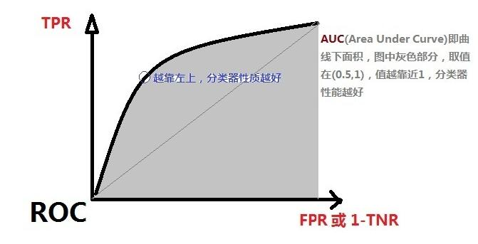

<!DOCTYPE html>
<html lang="zh" class="loading">
<head><meta name="generator" content="Hexo 3.9.0">
    <meta charset="UTF-8">
    <meta http-equiv="X-UA-Compatible" content="IE=edge,chrome=1">
    <meta name="viewport" content="width=device-width, minimum-scale=1.0, maximum-scale=1.0, user-scalable=no">
    <title>数理知识:统计决策理论|贝叶斯决策与两类错误率 - WhiteRobe&#39;s Blog</title>
    <meta name="apple-mobile-web-app-capable" content="yes">
    <meta name="apple-mobile-web-app-status-bar-style" content="black-translucent">
    <meta name="google" content="notranslate">
    <link href="https://cdnjs.cloudflare.com/ajax/libs/KaTeX/0.11.0/katex.min.css" rel="stylesheet">
    <meta name="keywords" content="WhiteRobe, Blog,"> 
    <meta name="description" content="着眼实例，从最简单的开始；你觉得再简单不过的东西，或许在别人眼里那就是悬崖。而我，愿作那攀岩绳。, 前序

  [数理知识]贝叶斯公式和最大似然估计笔记


 决策理论与方法
 基于先验概率的决策过程

记 xxx 为观察到的样本特征，分类空间为A={a1,a2...,an}A=\{a_1, a,"> 
    <meta name="author" content="WhiteRobe"> 
    <link rel="alternative" href="atom.xml" title="WhiteRobe&#39;s Blog" type="application/atom+xml"> 
    <link rel="icon" href="/img/favicon.png"> 
    <link rel="stylesheet" href="//cdn.jsdelivr.net/npm/gitalk@1/dist/gitalk.css">
    <link rel="stylesheet" href="/css/animate.css">
    <link rel="stylesheet" href="/css/fira_code.css">
    <link rel="stylesheet" href="/css/diaspora.css">
    <script async src="https://busuanzi.ibruce.info/busuanzi/2.3/busuanzi.pure.mini.js"></script>
    
        <!--站内搜索API-->
        <script src="https://cdn.jsdelivr.net/algoliasearch/3/algoliasearch.min.js"></script>
        <link rel="stylesheet" href="https://cdn.jsdelivr.net/npm/instantsearch.css@7.3.1/themes/algolia-min.css" integrity="sha256-HB49n/BZjuqiCtQQf49OdZn63XuKFaxcIHWf0HNKte8=" crossorigin="anonymous">
        <script src="https://cdn.jsdelivr.net/npm/instantsearch.js@3.4.0/dist/instantsearch.production.min.js" integrity="sha256-pM0n88cBFRHpSn0N26ETsQdwpA7WAXJDvkHeCLh3ujI=" crossorigin="anonymous"></script>
    
    <!-- <script async src="//pagead2.googlesyndication.com/pagead/js/adsbygoogle.js"></script>
    <script>
          // No more ads!
         (adsbygoogle = window.adsbygoogle || []).push({
              google_ad_client: "ca-pub-8691406134231910",
              enable_page_level_ads: true
         });
    </script>
    <script async custom-element="amp-auto-ads"
        src="https://cdn.ampproject.org/v0/amp-auto-ads-0.1.js">
    </script> -->
</head>
</html>
<body class="loading">
    <span id="config-title" style="display:none">WhiteRobe&#39;s Blog</span>
    <div id="loader"></div>
    <div id="single">
    <div id="top" style="display: block; display: block;position: fixed; top: 0px;">
    <div class="bar" style="width: 0;"></div>
    <a class="icon-home image-icon" href="javascript:;" data-url="https://blog.whiterobe.top"></a>
    <div title="播放/暂停" class="icon-play"></div>
    <h3 class="subtitle">数理知识:统计决策理论|贝叶斯决策与两类错误率</h3>
    <div class="social">
        <!--<div class="like-icon">-->
            <!--<a href="javascript:;" class="likeThis active"><span class="icon-like"></span><span class="count">76</span></a>-->
        <!--</div>-->
        <div style="font-size: 1rem;margin-right: -10px">
          分享此文：
        </div>
        <div>
          <div class="share">
              <a title="获取文章地址二维码" class="icon-scan" href="javascript:;"></a>
          </div>
          <div id="qr"></div>
        </div>
    </div>
    <div class="scrollbar"></div>
</div>

    <div class="section" style="margin-top: 50px">
        <div class="article">
    <div class='main'>
        <h1 class="title">数理知识:统计决策理论|贝叶斯决策与两类错误率</h1>
        <div class="stuff">
            <span>九月 07, 2019</span>
            <span id="busuanzi_container_page_pv" class="busuanzi_page" style="display:none">本文总阅读量<div id="busuanzi_value_page_pv" style="display: inline;">1</div>次</span>
            
  <ul class="post-tags-list"><li class="post-tags-list-item"><a class="post-tags-list-link" href="/tags/工程优化/">工程优化</a></li><li class="post-tags-list-item"><a class="post-tags-list-link" href="/tags/数理逻辑/">数理逻辑</a></li><li class="post-tags-list-item"><a class="post-tags-list-link" href="/tags/机器学习/">机器学习</a></li><li class="post-tags-list-item"><a class="post-tags-list-link" href="/tags/概率论/">概率论</a></li><li class="post-tags-list-item"><a class="post-tags-list-link" href="/tags/算法/">算法</a></li></ul>


        </div>
        <div class="low-resolution-warn-info">当前设备屏幕尺寸过小，推荐使用PC模式浏览。</div>
        <div class="content markdown">
            <h1 id="前序"><a class="markdownIt-Anchor" href="#前序"></a> 前序</h1>
<blockquote>
  <a href="../贝叶斯公式和最大似然估计笔记" target="_blank" rel="noopener">[数理知识]贝叶斯公式和最大似然估计笔记</a>
</blockquote>
<hr>
<h1 id="决策理论与方法"><a class="markdownIt-Anchor" href="#决策理论与方法"></a> 决策理论与方法</h1>
<h2 id="基于先验概率的决策过程"><a class="markdownIt-Anchor" href="#基于先验概率的决策过程"></a> 基于先验概率的决策过程</h2>
<blockquote>
<p>记 <span class="katex"><span class="katex-mathml"><math><semantics><mrow><mi>x</mi></mrow><annotation encoding="application/x-tex">x</annotation></semantics></math></span><span class="katex-html" aria-hidden="true"><span class="base"><span class="strut" style="height:0.43056em;vertical-align:0em;"></span><span class="mord mathdefault">x</span></span></span></span> 为观察到的样本特征，分类空间为<span class="katex"><span class="katex-mathml"><math><semantics><mrow><mi>A</mi><mo>=</mo><mo stretchy="false">{</mo><msub><mi>a</mi><mn>1</mn></msub><mo separator="true">,</mo><msub><mi>a</mi><mn>2</mn></msub><mi mathvariant="normal">.</mi><mi mathvariant="normal">.</mi><mi mathvariant="normal">.</mi><mo separator="true">,</mo><msub><mi>a</mi><mi>n</mi></msub><mo stretchy="false">}</mo></mrow><annotation encoding="application/x-tex">A=\{a_1, a_2...,a_n\}</annotation></semantics></math></span><span class="katex-html" aria-hidden="true"><span class="base"><span class="strut" style="height:0.68333em;vertical-align:0em;"></span><span class="mord mathdefault">A</span><span class="mspace" style="margin-right:0.2777777777777778em;"></span><span class="mrel">=</span><span class="mspace" style="margin-right:0.2777777777777778em;"></span></span><span class="base"><span class="strut" style="height:1em;vertical-align:-0.25em;"></span><span class="mopen">{</span><span class="mord"><span class="mord mathdefault">a</span><span class="msupsub"><span class="vlist-t vlist-t2"><span class="vlist-r"><span class="vlist" style="height:0.30110799999999993em;"><span style="top:-2.5500000000000003em;margin-left:0em;margin-right:0.05em;"><span class="pstrut" style="height:2.7em;"></span><span class="sizing reset-size6 size3 mtight"><span class="mord mtight">1</span></span></span></span><span class="vlist-s">​</span></span><span class="vlist-r"><span class="vlist" style="height:0.15em;"><span></span></span></span></span></span></span><span class="mpunct">,</span><span class="mspace" style="margin-right:0.16666666666666666em;"></span><span class="mord"><span class="mord mathdefault">a</span><span class="msupsub"><span class="vlist-t vlist-t2"><span class="vlist-r"><span class="vlist" style="height:0.30110799999999993em;"><span style="top:-2.5500000000000003em;margin-left:0em;margin-right:0.05em;"><span class="pstrut" style="height:2.7em;"></span><span class="sizing reset-size6 size3 mtight"><span class="mord mtight">2</span></span></span></span><span class="vlist-s">​</span></span><span class="vlist-r"><span class="vlist" style="height:0.15em;"><span></span></span></span></span></span></span><span class="mord">.</span><span class="mord">.</span><span class="mord">.</span><span class="mpunct">,</span><span class="mspace" style="margin-right:0.16666666666666666em;"></span><span class="mord"><span class="mord mathdefault">a</span><span class="msupsub"><span class="vlist-t vlist-t2"><span class="vlist-r"><span class="vlist" style="height:0.151392em;"><span style="top:-2.5500000000000003em;margin-left:0em;margin-right:0.05em;"><span class="pstrut" style="height:2.7em;"></span><span class="sizing reset-size6 size3 mtight"><span class="mord mathdefault mtight">n</span></span></span></span><span class="vlist-s">​</span></span><span class="vlist-r"><span class="vlist" style="height:0.15em;"><span></span></span></span></span></span></span><span class="mclose">}</span></span></span></span>，其中<span class="katex"><span class="katex-mathml"><math><semantics><mrow><msub><mi>a</mi><mi>i</mi></msub></mrow><annotation encoding="application/x-tex">a_i</annotation></semantics></math></span><span class="katex-html" aria-hidden="true"><span class="base"><span class="strut" style="height:0.58056em;vertical-align:-0.15em;"></span><span class="mord"><span class="mord mathdefault">a</span><span class="msupsub"><span class="vlist-t vlist-t2"><span class="vlist-r"><span class="vlist" style="height:0.31166399999999994em;"><span style="top:-2.5500000000000003em;margin-left:0em;margin-right:0.05em;"><span class="pstrut" style="height:2.7em;"></span><span class="sizing reset-size6 size3 mtight"><span class="mord mathdefault mtight">i</span></span></span></span><span class="vlist-s">​</span></span><span class="vlist-r"><span class="vlist" style="height:0.15em;"><span></span></span></span></span></span></span></span></span></span>为第<span class="katex"><span class="katex-mathml"><math><semantics><mrow><mi>i</mi></mrow><annotation encoding="application/x-tex">i</annotation></semantics></math></span><span class="katex-html" aria-hidden="true"><span class="base"><span class="strut" style="height:0.65952em;vertical-align:0em;"></span><span class="mord mathdefault">i</span></span></span></span>个类，<span class="katex"><span class="katex-mathml"><math><semantics><mrow><mi>P</mi><mo stretchy="false">(</mo><msub><mi>a</mi><mi>i</mi></msub><mo stretchy="false">)</mo></mrow><annotation encoding="application/x-tex">P(a_i)</annotation></semantics></math></span><span class="katex-html" aria-hidden="true"><span class="base"><span class="strut" style="height:1em;vertical-align:-0.25em;"></span><span class="mord mathdefault" style="margin-right:0.13889em;">P</span><span class="mopen">(</span><span class="mord"><span class="mord mathdefault">a</span><span class="msupsub"><span class="vlist-t vlist-t2"><span class="vlist-r"><span class="vlist" style="height:0.31166399999999994em;"><span style="top:-2.5500000000000003em;margin-left:0em;margin-right:0.05em;"><span class="pstrut" style="height:2.7em;"></span><span class="sizing reset-size6 size3 mtight"><span class="mord mathdefault mtight">i</span></span></span></span><span class="vlist-s">​</span></span><span class="vlist-r"><span class="vlist" style="height:0.15em;"><span></span></span></span></span></span></span><span class="mclose">)</span></span></span></span>为类<span class="katex"><span class="katex-mathml"><math><semantics><mrow><msub><mi>a</mi><mi>i</mi></msub></mrow><annotation encoding="application/x-tex">a_i</annotation></semantics></math></span><span class="katex-html" aria-hidden="true"><span class="base"><span class="strut" style="height:0.58056em;vertical-align:-0.15em;"></span><span class="mord"><span class="mord mathdefault">a</span><span class="msupsub"><span class="vlist-t vlist-t2"><span class="vlist-r"><span class="vlist" style="height:0.31166399999999994em;"><span style="top:-2.5500000000000003em;margin-left:0em;margin-right:0.05em;"><span class="pstrut" style="height:2.7em;"></span><span class="sizing reset-size6 size3 mtight"><span class="mord mathdefault mtight">i</span></span></span></span><span class="vlist-s">​</span></span><span class="vlist-r"><span class="vlist" style="height:0.15em;"><span></span></span></span></span></span></span></span></span></span>的发生概率。</p>
<ul>
<li><span class="katex"><span class="katex-mathml"><math><semantics><mrow><mi>x</mi><mo>=</mo><mo stretchy="false">[</mo><msub><mi>x</mi><mn>1</mn></msub><mo separator="true">,</mo><msub><mi>x</mi><mn>2</mn></msub><mo separator="true">,</mo><mi mathvariant="normal">.</mi><mi mathvariant="normal">.</mi><mi mathvariant="normal">.</mi><mo separator="true">,</mo><msub><mi>x</mi><mi>d</mi></msub><msup><mo stretchy="false">]</mo><mi>T</mi></msup></mrow><annotation encoding="application/x-tex">x=[x_1,x_2,...,x_d]^T</annotation></semantics></math></span><span class="katex-html" aria-hidden="true"><span class="base"><span class="strut" style="height:0.43056em;vertical-align:0em;"></span><span class="mord mathdefault">x</span><span class="mspace" style="margin-right:0.2777777777777778em;"></span><span class="mrel">=</span><span class="mspace" style="margin-right:0.2777777777777778em;"></span></span><span class="base"><span class="strut" style="height:1.0913309999999998em;vertical-align:-0.25em;"></span><span class="mopen">[</span><span class="mord"><span class="mord mathdefault">x</span><span class="msupsub"><span class="vlist-t vlist-t2"><span class="vlist-r"><span class="vlist" style="height:0.30110799999999993em;"><span style="top:-2.5500000000000003em;margin-left:0em;margin-right:0.05em;"><span class="pstrut" style="height:2.7em;"></span><span class="sizing reset-size6 size3 mtight"><span class="mord mtight">1</span></span></span></span><span class="vlist-s">​</span></span><span class="vlist-r"><span class="vlist" style="height:0.15em;"><span></span></span></span></span></span></span><span class="mpunct">,</span><span class="mspace" style="margin-right:0.16666666666666666em;"></span><span class="mord"><span class="mord mathdefault">x</span><span class="msupsub"><span class="vlist-t vlist-t2"><span class="vlist-r"><span class="vlist" style="height:0.30110799999999993em;"><span style="top:-2.5500000000000003em;margin-left:0em;margin-right:0.05em;"><span class="pstrut" style="height:2.7em;"></span><span class="sizing reset-size6 size3 mtight"><span class="mord mtight">2</span></span></span></span><span class="vlist-s">​</span></span><span class="vlist-r"><span class="vlist" style="height:0.15em;"><span></span></span></span></span></span></span><span class="mpunct">,</span><span class="mspace" style="margin-right:0.16666666666666666em;"></span><span class="mord">.</span><span class="mord">.</span><span class="mord">.</span><span class="mpunct">,</span><span class="mspace" style="margin-right:0.16666666666666666em;"></span><span class="mord"><span class="mord mathdefault">x</span><span class="msupsub"><span class="vlist-t vlist-t2"><span class="vlist-r"><span class="vlist" style="height:0.33610799999999996em;"><span style="top:-2.5500000000000003em;margin-left:0em;margin-right:0.05em;"><span class="pstrut" style="height:2.7em;"></span><span class="sizing reset-size6 size3 mtight"><span class="mord mathdefault mtight">d</span></span></span></span><span class="vlist-s">​</span></span><span class="vlist-r"><span class="vlist" style="height:0.15em;"><span></span></span></span></span></span></span><span class="mclose"><span class="mclose">]</span><span class="msupsub"><span class="vlist-t"><span class="vlist-r"><span class="vlist" style="height:0.8413309999999999em;"><span style="top:-3.063em;margin-right:0.05em;"><span class="pstrut" style="height:2.7em;"></span><span class="sizing reset-size6 size3 mtight"><span class="mord mathdefault mtight" style="margin-right:0.13889em;">T</span></span></span></span></span></span></span></span></span></span></span>为由<span class="katex"><span class="katex-mathml"><math><semantics><mrow><mi>d</mi></mrow><annotation encoding="application/x-tex">d</annotation></semantics></math></span><span class="katex-html" aria-hidden="true"><span class="base"><span class="strut" style="height:0.69444em;vertical-align:0em;"></span><span class="mord mathdefault">d</span></span></span></span>维空间组成的特征向量。</li>
<li>当 <span class="katex"><span class="katex-mathml"><math><semantics><mrow><mi>P</mi><mo stretchy="false">(</mo><msub><mi>a</mi><mi>j</mi></msub><mo stretchy="false">)</mo><mo>&gt;</mo><mi>P</mi><mo stretchy="false">(</mo><msub><mi>a</mi><mrow><mi>o</mi><mi>t</mi><mi>h</mi><mi>e</mi><mi>r</mi><mi>s</mi></mrow></msub><mo stretchy="false">)</mo></mrow><annotation encoding="application/x-tex">P(a_j)&gt;P(a_{others})</annotation></semantics></math></span><span class="katex-html" aria-hidden="true"><span class="base"><span class="strut" style="height:1.036108em;vertical-align:-0.286108em;"></span><span class="mord mathdefault" style="margin-right:0.13889em;">P</span><span class="mopen">(</span><span class="mord"><span class="mord mathdefault">a</span><span class="msupsub"><span class="vlist-t vlist-t2"><span class="vlist-r"><span class="vlist" style="height:0.311664em;"><span style="top:-2.5500000000000003em;margin-left:0em;margin-right:0.05em;"><span class="pstrut" style="height:2.7em;"></span><span class="sizing reset-size6 size3 mtight"><span class="mord mathdefault mtight" style="margin-right:0.05724em;">j</span></span></span></span><span class="vlist-s">​</span></span><span class="vlist-r"><span class="vlist" style="height:0.286108em;"><span></span></span></span></span></span></span><span class="mclose">)</span><span class="mspace" style="margin-right:0.2777777777777778em;"></span><span class="mrel">&gt;</span><span class="mspace" style="margin-right:0.2777777777777778em;"></span></span><span class="base"><span class="strut" style="height:1em;vertical-align:-0.25em;"></span><span class="mord mathdefault" style="margin-right:0.13889em;">P</span><span class="mopen">(</span><span class="mord"><span class="mord mathdefault">a</span><span class="msupsub"><span class="vlist-t vlist-t2"><span class="vlist-r"><span class="vlist" style="height:0.33610799999999996em;"><span style="top:-2.5500000000000003em;margin-left:0em;margin-right:0.05em;"><span class="pstrut" style="height:2.7em;"></span><span class="sizing reset-size6 size3 mtight"><span class="mord mtight"><span class="mord mathdefault mtight">o</span><span class="mord mathdefault mtight">t</span><span class="mord mathdefault mtight">h</span><span class="mord mathdefault mtight">e</span><span class="mord mathdefault mtight" style="margin-right:0.02778em;">r</span><span class="mord mathdefault mtight">s</span></span></span></span></span><span class="vlist-s">​</span></span><span class="vlist-r"><span class="vlist" style="height:0.15em;"><span></span></span></span></span></span></span><span class="mclose">)</span></span></span></span>时，记<strong>决策规则</strong><span class="katex"><span class="katex-mathml"><math><semantics><mrow><mi>x</mi><mo>∈</mo><msub><mi>a</mi><mi>j</mi></msub></mrow><annotation encoding="application/x-tex">x \in a_j</annotation></semantics></math></span><span class="katex-html" aria-hidden="true"><span class="base"><span class="strut" style="height:0.5782em;vertical-align:-0.0391em;"></span><span class="mord mathdefault">x</span><span class="mspace" style="margin-right:0.2777777777777778em;"></span><span class="mrel">∈</span><span class="mspace" style="margin-right:0.2777777777777778em;"></span></span><span class="base"><span class="strut" style="height:0.716668em;vertical-align:-0.286108em;"></span><span class="mord"><span class="mord mathdefault">a</span><span class="msupsub"><span class="vlist-t vlist-t2"><span class="vlist-r"><span class="vlist" style="height:0.311664em;"><span style="top:-2.5500000000000003em;margin-left:0em;margin-right:0.05em;"><span class="pstrut" style="height:2.7em;"></span><span class="sizing reset-size6 size3 mtight"><span class="mord mathdefault mtight" style="margin-right:0.05724em;">j</span></span></span></span><span class="vlist-s">​</span></span><span class="vlist-r"><span class="vlist" style="height:0.286108em;"><span></span></span></span></span></span></span></span></span></span>。</li>
<li>当做出决策<span class="katex"><span class="katex-mathml"><math><semantics><mrow><mi>x</mi><mo>∈</mo><msub><mi>a</mi><mi>j</mi></msub></mrow><annotation encoding="application/x-tex">x \in a_j</annotation></semantics></math></span><span class="katex-html" aria-hidden="true"><span class="base"><span class="strut" style="height:0.5782em;vertical-align:-0.0391em;"></span><span class="mord mathdefault">x</span><span class="mspace" style="margin-right:0.2777777777777778em;"></span><span class="mrel">∈</span><span class="mspace" style="margin-right:0.2777777777777778em;"></span></span><span class="base"><span class="strut" style="height:0.716668em;vertical-align:-0.286108em;"></span><span class="mord"><span class="mord mathdefault">a</span><span class="msupsub"><span class="vlist-t vlist-t2"><span class="vlist-r"><span class="vlist" style="height:0.311664em;"><span style="top:-2.5500000000000003em;margin-left:0em;margin-right:0.05em;"><span class="pstrut" style="height:2.7em;"></span><span class="sizing reset-size6 size3 mtight"><span class="mord mathdefault mtight" style="margin-right:0.05724em;">j</span></span></span></span><span class="vlist-s">​</span></span><span class="vlist-r"><span class="vlist" style="height:0.286108em;"><span></span></span></span></span></span></span></span></span></span>之后，<strong>单类分类错误率</strong><span class="katex"><span class="katex-mathml"><math><semantics><mrow><mi>P</mi><mo stretchy="false">(</mo><msub><mrow><mi>e</mi><mi>r</mi><mi>r</mi><mi>o</mi><mi>r</mi></mrow><mi>j</mi></msub><mo stretchy="false">)</mo><mo>=</mo><mn>1</mn><mo>−</mo><mi>P</mi><mo stretchy="false">(</mo><msub><mi>a</mi><mi>j</mi></msub><mo stretchy="false">)</mo></mrow><annotation encoding="application/x-tex">P({error}_j)=1-P(a_j)</annotation></semantics></math></span><span class="katex-html" aria-hidden="true"><span class="base"><span class="strut" style="height:1.036108em;vertical-align:-0.286108em;"></span><span class="mord mathdefault" style="margin-right:0.13889em;">P</span><span class="mopen">(</span><span class="mord"><span class="mord"><span class="mord mathdefault">e</span><span class="mord mathdefault" style="margin-right:0.02778em;">r</span><span class="mord mathdefault" style="margin-right:0.02778em;">r</span><span class="mord mathdefault">o</span><span class="mord mathdefault" style="margin-right:0.02778em;">r</span></span><span class="msupsub"><span class="vlist-t vlist-t2"><span class="vlist-r"><span class="vlist" style="height:0.311664em;"><span style="top:-2.5500000000000003em;margin-right:0.05em;"><span class="pstrut" style="height:2.7em;"></span><span class="sizing reset-size6 size3 mtight"><span class="mord mathdefault mtight" style="margin-right:0.05724em;">j</span></span></span></span><span class="vlist-s">​</span></span><span class="vlist-r"><span class="vlist" style="height:0.286108em;"><span></span></span></span></span></span></span><span class="mclose">)</span><span class="mspace" style="margin-right:0.2777777777777778em;"></span><span class="mrel">=</span><span class="mspace" style="margin-right:0.2777777777777778em;"></span></span><span class="base"><span class="strut" style="height:0.72777em;vertical-align:-0.08333em;"></span><span class="mord">1</span><span class="mspace" style="margin-right:0.2222222222222222em;"></span><span class="mbin">−</span><span class="mspace" style="margin-right:0.2222222222222222em;"></span></span><span class="base"><span class="strut" style="height:1.036108em;vertical-align:-0.286108em;"></span><span class="mord mathdefault" style="margin-right:0.13889em;">P</span><span class="mopen">(</span><span class="mord"><span class="mord mathdefault">a</span><span class="msupsub"><span class="vlist-t vlist-t2"><span class="vlist-r"><span class="vlist" style="height:0.311664em;"><span style="top:-2.5500000000000003em;margin-left:0em;margin-right:0.05em;"><span class="pstrut" style="height:2.7em;"></span><span class="sizing reset-size6 size3 mtight"><span class="mord mathdefault mtight" style="margin-right:0.05724em;">j</span></span></span></span><span class="vlist-s">​</span></span><span class="vlist-r"><span class="vlist" style="height:0.286108em;"><span></span></span></span></span></span></span><span class="mclose">)</span></span></span></span>，即 <span class="katex"><span class="katex-mathml"><math><semantics><mrow><mi>x</mi><mi mathvariant="normal">∉</mi><msub><mi>a</mi><mi>j</mi></msub></mrow><annotation encoding="application/x-tex">x \notin a_j</annotation></semantics></math></span><span class="katex-html" aria-hidden="true"><span class="base"><span class="strut" style="height:1em;vertical-align:-0.25em;"></span><span class="mord mathdefault">x</span><span class="mspace" style="margin-right:0.2777777777777778em;"></span><span class="mrel"><span class="mord"><span class="mrel">∈</span></span><span class="mord"><span class="vlist-t vlist-t2"><span class="vlist-r"><span class="vlist" style="height:0.75em;"><span style="top:-3em;"><span class="pstrut" style="height:3em;"></span><span class="llap"><span class="strut" style="height:1em;vertical-align:-0.25em;"></span><span class="inner"><span class="mord"><span class="mord">/</span><span class="mspace" style="margin-right:0.05555555555555555em;"></span></span></span><span class="fix"></span></span></span></span><span class="vlist-s">​</span></span><span class="vlist-r"><span class="vlist" style="height:0.25em;"><span></span></span></span></span></span></span><span class="mspace" style="margin-right:0.2777777777777778em;"></span></span><span class="base"><span class="strut" style="height:0.716668em;vertical-align:-0.286108em;"></span><span class="mord"><span class="mord mathdefault">a</span><span class="msupsub"><span class="vlist-t vlist-t2"><span class="vlist-r"><span class="vlist" style="height:0.311664em;"><span style="top:-2.5500000000000003em;margin-left:0em;margin-right:0.05em;"><span class="pstrut" style="height:2.7em;"></span><span class="sizing reset-size6 size3 mtight"><span class="mord mathdefault mtight" style="margin-right:0.05724em;">j</span></span></span></span><span class="vlist-s">​</span></span><span class="vlist-r"><span class="vlist" style="height:0.286108em;"><span></span></span></span></span></span></span></span></span></span>的概率。</li>
</ul>
</blockquote>
<p>可以看到，一般决策过程仅依靠先验概率<span class="katex"><span class="katex-mathml"><math><semantics><mrow><mi>P</mi><mo stretchy="false">(</mo><msub><mi>a</mi><mi>j</mi></msub><mo stretchy="false">)</mo></mrow><annotation encoding="application/x-tex">P(a_j)</annotation></semantics></math></span><span class="katex-html" aria-hidden="true"><span class="base"><span class="strut" style="height:1.036108em;vertical-align:-0.286108em;"></span><span class="mord mathdefault" style="margin-right:0.13889em;">P</span><span class="mopen">(</span><span class="mord"><span class="mord mathdefault">a</span><span class="msupsub"><span class="vlist-t vlist-t2"><span class="vlist-r"><span class="vlist" style="height:0.311664em;"><span style="top:-2.5500000000000003em;margin-left:0em;margin-right:0.05em;"><span class="pstrut" style="height:2.7em;"></span><span class="sizing reset-size6 size3 mtight"><span class="mord mathdefault mtight" style="margin-right:0.05724em;">j</span></span></span></span><span class="vlist-s">​</span></span><span class="vlist-r"><span class="vlist" style="height:0.286108em;"><span></span></span></span></span></span></span><span class="mclose">)</span></span></span></span>，使得对 <span class="katex"><span class="katex-mathml"><math><semantics><mrow><mi>x</mi></mrow><annotation encoding="application/x-tex">x</annotation></semantics></math></span><span class="katex-html" aria-hidden="true"><span class="base"><span class="strut" style="height:0.43056em;vertical-align:0em;"></span><span class="mord mathdefault">x</span></span></span></span> 的观察(特征参考)并没有对决策过程产生影响，总体错误率仍有降低的空间。</p>
<h2 id="基于贝叶斯公式的决策过程"><a class="markdownIt-Anchor" href="#基于贝叶斯公式的决策过程"></a> 基于贝叶斯公式的决策过程</h2>
<blockquote>
<b>贝叶斯决策</b>：在观察到$x$ 的样本特征后，基于<b>贝叶斯公式</b>，可以有效降低分类错误率：
<p class="katex-block"><span class="katex-display"><span class="katex"><span class="katex-mathml"><math><semantics><mtable rowspacing="0.24999999999999992em" columnalign="right left" columnspacing="0em"><mtr><mtd><mstyle scriptlevel="0" displaystyle="true"><mrow><mi>P</mi><mo stretchy="false">(</mo><msub><mi>a</mi><mi>i</mi></msub><mi mathvariant="normal">∣</mi><mi>x</mi><mo stretchy="false">)</mo></mrow></mstyle></mtd><mtd><mstyle scriptlevel="0" displaystyle="true"><mrow><mrow></mrow><mo>=</mo><mfrac><mrow><mi>p</mi><mo stretchy="false">(</mo><mi>x</mi><mi mathvariant="normal">∣</mi><msub><mi>a</mi><mi>i</mi></msub><mo stretchy="false">)</mo><mi>P</mi><mo stretchy="false">(</mo><msub><mi>a</mi><mi>i</mi></msub><mo stretchy="false">)</mo></mrow><mrow><mi>p</mi><mo stretchy="false">(</mo><mi>x</mi><mo stretchy="false">)</mo></mrow></mfrac></mrow></mstyle></mtd></mtr><mtr><mtd><mstyle scriptlevel="0" displaystyle="true"><mrow></mrow></mstyle></mtd><mtd><mstyle scriptlevel="0" displaystyle="true"><mrow><mrow></mrow><mo>=</mo><mfrac><mrow><mi>p</mi><mo stretchy="false">(</mo><mi>x</mi><mi mathvariant="normal">∣</mi><msub><mi>a</mi><mi>i</mi></msub><mo stretchy="false">)</mo><mi>P</mi><mo stretchy="false">(</mo><msub><mi>a</mi><mi>i</mi></msub><mo stretchy="false">)</mo></mrow><mrow><munderover><mo>∑</mo><mrow><mi>j</mi><mo>=</mo><mn>1</mn></mrow><mi>n</mi></munderover><mrow><mi>p</mi><mo stretchy="false">(</mo><mi>x</mi><mi mathvariant="normal">∣</mi><msub><mi>a</mi><mi>j</mi></msub><mo stretchy="false">)</mo><mi>P</mi><mo stretchy="false">(</mo><msub><mi>a</mi><mi>j</mi></msub><mo stretchy="false">)</mo></mrow></mrow></mfrac></mrow></mstyle></mtd></mtr></mtable><annotation encoding="application/x-tex">\begin{aligned} 
P(a_i|x)&amp;=\frac{p(x|a_i)P(a_i)}{p(x)} \\
&amp;=\frac{p(x|a_i)P(a_i)}{ \sum_{j=1}^n{ p(x|a_j)P(a_j) } }\\
\end{aligned}
</annotation></semantics></math></span><span class="katex-html" aria-hidden="true"><span class="base"><span class="strut" style="height:5.52011em;vertical-align:-2.510055em;"></span><span class="mord"><span class="mtable"><span class="col-align-r"><span class="vlist-t vlist-t2"><span class="vlist-r"><span class="vlist" style="height:3.010055em;"><span style="top:-5.0100549999999995em;"><span class="pstrut" style="height:3.427em;"></span><span class="mord"><span class="mord mathdefault" style="margin-right:0.13889em;">P</span><span class="mopen">(</span><span class="mord"><span class="mord mathdefault">a</span><span class="msupsub"><span class="vlist-t vlist-t2"><span class="vlist-r"><span class="vlist" style="height:0.31166399999999994em;"><span style="top:-2.5500000000000003em;margin-left:0em;margin-right:0.05em;"><span class="pstrut" style="height:2.7em;"></span><span class="sizing reset-size6 size3 mtight"><span class="mord mathdefault mtight">i</span></span></span></span><span class="vlist-s">​</span></span><span class="vlist-r"><span class="vlist" style="height:0.15em;"><span></span></span></span></span></span></span><span class="mord">∣</span><span class="mord mathdefault">x</span><span class="mclose">)</span></span></span><span style="top:-2.347055em;"><span class="pstrut" style="height:3.427em;"></span><span class="mord"></span></span></span><span class="vlist-s">​</span></span><span class="vlist-r"><span class="vlist" style="height:2.510055em;"><span></span></span></span></span></span><span class="col-align-l"><span class="vlist-t vlist-t2"><span class="vlist-r"><span class="vlist" style="height:3.010055em;"><span style="top:-5.0100549999999995em;"><span class="pstrut" style="height:3.427em;"></span><span class="mord"><span class="mord"></span><span class="mspace" style="margin-right:0.2777777777777778em;"></span><span class="mrel">=</span><span class="mspace" style="margin-right:0.2777777777777778em;"></span><span class="mord"><span class="mopen nulldelimiter"></span><span class="mfrac"><span class="vlist-t vlist-t2"><span class="vlist-r"><span class="vlist" style="height:1.427em;"><span style="top:-2.314em;"><span class="pstrut" style="height:3em;"></span><span class="mord"><span class="mord mathdefault">p</span><span class="mopen">(</span><span class="mord mathdefault">x</span><span class="mclose">)</span></span></span><span style="top:-3.23em;"><span class="pstrut" style="height:3em;"></span><span class="frac-line" style="border-bottom-width:0.04em;"></span></span><span style="top:-3.677em;"><span class="pstrut" style="height:3em;"></span><span class="mord"><span class="mord mathdefault">p</span><span class="mopen">(</span><span class="mord mathdefault">x</span><span class="mord">∣</span><span class="mord"><span class="mord mathdefault">a</span><span class="msupsub"><span class="vlist-t vlist-t2"><span class="vlist-r"><span class="vlist" style="height:0.31166399999999994em;"><span style="top:-2.5500000000000003em;margin-left:0em;margin-right:0.05em;"><span class="pstrut" style="height:2.7em;"></span><span class="sizing reset-size6 size3 mtight"><span class="mord mathdefault mtight">i</span></span></span></span><span class="vlist-s">​</span></span><span class="vlist-r"><span class="vlist" style="height:0.15em;"><span></span></span></span></span></span></span><span class="mclose">)</span><span class="mord mathdefault" style="margin-right:0.13889em;">P</span><span class="mopen">(</span><span class="mord"><span class="mord mathdefault">a</span><span class="msupsub"><span class="vlist-t vlist-t2"><span class="vlist-r"><span class="vlist" style="height:0.31166399999999994em;"><span style="top:-2.5500000000000003em;margin-left:0em;margin-right:0.05em;"><span class="pstrut" style="height:2.7em;"></span><span class="sizing reset-size6 size3 mtight"><span class="mord mathdefault mtight">i</span></span></span></span><span class="vlist-s">​</span></span><span class="vlist-r"><span class="vlist" style="height:0.15em;"><span></span></span></span></span></span></span><span class="mclose">)</span></span></span></span><span class="vlist-s">​</span></span><span class="vlist-r"><span class="vlist" style="height:0.936em;"><span></span></span></span></span></span><span class="mclose nulldelimiter"></span></span></span></span><span style="top:-2.347055em;"><span class="pstrut" style="height:3.427em;"></span><span class="mord"><span class="mord"></span><span class="mspace" style="margin-right:0.2777777777777778em;"></span><span class="mrel">=</span><span class="mspace" style="margin-right:0.2777777777777778em;"></span><span class="mord"><span class="mopen nulldelimiter"></span><span class="mfrac"><span class="vlist-t vlist-t2"><span class="vlist-r"><span class="vlist" style="height:1.427em;"><span style="top:-2.305708em;"><span class="pstrut" style="height:3em;"></span><span class="mord"><span class="mop"><span class="mop op-symbol small-op" style="position:relative;top:-0.0000050000000000050004em;">∑</span><span class="msupsub"><span class="vlist-t vlist-t2"><span class="vlist-r"><span class="vlist" style="height:0.804292em;"><span style="top:-2.40029em;margin-left:0em;margin-right:0.05em;"><span class="pstrut" style="height:2.7em;"></span><span class="sizing reset-size6 size3 mtight"><span class="mord mtight"><span class="mord mathdefault mtight" style="margin-right:0.05724em;">j</span><span class="mrel mtight">=</span><span class="mord mtight">1</span></span></span></span><span style="top:-3.2029em;margin-right:0.05em;"><span class="pstrut" style="height:2.7em;"></span><span class="sizing reset-size6 size3 mtight"><span class="mord mathdefault mtight">n</span></span></span></span><span class="vlist-s">​</span></span><span class="vlist-r"><span class="vlist" style="height:0.43581800000000004em;"><span></span></span></span></span></span></span><span class="mspace" style="margin-right:0.16666666666666666em;"></span><span class="mord"><span class="mord mathdefault">p</span><span class="mopen">(</span><span class="mord mathdefault">x</span><span class="mord">∣</span><span class="mord"><span class="mord mathdefault">a</span><span class="msupsub"><span class="vlist-t vlist-t2"><span class="vlist-r"><span class="vlist" style="height:0.311664em;"><span style="top:-2.5500000000000003em;margin-left:0em;margin-right:0.05em;"><span class="pstrut" style="height:2.7em;"></span><span class="sizing reset-size6 size3 mtight"><span class="mord mathdefault mtight" style="margin-right:0.05724em;">j</span></span></span></span><span class="vlist-s">​</span></span><span class="vlist-r"><span class="vlist" style="height:0.286108em;"><span></span></span></span></span></span></span><span class="mclose">)</span><span class="mord mathdefault" style="margin-right:0.13889em;">P</span><span class="mopen">(</span><span class="mord"><span class="mord mathdefault">a</span><span class="msupsub"><span class="vlist-t vlist-t2"><span class="vlist-r"><span class="vlist" style="height:0.311664em;"><span style="top:-2.5500000000000003em;margin-left:0em;margin-right:0.05em;"><span class="pstrut" style="height:2.7em;"></span><span class="sizing reset-size6 size3 mtight"><span class="mord mathdefault mtight" style="margin-right:0.05724em;">j</span></span></span></span><span class="vlist-s">​</span></span><span class="vlist-r"><span class="vlist" style="height:0.286108em;"><span></span></span></span></span></span></span><span class="mclose">)</span></span></span></span><span style="top:-3.23em;"><span class="pstrut" style="height:3em;"></span><span class="frac-line" style="border-bottom-width:0.04em;"></span></span><span style="top:-3.677em;"><span class="pstrut" style="height:3em;"></span><span class="mord"><span class="mord mathdefault">p</span><span class="mopen">(</span><span class="mord mathdefault">x</span><span class="mord">∣</span><span class="mord"><span class="mord mathdefault">a</span><span class="msupsub"><span class="vlist-t vlist-t2"><span class="vlist-r"><span class="vlist" style="height:0.31166399999999994em;"><span style="top:-2.5500000000000003em;margin-left:0em;margin-right:0.05em;"><span class="pstrut" style="height:2.7em;"></span><span class="sizing reset-size6 size3 mtight"><span class="mord mathdefault mtight">i</span></span></span></span><span class="vlist-s">​</span></span><span class="vlist-r"><span class="vlist" style="height:0.15em;"><span></span></span></span></span></span></span><span class="mclose">)</span><span class="mord mathdefault" style="margin-right:0.13889em;">P</span><span class="mopen">(</span><span class="mord"><span class="mord mathdefault">a</span><span class="msupsub"><span class="vlist-t vlist-t2"><span class="vlist-r"><span class="vlist" style="height:0.31166399999999994em;"><span style="top:-2.5500000000000003em;margin-left:0em;margin-right:0.05em;"><span class="pstrut" style="height:2.7em;"></span><span class="sizing reset-size6 size3 mtight"><span class="mord mathdefault mtight">i</span></span></span></span><span class="vlist-s">​</span></span><span class="vlist-r"><span class="vlist" style="height:0.15em;"><span></span></span></span></span></span></span><span class="mclose">)</span></span></span></span><span class="vlist-s">​</span></span><span class="vlist-r"><span class="vlist" style="height:1.1301100000000002em;"><span></span></span></span></span></span><span class="mclose nulldelimiter"></span></span></span></span></span><span class="vlist-s">​</span></span><span class="vlist-r"><span class="vlist" style="height:2.510055em;"><span></span></span></span></span></span></span></span></span></span></span></span></p>
<p>其中, <span class="katex"><span class="katex-mathml"><math><semantics><mrow><mi>p</mi><mo stretchy="false">(</mo><mi>x</mi><mi mathvariant="normal">∣</mi><msub><mi>a</mi><mi>i</mi></msub><mo stretchy="false">)</mo></mrow><annotation encoding="application/x-tex">p(x|a_i)</annotation></semantics></math></span><span class="katex-html" aria-hidden="true"><span class="base"><span class="strut" style="height:1em;vertical-align:-0.25em;"></span><span class="mord mathdefault">p</span><span class="mopen">(</span><span class="mord mathdefault">x</span><span class="mord">∣</span><span class="mord"><span class="mord mathdefault">a</span><span class="msupsub"><span class="vlist-t vlist-t2"><span class="vlist-r"><span class="vlist" style="height:0.31166399999999994em;"><span style="top:-2.5500000000000003em;margin-left:0em;margin-right:0.05em;"><span class="pstrut" style="height:2.7em;"></span><span class="sizing reset-size6 size3 mtight"><span class="mord mathdefault mtight">i</span></span></span></span><span class="vlist-s">​</span></span><span class="vlist-r"><span class="vlist" style="height:0.15em;"><span></span></span></span></span></span></span><span class="mclose">)</span></span></span></span>是<strong>类条件密度</strong>，<span class="katex"><span class="katex-mathml"><math><semantics><mrow><mi>P</mi><mo stretchy="false">(</mo><msub><mi>a</mi><mi>i</mi></msub><mo stretchy="false">)</mo></mrow><annotation encoding="application/x-tex">P(a_i)</annotation></semantics></math></span><span class="katex-html" aria-hidden="true"><span class="base"><span class="strut" style="height:1em;vertical-align:-0.25em;"></span><span class="mord mathdefault" style="margin-right:0.13889em;">P</span><span class="mopen">(</span><span class="mord"><span class="mord mathdefault">a</span><span class="msupsub"><span class="vlist-t vlist-t2"><span class="vlist-r"><span class="vlist" style="height:0.31166399999999994em;"><span style="top:-2.5500000000000003em;margin-left:0em;margin-right:0.05em;"><span class="pstrut" style="height:2.7em;"></span><span class="sizing reset-size6 size3 mtight"><span class="mord mathdefault mtight">i</span></span></span></span><span class="vlist-s">​</span></span><span class="vlist-r"><span class="vlist" style="height:0.15em;"><span></span></span></span></span></span></span><span class="mclose">)</span></span></span></span>是<strong>先验概率</strong>，<span class="katex"><span class="katex-mathml"><math><semantics><mrow><mi>p</mi><mo stretchy="false">(</mo><mi>x</mi><mo stretchy="false">)</mo></mrow><annotation encoding="application/x-tex">p(x)</annotation></semantics></math></span><span class="katex-html" aria-hidden="true"><span class="base"><span class="strut" style="height:1em;vertical-align:-0.25em;"></span><span class="mord mathdefault">p</span><span class="mopen">(</span><span class="mord mathdefault">x</span><span class="mclose">)</span></span></span></span>是<strong>总体密度</strong>，<span class="katex"><span class="katex-mathml"><math><semantics><mrow><mi>P</mi><mo stretchy="false">(</mo><msub><mi>a</mi><mi>i</mi></msub><mi mathvariant="normal">∣</mi><mi>x</mi><mo stretchy="false">)</mo></mrow><annotation encoding="application/x-tex">P(a_i|x)</annotation></semantics></math></span><span class="katex-html" aria-hidden="true"><span class="base"><span class="strut" style="height:1em;vertical-align:-0.25em;"></span><span class="mord mathdefault" style="margin-right:0.13889em;">P</span><span class="mopen">(</span><span class="mord"><span class="mord mathdefault">a</span><span class="msupsub"><span class="vlist-t vlist-t2"><span class="vlist-r"><span class="vlist" style="height:0.31166399999999994em;"><span style="top:-2.5500000000000003em;margin-left:0em;margin-right:0.05em;"><span class="pstrut" style="height:2.7em;"></span><span class="sizing reset-size6 size3 mtight"><span class="mord mathdefault mtight">i</span></span></span></span><span class="vlist-s">​</span></span><span class="vlist-r"><span class="vlist" style="height:0.15em;"><span></span></span></span></span></span></span><span class="mord">∣</span><span class="mord mathdefault">x</span><span class="mclose">)</span></span></span></span>是<strong>后验概率</strong>；</p>
</blockquote>
<ul>
<li>因此在本质上，贝叶斯决策是指：[后验概率]等于[先验概率]与[类条件密度]的乘积，最后采用[总体密度]做归一化。同时，[总体密度]由<strong>全概率公式</strong>又可以转化为所有类的[先验概率]与其[类概率密度]乘积之和。</li>
</ul>
<blockquote>
<p>贝叶斯决策也被称作<strong>统计决策理论</strong>。</p>
</blockquote>
<ul>
<li>记<span class="katex"><span class="katex-mathml"><math><semantics><mrow><mi>λ</mi><mo>=</mo><mfrac><mrow><mi>p</mi><mo stretchy="false">(</mo><mi>x</mi><mi mathvariant="normal">∣</mi><msub><mi>a</mi><mi>i</mi></msub><mo stretchy="false">)</mo></mrow><mrow><mi>p</mi><mo stretchy="false">(</mo><mi>x</mi><mo stretchy="false">)</mo></mrow></mfrac></mrow><annotation encoding="application/x-tex">\lambda = \frac{p(x|a_i)}{p(x)}</annotation></semantics></math></span><span class="katex-html" aria-hidden="true"><span class="base"><span class="strut" style="height:0.69444em;vertical-align:0em;"></span><span class="mord mathdefault">λ</span><span class="mspace" style="margin-right:0.2777777777777778em;"></span><span class="mrel">=</span><span class="mspace" style="margin-right:0.2777777777777778em;"></span></span><span class="base"><span class="strut" style="height:1.53em;vertical-align:-0.52em;"></span><span class="mord"><span class="mopen nulldelimiter"></span><span class="mfrac"><span class="vlist-t vlist-t2"><span class="vlist-r"><span class="vlist" style="height:1.01em;"><span style="top:-2.655em;"><span class="pstrut" style="height:3em;"></span><span class="sizing reset-size6 size3 mtight"><span class="mord mtight"><span class="mord mathdefault mtight">p</span><span class="mopen mtight">(</span><span class="mord mathdefault mtight">x</span><span class="mclose mtight">)</span></span></span></span><span style="top:-3.23em;"><span class="pstrut" style="height:3em;"></span><span class="frac-line" style="border-bottom-width:0.04em;"></span></span><span style="top:-3.485em;"><span class="pstrut" style="height:3em;"></span><span class="sizing reset-size6 size3 mtight"><span class="mord mtight"><span class="mord mathdefault mtight">p</span><span class="mopen mtight">(</span><span class="mord mathdefault mtight">x</span><span class="mord mtight">∣</span><span class="mord mtight"><span class="mord mathdefault mtight">a</span><span class="msupsub"><span class="vlist-t vlist-t2"><span class="vlist-r"><span class="vlist" style="height:0.3280857142857143em;"><span style="top:-2.357em;margin-left:0em;margin-right:0.07142857142857144em;"><span class="pstrut" style="height:2.5em;"></span><span class="sizing reset-size3 size1 mtight"><span class="mord mathdefault mtight">i</span></span></span></span><span class="vlist-s">​</span></span><span class="vlist-r"><span class="vlist" style="height:0.143em;"><span></span></span></span></span></span></span><span class="mclose mtight">)</span></span></span></span></span><span class="vlist-s">​</span></span><span class="vlist-r"><span class="vlist" style="height:0.52em;"><span></span></span></span></span></span><span class="mclose nulldelimiter"></span></span></span></span></span> ，所以基于贝叶斯决策的决策的错误率：</li>
</ul>
<p class="katex-block"><span class="katex-display"><span class="katex"><span class="katex-mathml"><math><semantics><mtable rowspacing="0.24999999999999992em" columnalign="right left" columnspacing="0em"><mtr><mtd><mstyle scriptlevel="0" displaystyle="true"><mrow><mi>P</mi><mo stretchy="false">(</mo><msub><mrow><mi>e</mi><mi>r</mi><mi>r</mi><mi>o</mi><mi>r</mi></mrow><mi>i</mi></msub><mo stretchy="false">)</mo></mrow></mstyle></mtd><mtd><mstyle scriptlevel="0" displaystyle="true"><mrow><mrow></mrow><mo>=</mo><mn>1</mn><mo>−</mo><mi>P</mi><mo stretchy="false">(</mo><msub><mi>a</mi><mi>i</mi></msub><mi mathvariant="normal">∣</mi><mi>x</mi><mo stretchy="false">)</mo></mrow></mstyle></mtd></mtr><mtr><mtd><mstyle scriptlevel="0" displaystyle="true"><mrow></mrow></mstyle></mtd><mtd><mstyle scriptlevel="0" displaystyle="true"><mrow><mrow></mrow><mo>=</mo><mn>1</mn><mo>−</mo><mi>λ</mi><mo>×</mo><mi>P</mi><mo stretchy="false">(</mo><msub><mi>a</mi><mi>i</mi></msub><mo stretchy="false">)</mo></mrow></mstyle></mtd></mtr></mtable><annotation encoding="application/x-tex">\begin{aligned} 
P({error}_i)&amp;=1-P(a_i|x) \\
&amp;=1-\lambda \times P(a_i)
\end{aligned}
</annotation></semantics></math></span><span class="katex-html" aria-hidden="true"><span class="base"><span class="strut" style="height:3.0000000000000004em;vertical-align:-1.2500000000000002em;"></span><span class="mord"><span class="mtable"><span class="col-align-r"><span class="vlist-t vlist-t2"><span class="vlist-r"><span class="vlist" style="height:1.7500000000000002em;"><span style="top:-3.91em;"><span class="pstrut" style="height:3em;"></span><span class="mord"><span class="mord mathdefault" style="margin-right:0.13889em;">P</span><span class="mopen">(</span><span class="mord"><span class="mord"><span class="mord mathdefault">e</span><span class="mord mathdefault" style="margin-right:0.02778em;">r</span><span class="mord mathdefault" style="margin-right:0.02778em;">r</span><span class="mord mathdefault">o</span><span class="mord mathdefault" style="margin-right:0.02778em;">r</span></span><span class="msupsub"><span class="vlist-t vlist-t2"><span class="vlist-r"><span class="vlist" style="height:0.31166399999999994em;"><span style="top:-2.5500000000000003em;margin-right:0.05em;"><span class="pstrut" style="height:2.7em;"></span><span class="sizing reset-size6 size3 mtight"><span class="mord mathdefault mtight">i</span></span></span></span><span class="vlist-s">​</span></span><span class="vlist-r"><span class="vlist" style="height:0.15em;"><span></span></span></span></span></span></span><span class="mclose">)</span></span></span><span style="top:-2.41em;"><span class="pstrut" style="height:3em;"></span><span class="mord"></span></span></span><span class="vlist-s">​</span></span><span class="vlist-r"><span class="vlist" style="height:1.2500000000000002em;"><span></span></span></span></span></span><span class="col-align-l"><span class="vlist-t vlist-t2"><span class="vlist-r"><span class="vlist" style="height:1.7500000000000002em;"><span style="top:-3.91em;"><span class="pstrut" style="height:3em;"></span><span class="mord"><span class="mord"></span><span class="mspace" style="margin-right:0.2777777777777778em;"></span><span class="mrel">=</span><span class="mspace" style="margin-right:0.2777777777777778em;"></span><span class="mord">1</span><span class="mspace" style="margin-right:0.2222222222222222em;"></span><span class="mbin">−</span><span class="mspace" style="margin-right:0.2222222222222222em;"></span><span class="mord mathdefault" style="margin-right:0.13889em;">P</span><span class="mopen">(</span><span class="mord"><span class="mord mathdefault">a</span><span class="msupsub"><span class="vlist-t vlist-t2"><span class="vlist-r"><span class="vlist" style="height:0.31166399999999994em;"><span style="top:-2.5500000000000003em;margin-left:0em;margin-right:0.05em;"><span class="pstrut" style="height:2.7em;"></span><span class="sizing reset-size6 size3 mtight"><span class="mord mathdefault mtight">i</span></span></span></span><span class="vlist-s">​</span></span><span class="vlist-r"><span class="vlist" style="height:0.15em;"><span></span></span></span></span></span></span><span class="mord">∣</span><span class="mord mathdefault">x</span><span class="mclose">)</span></span></span><span style="top:-2.41em;"><span class="pstrut" style="height:3em;"></span><span class="mord"><span class="mord"></span><span class="mspace" style="margin-right:0.2777777777777778em;"></span><span class="mrel">=</span><span class="mspace" style="margin-right:0.2777777777777778em;"></span><span class="mord">1</span><span class="mspace" style="margin-right:0.2222222222222222em;"></span><span class="mbin">−</span><span class="mspace" style="margin-right:0.2222222222222222em;"></span><span class="mord mathdefault">λ</span><span class="mspace" style="margin-right:0.2222222222222222em;"></span><span class="mbin">×</span><span class="mspace" style="margin-right:0.2222222222222222em;"></span><span class="mord mathdefault" style="margin-right:0.13889em;">P</span><span class="mopen">(</span><span class="mord"><span class="mord mathdefault">a</span><span class="msupsub"><span class="vlist-t vlist-t2"><span class="vlist-r"><span class="vlist" style="height:0.31166399999999994em;"><span style="top:-2.5500000000000003em;margin-left:0em;margin-right:0.05em;"><span class="pstrut" style="height:2.7em;"></span><span class="sizing reset-size6 size3 mtight"><span class="mord mathdefault mtight">i</span></span></span></span><span class="vlist-s">​</span></span><span class="vlist-r"><span class="vlist" style="height:0.15em;"><span></span></span></span></span></span></span><span class="mclose">)</span></span></span></span><span class="vlist-s">​</span></span><span class="vlist-r"><span class="vlist" style="height:1.2500000000000002em;"><span></span></span></span></span></span></span></span></span></span></span></span></p>
<blockquote>
<p><strong>贝叶斯分类决策增益</strong> <span class="katex"><span class="katex-mathml"><math><semantics><mrow><mi>λ</mi></mrow><annotation encoding="application/x-tex">\lambda</annotation></semantics></math></span><span class="katex-html" aria-hidden="true"><span class="base"><span class="strut" style="height:0.69444em;vertical-align:0em;"></span><span class="mord mathdefault">λ</span></span></span></span> 是对先验概率<span class="katex"><span class="katex-mathml"><math><semantics><mrow><mi>P</mi><mo stretchy="false">(</mo><msub><mi>a</mi><mi>i</mi></msub><mo stretchy="false">)</mo></mrow><annotation encoding="application/x-tex">P(a_i)</annotation></semantics></math></span><span class="katex-html" aria-hidden="true"><span class="base"><span class="strut" style="height:1em;vertical-align:-0.25em;"></span><span class="mord mathdefault" style="margin-right:0.13889em;">P</span><span class="mopen">(</span><span class="mord"><span class="mord mathdefault">a</span><span class="msupsub"><span class="vlist-t vlist-t2"><span class="vlist-r"><span class="vlist" style="height:0.31166399999999994em;"><span style="top:-2.5500000000000003em;margin-left:0em;margin-right:0.05em;"><span class="pstrut" style="height:2.7em;"></span><span class="sizing reset-size6 size3 mtight"><span class="mord mathdefault mtight">i</span></span></span></span><span class="vlist-s">​</span></span><span class="vlist-r"><span class="vlist" style="height:0.15em;"><span></span></span></span></span></span></span><span class="mclose">)</span></span></span></span>的增益，是基于对<span class="katex"><span class="katex-mathml"><math><semantics><mrow><mi>x</mi></mrow><annotation encoding="application/x-tex">x</annotation></semantics></math></span><span class="katex-html" aria-hidden="true"><span class="base"><span class="strut" style="height:0.43056em;vertical-align:0em;"></span><span class="mord mathdefault">x</span></span></span></span>的观测而得到的,其值等于类条件概率在总体密度上的归一值，增益程度取决于<strong>类条件概率</strong> <span class="katex"><span class="katex-mathml"><math><semantics><mrow><mi>p</mi><mo stretchy="false">(</mo><mi>x</mi><mi mathvariant="normal">∣</mi><msub><mi>a</mi><mi>i</mi></msub><mo stretchy="false">)</mo></mrow><annotation encoding="application/x-tex">p(x|a_i)</annotation></semantics></math></span><span class="katex-html" aria-hidden="true"><span class="base"><span class="strut" style="height:1em;vertical-align:-0.25em;"></span><span class="mord mathdefault">p</span><span class="mopen">(</span><span class="mord mathdefault">x</span><span class="mord">∣</span><span class="mord"><span class="mord mathdefault">a</span><span class="msupsub"><span class="vlist-t vlist-t2"><span class="vlist-r"><span class="vlist" style="height:0.31166399999999994em;"><span style="top:-2.5500000000000003em;margin-left:0em;margin-right:0.05em;"><span class="pstrut" style="height:2.7em;"></span><span class="sizing reset-size6 size3 mtight"><span class="mord mathdefault mtight">i</span></span></span></span><span class="vlist-s">​</span></span><span class="vlist-r"><span class="vlist" style="height:0.15em;"><span></span></span></span></span></span></span><span class="mclose">)</span></span></span></span>——当<span class="katex"><span class="katex-mathml"><math><semantics><mrow><msub><mi>a</mi><mi>i</mi></msub></mrow><annotation encoding="application/x-tex">a_i</annotation></semantics></math></span><span class="katex-html" aria-hidden="true"><span class="base"><span class="strut" style="height:0.58056em;vertical-align:-0.15em;"></span><span class="mord"><span class="mord mathdefault">a</span><span class="msupsub"><span class="vlist-t vlist-t2"><span class="vlist-r"><span class="vlist" style="height:0.31166399999999994em;"><span style="top:-2.5500000000000003em;margin-left:0em;margin-right:0.05em;"><span class="pstrut" style="height:2.7em;"></span><span class="sizing reset-size6 size3 mtight"><span class="mord mathdefault mtight">i</span></span></span></span><span class="vlist-s">​</span></span><span class="vlist-r"><span class="vlist" style="height:0.15em;"><span></span></span></span></span></span></span></span></span></span>越容易导致<span class="katex"><span class="katex-mathml"><math><semantics><mrow><mi>x</mi></mrow><annotation encoding="application/x-tex">x</annotation></semantics></math></span><span class="katex-html" aria-hidden="true"><span class="base"><span class="strut" style="height:0.43056em;vertical-align:0em;"></span><span class="mord mathdefault">x</span></span></span></span>的发生时(类条件概率越大)，则增益程度越高(<span class="katex"><span class="katex-mathml"><math><semantics><mrow><mi>λ</mi></mrow><annotation encoding="application/x-tex">\lambda</annotation></semantics></math></span><span class="katex-html" aria-hidden="true"><span class="base"><span class="strut" style="height:0.69444em;vertical-align:0em;"></span><span class="mord mathdefault">λ</span></span></span></span>越大)，第<span class="katex"><span class="katex-mathml"><math><semantics><mrow><mi>i</mi></mrow><annotation encoding="application/x-tex">i</annotation></semantics></math></span><span class="katex-html" aria-hidden="true"><span class="base"><span class="strut" style="height:0.65952em;vertical-align:0em;"></span><span class="mord mathdefault">i</span></span></span></span>类的分类错误率越低。</p>
</blockquote>
<h2 id="决策错误率"><a class="markdownIt-Anchor" href="#决策错误率"></a> 决策错误率</h2>
<blockquote>
<p>(总体)决策错误率定义为所有服从同样分布的独立样本上的单类错误率的期望，即：</p>
<p class="katex-block"><span class="katex-display"><span class="katex"><span class="katex-mathml"><math><semantics><mrow><mi>P</mi><mo stretchy="false">(</mo><mi>e</mi><mo stretchy="false">)</mo><mo>=</mo><mo>∫</mo><mi>P</mi><mo stretchy="false">(</mo><mi>e</mi><mi mathvariant="normal">∣</mi><mi>x</mi><mo stretchy="false">)</mo><mo>×</mo><mi>p</mi><mo stretchy="false">(</mo><mi>x</mi><mo stretchy="false">)</mo><mi>d</mi><mi>x</mi></mrow><annotation encoding="application/x-tex">P(e)=\int P(e|x) \times p(x) dx
</annotation></semantics></math></span><span class="katex-html" aria-hidden="true"><span class="base"><span class="strut" style="height:1em;vertical-align:-0.25em;"></span><span class="mord mathdefault" style="margin-right:0.13889em;">P</span><span class="mopen">(</span><span class="mord mathdefault">e</span><span class="mclose">)</span><span class="mspace" style="margin-right:0.2777777777777778em;"></span><span class="mrel">=</span><span class="mspace" style="margin-right:0.2777777777777778em;"></span></span><span class="base"><span class="strut" style="height:2.22225em;vertical-align:-0.86225em;"></span><span class="mop op-symbol large-op" style="margin-right:0.44445em;position:relative;top:-0.0011249999999999316em;">∫</span><span class="mspace" style="margin-right:0.16666666666666666em;"></span><span class="mord mathdefault" style="margin-right:0.13889em;">P</span><span class="mopen">(</span><span class="mord mathdefault">e</span><span class="mord">∣</span><span class="mord mathdefault">x</span><span class="mclose">)</span><span class="mspace" style="margin-right:0.2222222222222222em;"></span><span class="mbin">×</span><span class="mspace" style="margin-right:0.2222222222222222em;"></span></span><span class="base"><span class="strut" style="height:1em;vertical-align:-0.25em;"></span><span class="mord mathdefault">p</span><span class="mopen">(</span><span class="mord mathdefault">x</span><span class="mclose">)</span><span class="mord mathdefault">d</span><span class="mord mathdefault">x</span></span></span></span></span></p>
<ul>
<li>其中，<span class="katex"><span class="katex-mathml"><math><semantics><mrow><mi>P</mi><mo stretchy="false">(</mo><mi>e</mi><mi mathvariant="normal">∣</mi><mi>x</mi><mo stretchy="false">)</mo></mrow><annotation encoding="application/x-tex">P(e|x)</annotation></semantics></math></span><span class="katex-html" aria-hidden="true"><span class="base"><span class="strut" style="height:1em;vertical-align:-0.25em;"></span><span class="mord mathdefault" style="margin-right:0.13889em;">P</span><span class="mopen">(</span><span class="mord mathdefault">e</span><span class="mord">∣</span><span class="mord mathdefault">x</span><span class="mclose">)</span></span></span></span>即为单类分类错误率<span class="katex"><span class="katex-mathml"><math><semantics><mrow><mi>P</mi><mo stretchy="false">(</mo><msub><mrow><mi>e</mi><mi>r</mi><mi>r</mi><mi>o</mi><mi>r</mi></mrow><mi>i</mi></msub><mo stretchy="false">)</mo></mrow><annotation encoding="application/x-tex">P({error}_i)</annotation></semantics></math></span><span class="katex-html" aria-hidden="true"><span class="base"><span class="strut" style="height:1em;vertical-align:-0.25em;"></span><span class="mord mathdefault" style="margin-right:0.13889em;">P</span><span class="mopen">(</span><span class="mord"><span class="mord"><span class="mord mathdefault">e</span><span class="mord mathdefault" style="margin-right:0.02778em;">r</span><span class="mord mathdefault" style="margin-right:0.02778em;">r</span><span class="mord mathdefault">o</span><span class="mord mathdefault" style="margin-right:0.02778em;">r</span></span><span class="msupsub"><span class="vlist-t vlist-t2"><span class="vlist-r"><span class="vlist" style="height:0.31166399999999994em;"><span style="top:-2.5500000000000003em;margin-right:0.05em;"><span class="pstrut" style="height:2.7em;"></span><span class="sizing reset-size6 size3 mtight"><span class="mord mathdefault mtight">i</span></span></span></span><span class="vlist-s">​</span></span><span class="vlist-r"><span class="vlist" style="height:0.15em;"><span></span></span></span></span></span></span><span class="mclose">)</span></span></span></span>在连续函数上的表示法。</li>
<li>显然，贝叶斯决策由于增益<span class="katex"><span class="katex-mathml"><math><semantics><mrow><mi>λ</mi></mrow><annotation encoding="application/x-tex">\lambda</annotation></semantics></math></span><span class="katex-html" aria-hidden="true"><span class="base"><span class="strut" style="height:0.69444em;vertical-align:0em;"></span><span class="mord mathdefault">λ</span></span></span></span>的存在，能有效<strong>降低</strong>决策错误率。</li>
</ul>
</blockquote>
<hr>
<h1 id="贝叶斯决策的优化"><a class="markdownIt-Anchor" href="#贝叶斯决策的优化"></a> 贝叶斯决策的优化</h1>
<h2 id="最小错误率贝叶斯决策"><a class="markdownIt-Anchor" href="#最小错误率贝叶斯决策"></a> 最小错误率贝叶斯决策</h2>
<blockquote>
<p>对于每次决策，取后验概率最大的决策，即可使得决策错误率最小。</p>
<p class="katex-block"><span class="katex-display"><span class="katex"><span class="katex-mathml"><math><semantics><mrow><mi>P</mi><mo stretchy="false">(</mo><msub><mi>a</mi><mi>i</mi></msub><mi mathvariant="normal">∣</mi><mi>x</mi><mo stretchy="false">)</mo><mo>=</mo><munder><mo><mi>max</mi><mo>⁡</mo></mo><mrow><mi>j</mi><mo>=</mo><mn>1..</mn><mi>n</mi></mrow></munder><mrow><mi>P</mi><mo stretchy="false">(</mo><msub><mi>a</mi><mi>j</mi></msub><mi mathvariant="normal">∣</mi><mi>x</mi><mo stretchy="false">)</mo></mrow></mrow><annotation encoding="application/x-tex">P(a_i|x)=\max_{j=1..n} {P(a_j|x)}
</annotation></semantics></math></span><span class="katex-html" aria-hidden="true"><span class="base"><span class="strut" style="height:1em;vertical-align:-0.25em;"></span><span class="mord mathdefault" style="margin-right:0.13889em;">P</span><span class="mopen">(</span><span class="mord"><span class="mord mathdefault">a</span><span class="msupsub"><span class="vlist-t vlist-t2"><span class="vlist-r"><span class="vlist" style="height:0.31166399999999994em;"><span style="top:-2.5500000000000003em;margin-left:0em;margin-right:0.05em;"><span class="pstrut" style="height:2.7em;"></span><span class="sizing reset-size6 size3 mtight"><span class="mord mathdefault mtight">i</span></span></span></span><span class="vlist-s">​</span></span><span class="vlist-r"><span class="vlist" style="height:0.15em;"><span></span></span></span></span></span></span><span class="mord">∣</span><span class="mord mathdefault">x</span><span class="mclose">)</span><span class="mspace" style="margin-right:0.2777777777777778em;"></span><span class="mrel">=</span><span class="mspace" style="margin-right:0.2777777777777778em;"></span></span><span class="base"><span class="strut" style="height:1.613772em;vertical-align:-0.863772em;"></span><span class="mop op-limits"><span class="vlist-t vlist-t2"><span class="vlist-r"><span class="vlist" style="height:0.43055999999999994em;"><span style="top:-2.0723360000000004em;margin-left:0em;"><span class="pstrut" style="height:2.7em;"></span><span class="sizing reset-size6 size3 mtight"><span class="mord mtight"><span class="mord mathdefault mtight" style="margin-right:0.05724em;">j</span><span class="mrel mtight">=</span><span class="mord mtight">1</span><span class="mord mtight">.</span><span class="mord mtight">.</span><span class="mord mathdefault mtight">n</span></span></span></span><span style="top:-2.7em;"><span class="pstrut" style="height:2.7em;"></span><span><span class="mop">max</span></span></span></span><span class="vlist-s">​</span></span><span class="vlist-r"><span class="vlist" style="height:0.863772em;"><span></span></span></span></span></span><span class="mspace" style="margin-right:0.16666666666666666em;"></span><span class="mord"><span class="mord mathdefault" style="margin-right:0.13889em;">P</span><span class="mopen">(</span><span class="mord"><span class="mord mathdefault">a</span><span class="msupsub"><span class="vlist-t vlist-t2"><span class="vlist-r"><span class="vlist" style="height:0.311664em;"><span style="top:-2.5500000000000003em;margin-left:0em;margin-right:0.05em;"><span class="pstrut" style="height:2.7em;"></span><span class="sizing reset-size6 size3 mtight"><span class="mord mathdefault mtight" style="margin-right:0.05724em;">j</span></span></span></span><span class="vlist-s">​</span></span><span class="vlist-r"><span class="vlist" style="height:0.286108em;"><span></span></span></span></span></span></span><span class="mord">∣</span><span class="mord mathdefault">x</span><span class="mclose">)</span></span></span></span></span></span></p>
</blockquote>
<h3 id="二分类问题的决策错误率"><a class="markdownIt-Anchor" href="#二分类问题的决策错误率"></a> 二分类问题的决策错误率</h3>
<p>针对二分类问题，由于总体概率密度<span class="katex"><span class="katex-mathml"><math><semantics><mrow><mi>p</mi><mo stretchy="false">(</mo><mi>x</mi><mo stretchy="false">)</mo></mrow><annotation encoding="application/x-tex">p(x)</annotation></semantics></math></span><span class="katex-html" aria-hidden="true"><span class="base"><span class="strut" style="height:1em;vertical-align:-0.25em;"></span><span class="mord mathdefault">p</span><span class="mopen">(</span><span class="mord mathdefault">x</span><span class="mclose">)</span></span></span></span>相同，有以下变体：</p>
<p class="katex-block"><span class="katex-display"><span class="katex"><span class="katex-mathml"><math><semantics><mrow><mi>l</mi><mo stretchy="false">(</mo><mi>x</mi><mo stretchy="false">)</mo><mo>=</mo><mfrac><mrow><mi>p</mi><mo stretchy="false">(</mo><mi>x</mi><mi mathvariant="normal">∣</mi><msub><mi>a</mi><mn>1</mn></msub><mo stretchy="false">)</mo></mrow><mrow><mi>p</mi><mo stretchy="false">(</mo><mi>x</mi><mi mathvariant="normal">∣</mi><msub><mi>a</mi><mn>2</mn></msub><mo stretchy="false">)</mo></mrow></mfrac><mo>≷</mo><mi>λ</mi><mo>=</mo><mfrac><mrow><mi>P</mi><mo stretchy="false">(</mo><msub><mi>a</mi><mn>2</mn></msub><mo stretchy="false">)</mo></mrow><mrow><msub><mi>P</mi><mo stretchy="false">(</mo></msub><msub><mi>a</mi><mn>1</mn></msub><mo stretchy="false">)</mo></mrow></mfrac><mo separator="true">,</mo><mi>x</mi><mo>∈</mo><mrow><mo fence="true">{</mo><mtable rowspacing="0.3599999999999999em" columnalign="left left" columnspacing="1em"><mtr><mtd><mstyle scriptlevel="0" displaystyle="false"><msub><mi>a</mi><mn>1</mn></msub></mstyle></mtd></mtr><mtr><mtd><mstyle scriptlevel="0" displaystyle="false"><msub><mi>a</mi><mn>2</mn></msub></mstyle></mtd></mtr></mtable></mrow></mrow><annotation encoding="application/x-tex">l(x)=\frac{p(x|a_1)}{p(x|a_2)} \gtrless \lambda=\frac{P(a_2)}{P_(a_1)},
x \in 
\begin{cases}
{a_1}\\
 {a_2}
\end{cases} 
</annotation></semantics></math></span><span class="katex-html" aria-hidden="true"><span class="base"><span class="strut" style="height:1em;vertical-align:-0.25em;"></span><span class="mord mathdefault" style="margin-right:0.01968em;">l</span><span class="mopen">(</span><span class="mord mathdefault">x</span><span class="mclose">)</span><span class="mspace" style="margin-right:0.2777777777777778em;"></span><span class="mrel">=</span><span class="mspace" style="margin-right:0.2777777777777778em;"></span></span><span class="base"><span class="strut" style="height:2.363em;vertical-align:-0.936em;"></span><span class="mord"><span class="mopen nulldelimiter"></span><span class="mfrac"><span class="vlist-t vlist-t2"><span class="vlist-r"><span class="vlist" style="height:1.427em;"><span style="top:-2.314em;"><span class="pstrut" style="height:3em;"></span><span class="mord"><span class="mord mathdefault">p</span><span class="mopen">(</span><span class="mord mathdefault">x</span><span class="mord">∣</span><span class="mord"><span class="mord mathdefault">a</span><span class="msupsub"><span class="vlist-t vlist-t2"><span class="vlist-r"><span class="vlist" style="height:0.30110799999999993em;"><span style="top:-2.5500000000000003em;margin-left:0em;margin-right:0.05em;"><span class="pstrut" style="height:2.7em;"></span><span class="sizing reset-size6 size3 mtight"><span class="mord mtight">2</span></span></span></span><span class="vlist-s">​</span></span><span class="vlist-r"><span class="vlist" style="height:0.15em;"><span></span></span></span></span></span></span><span class="mclose">)</span></span></span><span style="top:-3.23em;"><span class="pstrut" style="height:3em;"></span><span class="frac-line" style="border-bottom-width:0.04em;"></span></span><span style="top:-3.677em;"><span class="pstrut" style="height:3em;"></span><span class="mord"><span class="mord mathdefault">p</span><span class="mopen">(</span><span class="mord mathdefault">x</span><span class="mord">∣</span><span class="mord"><span class="mord mathdefault">a</span><span class="msupsub"><span class="vlist-t vlist-t2"><span class="vlist-r"><span class="vlist" style="height:0.30110799999999993em;"><span style="top:-2.5500000000000003em;margin-left:0em;margin-right:0.05em;"><span class="pstrut" style="height:2.7em;"></span><span class="sizing reset-size6 size3 mtight"><span class="mord mtight">1</span></span></span></span><span class="vlist-s">​</span></span><span class="vlist-r"><span class="vlist" style="height:0.15em;"><span></span></span></span></span></span></span><span class="mclose">)</span></span></span></span><span class="vlist-s">​</span></span><span class="vlist-r"><span class="vlist" style="height:0.936em;"><span></span></span></span></span></span><span class="mclose nulldelimiter"></span></span><span class="mspace" style="margin-right:0.2777777777777778em;"></span><span class="mrel amsrm">≷</span><span class="mspace" style="margin-right:0.2777777777777778em;"></span></span><span class="base"><span class="strut" style="height:0.69444em;vertical-align:0em;"></span><span class="mord mathdefault">λ</span><span class="mspace" style="margin-right:0.2777777777777778em;"></span><span class="mrel">=</span><span class="mspace" style="margin-right:0.2777777777777778em;"></span></span><span class="base"><span class="strut" style="height:2.4682em;vertical-align:-1.0412em;"></span><span class="mord"><span class="mopen nulldelimiter"></span><span class="mfrac"><span class="vlist-t vlist-t2"><span class="vlist-r"><span class="vlist" style="height:1.427em;"><span style="top:-2.314em;"><span class="pstrut" style="height:3em;"></span><span class="mord"><span class="mord"><span class="mord mathdefault" style="margin-right:0.13889em;">P</span><span class="msupsub"><span class="vlist-t vlist-t2"><span class="vlist-r"><span class="vlist" style="height:0.34480000000000005em;"><span style="top:-2.5198em;margin-left:-0.13889em;margin-right:0.05em;"><span class="pstrut" style="height:2.7em;"></span><span class="sizing reset-size6 size3 mtight"><span class="mopen mtight">(</span></span></span></span><span class="vlist-s">​</span></span><span class="vlist-r"><span class="vlist" style="height:0.3551999999999999em;"><span></span></span></span></span></span></span><span class="mord"><span class="mord mathdefault">a</span><span class="msupsub"><span class="vlist-t vlist-t2"><span class="vlist-r"><span class="vlist" style="height:0.30110799999999993em;"><span style="top:-2.5500000000000003em;margin-left:0em;margin-right:0.05em;"><span class="pstrut" style="height:2.7em;"></span><span class="sizing reset-size6 size3 mtight"><span class="mord mtight">1</span></span></span></span><span class="vlist-s">​</span></span><span class="vlist-r"><span class="vlist" style="height:0.15em;"><span></span></span></span></span></span></span><span class="mclose">)</span></span></span><span style="top:-3.23em;"><span class="pstrut" style="height:3em;"></span><span class="frac-line" style="border-bottom-width:0.04em;"></span></span><span style="top:-3.677em;"><span class="pstrut" style="height:3em;"></span><span class="mord"><span class="mord mathdefault" style="margin-right:0.13889em;">P</span><span class="mopen">(</span><span class="mord"><span class="mord mathdefault">a</span><span class="msupsub"><span class="vlist-t vlist-t2"><span class="vlist-r"><span class="vlist" style="height:0.30110799999999993em;"><span style="top:-2.5500000000000003em;margin-left:0em;margin-right:0.05em;"><span class="pstrut" style="height:2.7em;"></span><span class="sizing reset-size6 size3 mtight"><span class="mord mtight">2</span></span></span></span><span class="vlist-s">​</span></span><span class="vlist-r"><span class="vlist" style="height:0.15em;"><span></span></span></span></span></span></span><span class="mclose">)</span></span></span></span><span class="vlist-s">​</span></span><span class="vlist-r"><span class="vlist" style="height:1.0412em;"><span></span></span></span></span></span><span class="mclose nulldelimiter"></span></span><span class="mpunct">,</span><span class="mspace" style="margin-right:0.16666666666666666em;"></span><span class="mord mathdefault">x</span><span class="mspace" style="margin-right:0.2777777777777778em;"></span><span class="mrel">∈</span><span class="mspace" style="margin-right:0.2777777777777778em;"></span></span><span class="base"><span class="strut" style="height:3.0000299999999998em;vertical-align:-1.25003em;"></span><span class="minner"><span class="mopen delimcenter" style="top:0em;"><span class="delimsizing size4">{</span></span><span class="mord"><span class="mtable"><span class="col-align-l"><span class="vlist-t vlist-t2"><span class="vlist-r"><span class="vlist" style="height:1.69em;"><span style="top:-3.69em;"><span class="pstrut" style="height:3.008em;"></span><span class="mord"><span class="mord"><span class="mord"><span class="mord mathdefault">a</span><span class="msupsub"><span class="vlist-t vlist-t2"><span class="vlist-r"><span class="vlist" style="height:0.30110799999999993em;"><span style="top:-2.5500000000000003em;margin-left:0em;margin-right:0.05em;"><span class="pstrut" style="height:2.7em;"></span><span class="sizing reset-size6 size3 mtight"><span class="mord mtight">1</span></span></span></span><span class="vlist-s">​</span></span><span class="vlist-r"><span class="vlist" style="height:0.15em;"><span></span></span></span></span></span></span></span></span></span><span style="top:-2.25em;"><span class="pstrut" style="height:3.008em;"></span><span class="mord"><span class="mord"><span class="mord"><span class="mord mathdefault">a</span><span class="msupsub"><span class="vlist-t vlist-t2"><span class="vlist-r"><span class="vlist" style="height:0.30110799999999993em;"><span style="top:-2.5500000000000003em;margin-left:0em;margin-right:0.05em;"><span class="pstrut" style="height:2.7em;"></span><span class="sizing reset-size6 size3 mtight"><span class="mord mtight">2</span></span></span></span><span class="vlist-s">​</span></span><span class="vlist-r"><span class="vlist" style="height:0.15em;"><span></span></span></span></span></span></span></span></span></span></span><span class="vlist-s">​</span></span><span class="vlist-r"><span class="vlist" style="height:1.19em;"><span></span></span></span></span></span></span></span><span class="mclose nulldelimiter"></span></span></span></span></span></span></p>
<p>当<span class="katex"><span class="katex-mathml"><math><semantics><mrow><mi>l</mi><mo stretchy="false">(</mo><mi>x</mi><mo stretchy="false">)</mo></mrow><annotation encoding="application/x-tex">l(x)</annotation></semantics></math></span><span class="katex-html" aria-hidden="true"><span class="base"><span class="strut" style="height:1em;vertical-align:-0.25em;"></span><span class="mord mathdefault" style="margin-right:0.01968em;">l</span><span class="mopen">(</span><span class="mord mathdefault">x</span><span class="mclose">)</span></span></span></span>大于阈值<span class="katex"><span class="katex-mathml"><math><semantics><mrow><mi>λ</mi></mrow><annotation encoding="application/x-tex">\lambda</annotation></semantics></math></span><span class="katex-html" aria-hidden="true"><span class="base"><span class="strut" style="height:0.69444em;vertical-align:0em;"></span><span class="mord mathdefault">λ</span></span></span></span>时，分为第一类，否则为第二类。(注意：此处的<span class="katex"><span class="katex-mathml"><math><semantics><mrow><mi>λ</mi></mrow><annotation encoding="application/x-tex">\lambda</annotation></semantics></math></span><span class="katex-html" aria-hidden="true"><span class="base"><span class="strut" style="height:0.69444em;vertical-align:0em;"></span><span class="mord mathdefault">λ</span></span></span></span>与上文的&quot;增益&quot;概念不同)</p>
<blockquote>
<p class="katex-block"><span class="katex-display"><span class="katex"><span class="katex-mathml"><math><semantics><mrow><mi>m</mi><mo>≷</mo><mi>n</mi><mo separator="true">,</mo><mi>x</mi><mo>∈</mo><mrow><mo fence="true">{</mo><mtable rowspacing="0.3599999999999999em" columnalign="left left" columnspacing="1em"><mtr><mtd><mstyle scriptlevel="0" displaystyle="false"><msub><mi>a</mi><mn>1</mn></msub></mstyle></mtd></mtr><mtr><mtd><mstyle scriptlevel="0" displaystyle="false"><msub><mi>a</mi><mn>2</mn></msub></mstyle></mtd></mtr></mtable></mrow></mrow><annotation encoding="application/x-tex">m\gtrless n,x \in \begin{cases}
{a_1}\\
{a_2}
\end{cases}</annotation></semantics></math></span><span class="katex-html" aria-hidden="true"><span class="base"><span class="strut" style="height:0.8558em;vertical-align:-0.1808em;"></span><span class="mord mathdefault">m</span><span class="mspace" style="margin-right:0.2777777777777778em;"></span><span class="mrel amsrm">≷</span><span class="mspace" style="margin-right:0.2777777777777778em;"></span></span><span class="base"><span class="strut" style="height:0.7335400000000001em;vertical-align:-0.19444em;"></span><span class="mord mathdefault">n</span><span class="mpunct">,</span><span class="mspace" style="margin-right:0.16666666666666666em;"></span><span class="mord mathdefault">x</span><span class="mspace" style="margin-right:0.2777777777777778em;"></span><span class="mrel">∈</span><span class="mspace" style="margin-right:0.2777777777777778em;"></span></span><span class="base"><span class="strut" style="height:3.0000299999999998em;vertical-align:-1.25003em;"></span><span class="minner"><span class="mopen delimcenter" style="top:0em;"><span class="delimsizing size4">{</span></span><span class="mord"><span class="mtable"><span class="col-align-l"><span class="vlist-t vlist-t2"><span class="vlist-r"><span class="vlist" style="height:1.69em;"><span style="top:-3.69em;"><span class="pstrut" style="height:3.008em;"></span><span class="mord"><span class="mord"><span class="mord"><span class="mord mathdefault">a</span><span class="msupsub"><span class="vlist-t vlist-t2"><span class="vlist-r"><span class="vlist" style="height:0.30110799999999993em;"><span style="top:-2.5500000000000003em;margin-left:0em;margin-right:0.05em;"><span class="pstrut" style="height:2.7em;"></span><span class="sizing reset-size6 size3 mtight"><span class="mord mtight">1</span></span></span></span><span class="vlist-s">​</span></span><span class="vlist-r"><span class="vlist" style="height:0.15em;"><span></span></span></span></span></span></span></span></span></span><span style="top:-2.25em;"><span class="pstrut" style="height:3.008em;"></span><span class="mord"><span class="mord"><span class="mord"><span class="mord mathdefault">a</span><span class="msupsub"><span class="vlist-t vlist-t2"><span class="vlist-r"><span class="vlist" style="height:0.30110799999999993em;"><span style="top:-2.5500000000000003em;margin-left:0em;margin-right:0.05em;"><span class="pstrut" style="height:2.7em;"></span><span class="sizing reset-size6 size3 mtight"><span class="mord mtight">2</span></span></span></span><span class="vlist-s">​</span></span><span class="vlist-r"><span class="vlist" style="height:0.15em;"><span></span></span></span></span></span></span></span></span></span></span><span class="vlist-s">​</span></span><span class="vlist-r"><span class="vlist" style="height:1.19em;"><span></span></span></span></span></span></span></span><span class="mclose nulldelimiter"></span></span></span></span></span></span></p>
<p>Tips: 上式可用伪代码表示为：<span class="katex"><span class="katex-mathml"><math><semantics><mrow><mi>x</mi><mo>=</mo><mi>m</mi><mo>&gt;</mo><mi>n</mi><mo stretchy="false">?</mo><msub><mi>a</mi><mn>1</mn></msub><mo>:</mo><msub><mi>a</mi><mn>2</mn></msub></mrow><annotation encoding="application/x-tex">x = m&gt;n ? a_1:a_2</annotation></semantics></math></span><span class="katex-html" aria-hidden="true"><span class="base"><span class="strut" style="height:0.43056em;vertical-align:0em;"></span><span class="mord mathdefault">x</span><span class="mspace" style="margin-right:0.2777777777777778em;"></span><span class="mrel">=</span><span class="mspace" style="margin-right:0.2777777777777778em;"></span></span><span class="base"><span class="strut" style="height:0.5782em;vertical-align:-0.0391em;"></span><span class="mord mathdefault">m</span><span class="mspace" style="margin-right:0.2777777777777778em;"></span><span class="mrel">&gt;</span><span class="mspace" style="margin-right:0.2777777777777778em;"></span></span><span class="base"><span class="strut" style="height:0.84444em;vertical-align:-0.15em;"></span><span class="mord mathdefault">n</span><span class="mclose">?</span><span class="mord"><span class="mord mathdefault">a</span><span class="msupsub"><span class="vlist-t vlist-t2"><span class="vlist-r"><span class="vlist" style="height:0.30110799999999993em;"><span style="top:-2.5500000000000003em;margin-left:0em;margin-right:0.05em;"><span class="pstrut" style="height:2.7em;"></span><span class="sizing reset-size6 size3 mtight"><span class="mord mtight">1</span></span></span></span><span class="vlist-s">​</span></span><span class="vlist-r"><span class="vlist" style="height:0.15em;"><span></span></span></span></span></span></span><span class="mspace" style="margin-right:0.2777777777777778em;"></span><span class="mrel">:</span><span class="mspace" style="margin-right:0.2777777777777778em;"></span></span><span class="base"><span class="strut" style="height:0.58056em;vertical-align:-0.15em;"></span><span class="mord"><span class="mord mathdefault">a</span><span class="msupsub"><span class="vlist-t vlist-t2"><span class="vlist-r"><span class="vlist" style="height:0.30110799999999993em;"><span style="top:-2.5500000000000003em;margin-left:0em;margin-right:0.05em;"><span class="pstrut" style="height:2.7em;"></span><span class="sizing reset-size6 size3 mtight"><span class="mord mtight">2</span></span></span></span><span class="vlist-s">​</span></span><span class="vlist-r"><span class="vlist" style="height:0.15em;"><span></span></span></span></span></span></span></span></span></span></p>
</blockquote>
<h3 id="二分类问题的决策面"><a class="markdownIt-Anchor" href="#二分类问题的决策面"></a> 二分类问题的决策面</h3>
<blockquote>
<p>当<span class="katex"><span class="katex-mathml"><math><semantics><mrow><mi>l</mi><mo stretchy="false">(</mo><mi>x</mi><mo stretchy="false">)</mo><mo>=</mo><mi>λ</mi></mrow><annotation encoding="application/x-tex">l(x)=\lambda</annotation></semantics></math></span><span class="katex-html" aria-hidden="true"><span class="base"><span class="strut" style="height:1em;vertical-align:-0.25em;"></span><span class="mord mathdefault" style="margin-right:0.01968em;">l</span><span class="mopen">(</span><span class="mord mathdefault">x</span><span class="mclose">)</span><span class="mspace" style="margin-right:0.2777777777777778em;"></span><span class="mrel">=</span><span class="mspace" style="margin-right:0.2777777777777778em;"></span></span><span class="base"><span class="strut" style="height:0.69444em;vertical-align:0em;"></span><span class="mord mathdefault">λ</span></span></span></span>，即后验概率<span class="katex"><span class="katex-mathml"><math><semantics><mrow><mi>P</mi><mo stretchy="false">(</mo><msub><mi>a</mi><mn>1</mn></msub><mi mathvariant="normal">∣</mi><mi>x</mi><mo stretchy="false">)</mo><mo>=</mo><mi>P</mi><mo stretchy="false">(</mo><msub><mi>a</mi><mn>2</mn></msub><mi mathvariant="normal">∣</mi><mi>x</mi><mo stretchy="false">)</mo></mrow><annotation encoding="application/x-tex">P(a_1|x)=P(a_2|x)</annotation></semantics></math></span><span class="katex-html" aria-hidden="true"><span class="base"><span class="strut" style="height:1em;vertical-align:-0.25em;"></span><span class="mord mathdefault" style="margin-right:0.13889em;">P</span><span class="mopen">(</span><span class="mord"><span class="mord mathdefault">a</span><span class="msupsub"><span class="vlist-t vlist-t2"><span class="vlist-r"><span class="vlist" style="height:0.30110799999999993em;"><span style="top:-2.5500000000000003em;margin-left:0em;margin-right:0.05em;"><span class="pstrut" style="height:2.7em;"></span><span class="sizing reset-size6 size3 mtight"><span class="mord mtight">1</span></span></span></span><span class="vlist-s">​</span></span><span class="vlist-r"><span class="vlist" style="height:0.15em;"><span></span></span></span></span></span></span><span class="mord">∣</span><span class="mord mathdefault">x</span><span class="mclose">)</span><span class="mspace" style="margin-right:0.2777777777777778em;"></span><span class="mrel">=</span><span class="mspace" style="margin-right:0.2777777777777778em;"></span></span><span class="base"><span class="strut" style="height:1em;vertical-align:-0.25em;"></span><span class="mord mathdefault" style="margin-right:0.13889em;">P</span><span class="mopen">(</span><span class="mord"><span class="mord mathdefault">a</span><span class="msupsub"><span class="vlist-t vlist-t2"><span class="vlist-r"><span class="vlist" style="height:0.30110799999999993em;"><span style="top:-2.5500000000000003em;margin-left:0em;margin-right:0.05em;"><span class="pstrut" style="height:2.7em;"></span><span class="sizing reset-size6 size3 mtight"><span class="mord mtight">2</span></span></span></span><span class="vlist-s">​</span></span><span class="vlist-r"><span class="vlist" style="height:0.15em;"><span></span></span></span></span></span></span><span class="mord">∣</span><span class="mord mathdefault">x</span><span class="mclose">)</span></span></span></span>时，使得样本 <span class="katex"><span class="katex-mathml"><math><semantics><mrow><mi>x</mi></mrow><annotation encoding="application/x-tex">x</annotation></semantics></math></span><span class="katex-html" aria-hidden="true"><span class="base"><span class="strut" style="height:0.43056em;vertical-align:0em;"></span><span class="mord mathdefault">x</span></span></span></span> 落在分界线左侧(<span class="katex"><span class="katex-mathml"><math><semantics><mrow><mi>l</mi><mo stretchy="false">(</mo><mi>x</mi><mo stretchy="false">)</mo><mo>&gt;</mo><mi>λ</mi></mrow><annotation encoding="application/x-tex">l(x)&gt;\lambda</annotation></semantics></math></span><span class="katex-html" aria-hidden="true"><span class="base"><span class="strut" style="height:1em;vertical-align:-0.25em;"></span><span class="mord mathdefault" style="margin-right:0.01968em;">l</span><span class="mopen">(</span><span class="mord mathdefault">x</span><span class="mclose">)</span><span class="mspace" style="margin-right:0.2777777777777778em;"></span><span class="mrel">&gt;</span><span class="mspace" style="margin-right:0.2777777777777778em;"></span></span><span class="base"><span class="strut" style="height:0.69444em;vertical-align:0em;"></span><span class="mord mathdefault">λ</span></span></span></span>)时分为第一类，否则为第二类；该分界线被称为<strong>决策面</strong>或<strong>分类面</strong>。</p>
<ul>
<li>记<span class="katex"><span class="katex-mathml"><math><semantics><mrow><mo>−</mo><mo stretchy="false">(</mo><mi mathvariant="normal">∞</mi><mo separator="true">,</mo><mi>t</mi><mo stretchy="false">)</mo></mrow><annotation encoding="application/x-tex">-(\infin,t)</annotation></semantics></math></span><span class="katex-html" aria-hidden="true"><span class="base"><span class="strut" style="height:1em;vertical-align:-0.25em;"></span><span class="mord">−</span><span class="mopen">(</span><span class="mord">∞</span><span class="mpunct">,</span><span class="mspace" style="margin-right:0.16666666666666666em;"></span><span class="mord mathdefault">t</span><span class="mclose">)</span></span></span></span>为<span class="katex"><span class="katex-mathml"><math><semantics><mrow><msub><mi mathvariant="normal">ℜ</mi><mn>1</mn></msub></mrow><annotation encoding="application/x-tex">\real_1</annotation></semantics></math></span><span class="katex-html" aria-hidden="true"><span class="base"><span class="strut" style="height:0.84444em;vertical-align:-0.15em;"></span><span class="mord"><span class="mord">ℜ</span><span class="msupsub"><span class="vlist-t vlist-t2"><span class="vlist-r"><span class="vlist" style="height:0.30110799999999993em;"><span style="top:-2.5500000000000003em;margin-left:0em;margin-right:0.05em;"><span class="pstrut" style="height:2.7em;"></span><span class="sizing reset-size6 size3 mtight"><span class="mord mtight">1</span></span></span></span><span class="vlist-s">​</span></span><span class="vlist-r"><span class="vlist" style="height:0.15em;"><span></span></span></span></span></span></span></span></span></span>，<span class="katex"><span class="katex-mathml"><math><semantics><mrow><mo stretchy="false">(</mo><mi>t</mi><mo separator="true">,</mo><mi mathvariant="normal">∞</mi><mo stretchy="false">)</mo></mrow><annotation encoding="application/x-tex">(t,\infin)</annotation></semantics></math></span><span class="katex-html" aria-hidden="true"><span class="base"><span class="strut" style="height:1em;vertical-align:-0.25em;"></span><span class="mopen">(</span><span class="mord mathdefault">t</span><span class="mpunct">,</span><span class="mspace" style="margin-right:0.16666666666666666em;"></span><span class="mord">∞</span><span class="mclose">)</span></span></span></span>为<span class="katex"><span class="katex-mathml"><math><semantics><mrow><msub><mi mathvariant="normal">ℜ</mi><mn>2</mn></msub></mrow><annotation encoding="application/x-tex">\real_2</annotation></semantics></math></span><span class="katex-html" aria-hidden="true"><span class="base"><span class="strut" style="height:0.84444em;vertical-align:-0.15em;"></span><span class="mord"><span class="mord">ℜ</span><span class="msupsub"><span class="vlist-t vlist-t2"><span class="vlist-r"><span class="vlist" style="height:0.30110799999999993em;"><span style="top:-2.5500000000000003em;margin-left:0em;margin-right:0.05em;"><span class="pstrut" style="height:2.7em;"></span><span class="sizing reset-size6 size3 mtight"><span class="mord mtight">2</span></span></span></span><span class="vlist-s">​</span></span><span class="vlist-r"><span class="vlist" style="height:0.15em;"><span></span></span></span></span></span></span></span></span></span>；<span class="katex"><span class="katex-mathml"><math><semantics><mrow><mi>t</mi></mrow><annotation encoding="application/x-tex">t</annotation></semantics></math></span><span class="katex-html" aria-hidden="true"><span class="base"><span class="strut" style="height:0.61508em;vertical-align:0em;"></span><span class="mord mathdefault">t</span></span></span></span>为分类面对<span class="katex"><span class="katex-mathml"><math><semantics><mrow><mi>x</mi></mrow><annotation encoding="application/x-tex">x</annotation></semantics></math></span><span class="katex-html" aria-hidden="true"><span class="base"><span class="strut" style="height:0.43056em;vertical-align:0em;"></span><span class="mord mathdefault">x</span></span></span></span>的划分值。</li>
</ul>
</blockquote>
<p>则二分类问题中的平均错误率为：</p>
<p class="katex-block"><span class="katex-display"><span class="katex"><span class="katex-mathml"><math><semantics><mtable rowspacing="0.24999999999999992em" columnalign="right left" columnspacing="0em"><mtr><mtd><mstyle scriptlevel="0" displaystyle="true"><mrow><mi>P</mi><mo stretchy="false">(</mo><mi>e</mi><mo stretchy="false">)</mo></mrow></mstyle></mtd><mtd><mstyle scriptlevel="0" displaystyle="true"><mrow><mrow></mrow><mo>=</mo><msubsup><mo>∫</mo><mrow><mo>−</mo><mi mathvariant="normal">∞</mi></mrow><mi>t</mi></msubsup><mrow><mi>P</mi><mo stretchy="false">(</mo><msub><mi>a</mi><mn>2</mn></msub><mi mathvariant="normal">∣</mi><mi>x</mi><mo stretchy="false">)</mo><mi>p</mi><mo stretchy="false">(</mo><mi>x</mi><mo stretchy="false">)</mo><mi>d</mi><mi>x</mi></mrow><mo>+</mo><msubsup><mo>∫</mo><mi>t</mi><mi mathvariant="normal">∞</mi></msubsup><mrow><mi>P</mi><mo stretchy="false">(</mo><msub><mi>a</mi><mn>1</mn></msub><mi mathvariant="normal">∣</mi><mi>x</mi><mo stretchy="false">)</mo><mi>p</mi><mo stretchy="false">(</mo><mi>x</mi><mo stretchy="false">)</mo><mi>d</mi><mi>x</mi></mrow></mrow></mstyle></mtd></mtr><mtr><mtd><mstyle scriptlevel="0" displaystyle="true"><mrow></mrow></mstyle></mtd><mtd><mstyle scriptlevel="0" displaystyle="true"><mrow><mrow></mrow><mo>=</mo><msubsup><mo>∫</mo><mrow><mo>−</mo><mi mathvariant="normal">∞</mi></mrow><mi>t</mi></msubsup><mrow><mi>p</mi><mo stretchy="false">(</mo><mi>x</mi><mi mathvariant="normal">∣</mi><msub><mi>a</mi><mn>2</mn></msub><mo stretchy="false">)</mo><mi>P</mi><mo stretchy="false">(</mo><msub><mi>a</mi><mn>2</mn></msub><mo stretchy="false">)</mo><mi>d</mi><mi>x</mi></mrow><mo>+</mo><msubsup><mo>∫</mo><mi>t</mi><mi mathvariant="normal">∞</mi></msubsup><mrow><mi>p</mi><mo stretchy="false">(</mo><mi>x</mi><mi mathvariant="normal">∣</mi><msub><mi>a</mi><mn>1</mn></msub><mo stretchy="false">)</mo><mi>P</mi><mo stretchy="false">(</mo><msub><mi>a</mi><mn>1</mn></msub><mo stretchy="false">)</mo><mi>d</mi><mi>x</mi></mrow></mrow></mstyle></mtd></mtr><mtr><mtd><mstyle scriptlevel="0" displaystyle="true"><mrow></mrow></mstyle></mtd><mtd><mstyle scriptlevel="0" displaystyle="true"><mrow><mrow></mrow><mo>=</mo><msub><mo>∫</mo><msub><mi mathvariant="normal">ℜ</mi><mn>1</mn></msub></msub><mrow><mi>p</mi><mo stretchy="false">(</mo><mi>x</mi><mi mathvariant="normal">∣</mi><msub><mi>a</mi><mn>2</mn></msub><mo stretchy="false">)</mo><mi>P</mi><mo stretchy="false">(</mo><msub><mi>a</mi><mn>2</mn></msub><mo stretchy="false">)</mo><mi>d</mi><mi>x</mi></mrow><mo>+</mo><msub><mo>∫</mo><msub><mi mathvariant="normal">ℜ</mi><mn>2</mn></msub></msub><mrow><mi>p</mi><mo stretchy="false">(</mo><mi>x</mi><mi mathvariant="normal">∣</mi><msub><mi>a</mi><mn>1</mn></msub><mo stretchy="false">)</mo><mi>P</mi><mo stretchy="false">(</mo><msub><mi>a</mi><mn>1</mn></msub><mo stretchy="false">)</mo><mi>d</mi><mi>x</mi></mrow></mrow></mstyle></mtd></mtr><mtr><mtd><mstyle scriptlevel="0" displaystyle="true"><mrow></mrow></mstyle></mtd><mtd><mstyle scriptlevel="0" displaystyle="true"><mrow><mrow></mrow><mo>=</mo><mi>P</mi><mo stretchy="false">(</mo><msub><mi>a</mi><mn>2</mn></msub><mo stretchy="false">)</mo><msub><mo>∫</mo><msub><mi mathvariant="normal">ℜ</mi><mn>1</mn></msub></msub><mrow><mi>p</mi><mo stretchy="false">(</mo><mi>x</mi><mi mathvariant="normal">∣</mi><msub><mi>a</mi><mn>2</mn></msub><mo stretchy="false">)</mo><mi>d</mi><mi>x</mi></mrow><mo>+</mo><mi>P</mi><mo stretchy="false">(</mo><msub><mi>a</mi><mn>1</mn></msub><mo stretchy="false">)</mo><msub><mo>∫</mo><msub><mi mathvariant="normal">ℜ</mi><mn>2</mn></msub></msub><mrow><mi>p</mi><mo stretchy="false">(</mo><mi>x</mi><mi mathvariant="normal">∣</mi><msub><mi>a</mi><mn>1</mn></msub><mo stretchy="false">)</mo><mi>d</mi><mi>x</mi></mrow></mrow></mstyle></mtd></mtr><mtr><mtd><mstyle scriptlevel="0" displaystyle="true"><mrow></mrow></mstyle></mtd><mtd><mstyle scriptlevel="0" displaystyle="true"><mrow><mrow></mrow><mo>=</mo><mi>P</mi><mo stretchy="false">(</mo><msub><mi>a</mi><mn>2</mn></msub><mo stretchy="false">)</mo><msub><mi>P</mi><mn>2</mn></msub><mo stretchy="false">(</mo><mi>e</mi><mo stretchy="false">)</mo><mo>+</mo><mi>P</mi><mo stretchy="false">(</mo><msub><mi>a</mi><mn>1</mn></msub><mo stretchy="false">)</mo><msub><mi>P</mi><mn>1</mn></msub><mo stretchy="false">(</mo><mi>e</mi><mo stretchy="false">)</mo></mrow></mstyle></mtd></mtr></mtable><annotation encoding="application/x-tex">\begin{aligned} 
P(e) &amp;= \int_{-\infin}^{t}{P(a_2|x)p(x)dx}+ \int_{t}^{\infin}{P(a_1|x)p(x)dx} \\
&amp;= \int_{-\infin}^{t}{p(x|a_2)P(a_2)dx}+ \int_{t}^{\infin}{p(x|a_1)P(a_1)dx} \\
&amp;= \int_{\real_1}{p(x|a_2)P(a_2)dx}+ \int_{\real_2}{p(x|a_1)P(a_1)dx} \\
&amp;= P(a_2)\int_{\real_1}{p(x|a_2)dx}+ P(a_1)\int_{\real_2}{p(x|a_1)dx} \\
&amp;= P(a_2)P_2(e)+ P(a_1)P_1(e)
\end{aligned} 
</annotation></semantics></math></span><span class="katex-html" aria-hidden="true"><span class="base"><span class="strut" style="height:12.471573999999999em;vertical-align:-5.985786999999998em;"></span><span class="mord"><span class="mtable"><span class="col-align-r"><span class="vlist-t vlist-t2"><span class="vlist-r"><span class="vlist" style="height:6.485787em;"><span style="top:-8.485787em;"><span class="pstrut" style="height:3.543456em;"></span><span class="mord"><span class="mord mathdefault" style="margin-right:0.13889em;">P</span><span class="mopen">(</span><span class="mord mathdefault">e</span><span class="mclose">)</span></span></span><span style="top:-5.672049999999999em;"><span class="pstrut" style="height:3.543456em;"></span><span class="mord"></span></span><span style="top:-3.0417689999999986em;"><span class="pstrut" style="height:3.543456em;"></span><span class="mord"></span></span><span style="top:-0.3697189999999997em;"><span class="pstrut" style="height:3.543456em;"></span><span class="mord"></span></span><span style="top:1.7823309999999983em;"><span class="pstrut" style="height:3.543456em;"></span><span class="mord"></span></span></span><span class="vlist-s">​</span></span><span class="vlist-r"><span class="vlist" style="height:5.985786999999998em;"><span></span></span></span></span></span><span class="col-align-l"><span class="vlist-t vlist-t2"><span class="vlist-r"><span class="vlist" style="height:6.485787em;"><span style="top:-8.485787em;"><span class="pstrut" style="height:3.543456em;"></span><span class="mord"><span class="mord"></span><span class="mspace" style="margin-right:0.2777777777777778em;"></span><span class="mrel">=</span><span class="mspace" style="margin-right:0.2777777777777778em;"></span><span class="mop"><span class="mop op-symbol large-op" style="margin-right:0.44445em;position:relative;top:-0.0011249999999999316em;">∫</span><span class="msupsub"><span class="vlist-t vlist-t2"><span class="vlist-r"><span class="vlist" style="height:1.5434560000000002em;"><span style="top:-1.7880500000000001em;margin-left:-0.44445em;margin-right:0.05em;"><span class="pstrut" style="height:2.7em;"></span><span class="sizing reset-size6 size3 mtight"><span class="mord mtight"><span class="mord mtight">−</span><span class="mord mtight">∞</span></span></span></span><span style="top:-3.8129000000000004em;margin-right:0.05em;"><span class="pstrut" style="height:2.7em;"></span><span class="sizing reset-size6 size3 mtight"><span class="mord mtight"><span class="mord mathdefault mtight">t</span></span></span></span></span><span class="vlist-s">​</span></span><span class="vlist-r"><span class="vlist" style="height:0.970281em;"><span></span></span></span></span></span></span><span class="mspace" style="margin-right:0.16666666666666666em;"></span><span class="mord"><span class="mord mathdefault" style="margin-right:0.13889em;">P</span><span class="mopen">(</span><span class="mord"><span class="mord mathdefault">a</span><span class="msupsub"><span class="vlist-t vlist-t2"><span class="vlist-r"><span class="vlist" style="height:0.30110799999999993em;"><span style="top:-2.5500000000000003em;margin-left:0em;margin-right:0.05em;"><span class="pstrut" style="height:2.7em;"></span><span class="sizing reset-size6 size3 mtight"><span class="mord mtight">2</span></span></span></span><span class="vlist-s">​</span></span><span class="vlist-r"><span class="vlist" style="height:0.15em;"><span></span></span></span></span></span></span><span class="mord">∣</span><span class="mord mathdefault">x</span><span class="mclose">)</span><span class="mord mathdefault">p</span><span class="mopen">(</span><span class="mord mathdefault">x</span><span class="mclose">)</span><span class="mord mathdefault">d</span><span class="mord mathdefault">x</span></span><span class="mspace" style="margin-right:0.2222222222222222em;"></span><span class="mbin">+</span><span class="mspace" style="margin-right:0.2222222222222222em;"></span><span class="mop"><span class="mop op-symbol large-op" style="margin-right:0.44445em;position:relative;top:-0.0011249999999999316em;">∫</span><span class="msupsub"><span class="vlist-t vlist-t2"><span class="vlist-r"><span class="vlist" style="height:1.414292em;"><span style="top:-1.7880500000000001em;margin-left:-0.44445em;margin-right:0.05em;"><span class="pstrut" style="height:2.7em;"></span><span class="sizing reset-size6 size3 mtight"><span class="mord mtight"><span class="mord mathdefault mtight">t</span></span></span></span><span style="top:-3.8129000000000004em;margin-right:0.05em;"><span class="pstrut" style="height:2.7em;"></span><span class="sizing reset-size6 size3 mtight"><span class="mord mtight"><span class="mord mtight">∞</span></span></span></span></span><span class="vlist-s">​</span></span><span class="vlist-r"><span class="vlist" style="height:0.9119499999999999em;"><span></span></span></span></span></span></span><span class="mspace" style="margin-right:0.16666666666666666em;"></span><span class="mord"><span class="mord mathdefault" style="margin-right:0.13889em;">P</span><span class="mopen">(</span><span class="mord"><span class="mord mathdefault">a</span><span class="msupsub"><span class="vlist-t vlist-t2"><span class="vlist-r"><span class="vlist" style="height:0.30110799999999993em;"><span style="top:-2.5500000000000003em;margin-left:0em;margin-right:0.05em;"><span class="pstrut" style="height:2.7em;"></span><span class="sizing reset-size6 size3 mtight"><span class="mord mtight">1</span></span></span></span><span class="vlist-s">​</span></span><span class="vlist-r"><span class="vlist" style="height:0.15em;"><span></span></span></span></span></span></span><span class="mord">∣</span><span class="mord mathdefault">x</span><span class="mclose">)</span><span class="mord mathdefault">p</span><span class="mopen">(</span><span class="mord mathdefault">x</span><span class="mclose">)</span><span class="mord mathdefault">d</span><span class="mord mathdefault">x</span></span></span></span><span style="top:-5.672049999999999em;"><span class="pstrut" style="height:3.543456em;"></span><span class="mord"><span class="mord"></span><span class="mspace" style="margin-right:0.2777777777777778em;"></span><span class="mrel">=</span><span class="mspace" style="margin-right:0.2777777777777778em;"></span><span class="mop"><span class="mop op-symbol large-op" style="margin-right:0.44445em;position:relative;top:-0.0011249999999999316em;">∫</span><span class="msupsub"><span class="vlist-t vlist-t2"><span class="vlist-r"><span class="vlist" style="height:1.5434560000000002em;"><span style="top:-1.7880500000000001em;margin-left:-0.44445em;margin-right:0.05em;"><span class="pstrut" style="height:2.7em;"></span><span class="sizing reset-size6 size3 mtight"><span class="mord mtight"><span class="mord mtight">−</span><span class="mord mtight">∞</span></span></span></span><span style="top:-3.8129000000000004em;margin-right:0.05em;"><span class="pstrut" style="height:2.7em;"></span><span class="sizing reset-size6 size3 mtight"><span class="mord mtight"><span class="mord mathdefault mtight">t</span></span></span></span></span><span class="vlist-s">​</span></span><span class="vlist-r"><span class="vlist" style="height:0.970281em;"><span></span></span></span></span></span></span><span class="mspace" style="margin-right:0.16666666666666666em;"></span><span class="mord"><span class="mord mathdefault">p</span><span class="mopen">(</span><span class="mord mathdefault">x</span><span class="mord">∣</span><span class="mord"><span class="mord mathdefault">a</span><span class="msupsub"><span class="vlist-t vlist-t2"><span class="vlist-r"><span class="vlist" style="height:0.30110799999999993em;"><span style="top:-2.5500000000000003em;margin-left:0em;margin-right:0.05em;"><span class="pstrut" style="height:2.7em;"></span><span class="sizing reset-size6 size3 mtight"><span class="mord mtight">2</span></span></span></span><span class="vlist-s">​</span></span><span class="vlist-r"><span class="vlist" style="height:0.15em;"><span></span></span></span></span></span></span><span class="mclose">)</span><span class="mord mathdefault" style="margin-right:0.13889em;">P</span><span class="mopen">(</span><span class="mord"><span class="mord mathdefault">a</span><span class="msupsub"><span class="vlist-t vlist-t2"><span class="vlist-r"><span class="vlist" style="height:0.30110799999999993em;"><span style="top:-2.5500000000000003em;margin-left:0em;margin-right:0.05em;"><span class="pstrut" style="height:2.7em;"></span><span class="sizing reset-size6 size3 mtight"><span class="mord mtight">2</span></span></span></span><span class="vlist-s">​</span></span><span class="vlist-r"><span class="vlist" style="height:0.15em;"><span></span></span></span></span></span></span><span class="mclose">)</span><span class="mord mathdefault">d</span><span class="mord mathdefault">x</span></span><span class="mspace" style="margin-right:0.2222222222222222em;"></span><span class="mbin">+</span><span class="mspace" style="margin-right:0.2222222222222222em;"></span><span class="mop"><span class="mop op-symbol large-op" style="margin-right:0.44445em;position:relative;top:-0.0011249999999999316em;">∫</span><span class="msupsub"><span class="vlist-t vlist-t2"><span class="vlist-r"><span class="vlist" style="height:1.414292em;"><span style="top:-1.7880500000000001em;margin-left:-0.44445em;margin-right:0.05em;"><span class="pstrut" style="height:2.7em;"></span><span class="sizing reset-size6 size3 mtight"><span class="mord mtight"><span class="mord mathdefault mtight">t</span></span></span></span><span style="top:-3.8129000000000004em;margin-right:0.05em;"><span class="pstrut" style="height:2.7em;"></span><span class="sizing reset-size6 size3 mtight"><span class="mord mtight"><span class="mord mtight">∞</span></span></span></span></span><span class="vlist-s">​</span></span><span class="vlist-r"><span class="vlist" style="height:0.9119499999999999em;"><span></span></span></span></span></span></span><span class="mspace" style="margin-right:0.16666666666666666em;"></span><span class="mord"><span class="mord mathdefault">p</span><span class="mopen">(</span><span class="mord mathdefault">x</span><span class="mord">∣</span><span class="mord"><span class="mord mathdefault">a</span><span class="msupsub"><span class="vlist-t vlist-t2"><span class="vlist-r"><span class="vlist" style="height:0.30110799999999993em;"><span style="top:-2.5500000000000003em;margin-left:0em;margin-right:0.05em;"><span class="pstrut" style="height:2.7em;"></span><span class="sizing reset-size6 size3 mtight"><span class="mord mtight">1</span></span></span></span><span class="vlist-s">​</span></span><span class="vlist-r"><span class="vlist" style="height:0.15em;"><span></span></span></span></span></span></span><span class="mclose">)</span><span class="mord mathdefault" style="margin-right:0.13889em;">P</span><span class="mopen">(</span><span class="mord"><span class="mord mathdefault">a</span><span class="msupsub"><span class="vlist-t vlist-t2"><span class="vlist-r"><span class="vlist" style="height:0.30110799999999993em;"><span style="top:-2.5500000000000003em;margin-left:0em;margin-right:0.05em;"><span class="pstrut" style="height:2.7em;"></span><span class="sizing reset-size6 size3 mtight"><span class="mord mtight">1</span></span></span></span><span class="vlist-s">​</span></span><span class="vlist-r"><span class="vlist" style="height:0.15em;"><span></span></span></span></span></span></span><span class="mclose">)</span><span class="mord mathdefault">d</span><span class="mord mathdefault">x</span></span></span></span><span style="top:-3.0417689999999986em;"><span class="pstrut" style="height:3.543456em;"></span><span class="mord"><span class="mord"></span><span class="mspace" style="margin-right:0.2777777777777778em;"></span><span class="mrel">=</span><span class="mspace" style="margin-right:0.2777777777777778em;"></span><span class="mop"><span class="mop op-symbol large-op" style="margin-right:0.44445em;position:relative;top:-0.0011249999999999316em;">∫</span><span class="msupsub"><span class="vlist-t vlist-t2"><span class="vlist-r"><span class="vlist" style="height:-0.42584199999999994em;"><span style="top:-1.7880500000000004em;margin-left:-0.44445em;margin-right:0.05em;"><span class="pstrut" style="height:2.7em;"></span><span class="sizing reset-size6 size3 mtight"><span class="mord mtight"><span class="mord mtight"><span class="mord mtight">ℜ</span><span class="msupsub"><span class="vlist-t vlist-t2"><span class="vlist-r"><span class="vlist" style="height:0.31731428571428577em;"><span style="top:-2.357em;margin-left:0em;margin-right:0.07142857142857144em;"><span class="pstrut" style="height:2.5em;"></span><span class="sizing reset-size3 size1 mtight"><span class="mord mtight">1</span></span></span></span><span class="vlist-s">​</span></span><span class="vlist-r"><span class="vlist" style="height:0.143em;"><span></span></span></span></span></span></span></span></span></span></span><span class="vlist-s">​</span></span><span class="vlist-r"><span class="vlist" style="height:1.01205em;"><span></span></span></span></span></span></span><span class="mspace" style="margin-right:0.16666666666666666em;"></span><span class="mord"><span class="mord mathdefault">p</span><span class="mopen">(</span><span class="mord mathdefault">x</span><span class="mord">∣</span><span class="mord"><span class="mord mathdefault">a</span><span class="msupsub"><span class="vlist-t vlist-t2"><span class="vlist-r"><span class="vlist" style="height:0.30110799999999993em;"><span style="top:-2.5500000000000003em;margin-left:0em;margin-right:0.05em;"><span class="pstrut" style="height:2.7em;"></span><span class="sizing reset-size6 size3 mtight"><span class="mord mtight">2</span></span></span></span><span class="vlist-s">​</span></span><span class="vlist-r"><span class="vlist" style="height:0.15em;"><span></span></span></span></span></span></span><span class="mclose">)</span><span class="mord mathdefault" style="margin-right:0.13889em;">P</span><span class="mopen">(</span><span class="mord"><span class="mord mathdefault">a</span><span class="msupsub"><span class="vlist-t vlist-t2"><span class="vlist-r"><span class="vlist" style="height:0.30110799999999993em;"><span style="top:-2.5500000000000003em;margin-left:0em;margin-right:0.05em;"><span class="pstrut" style="height:2.7em;"></span><span class="sizing reset-size6 size3 mtight"><span class="mord mtight">2</span></span></span></span><span class="vlist-s">​</span></span><span class="vlist-r"><span class="vlist" style="height:0.15em;"><span></span></span></span></span></span></span><span class="mclose">)</span><span class="mord mathdefault">d</span><span class="mord mathdefault">x</span></span><span class="mspace" style="margin-right:0.2222222222222222em;"></span><span class="mbin">+</span><span class="mspace" style="margin-right:0.2222222222222222em;"></span><span class="mop"><span class="mop op-symbol large-op" style="margin-right:0.44445em;position:relative;top:-0.0011249999999999316em;">∫</span><span class="msupsub"><span class="vlist-t vlist-t2"><span class="vlist-r"><span class="vlist" style="height:-0.42584199999999994em;"><span style="top:-1.7880500000000004em;margin-left:-0.44445em;margin-right:0.05em;"><span class="pstrut" style="height:2.7em;"></span><span class="sizing reset-size6 size3 mtight"><span class="mord mtight"><span class="mord mtight"><span class="mord mtight">ℜ</span><span class="msupsub"><span class="vlist-t vlist-t2"><span class="vlist-r"><span class="vlist" style="height:0.31731428571428577em;"><span style="top:-2.357em;margin-left:0em;margin-right:0.07142857142857144em;"><span class="pstrut" style="height:2.5em;"></span><span class="sizing reset-size3 size1 mtight"><span class="mord mtight">2</span></span></span></span><span class="vlist-s">​</span></span><span class="vlist-r"><span class="vlist" style="height:0.143em;"><span></span></span></span></span></span></span></span></span></span></span><span class="vlist-s">​</span></span><span class="vlist-r"><span class="vlist" style="height:1.01205em;"><span></span></span></span></span></span></span><span class="mspace" style="margin-right:0.16666666666666666em;"></span><span class="mord"><span class="mord mathdefault">p</span><span class="mopen">(</span><span class="mord mathdefault">x</span><span class="mord">∣</span><span class="mord"><span class="mord mathdefault">a</span><span class="msupsub"><span class="vlist-t vlist-t2"><span class="vlist-r"><span class="vlist" style="height:0.30110799999999993em;"><span style="top:-2.5500000000000003em;margin-left:0em;margin-right:0.05em;"><span class="pstrut" style="height:2.7em;"></span><span class="sizing reset-size6 size3 mtight"><span class="mord mtight">1</span></span></span></span><span class="vlist-s">​</span></span><span class="vlist-r"><span class="vlist" style="height:0.15em;"><span></span></span></span></span></span></span><span class="mclose">)</span><span class="mord mathdefault" style="margin-right:0.13889em;">P</span><span class="mopen">(</span><span class="mord"><span class="mord mathdefault">a</span><span class="msupsub"><span class="vlist-t vlist-t2"><span class="vlist-r"><span class="vlist" style="height:0.30110799999999993em;"><span style="top:-2.5500000000000003em;margin-left:0em;margin-right:0.05em;"><span class="pstrut" style="height:2.7em;"></span><span class="sizing reset-size6 size3 mtight"><span class="mord mtight">1</span></span></span></span><span class="vlist-s">​</span></span><span class="vlist-r"><span class="vlist" style="height:0.15em;"><span></span></span></span></span></span></span><span class="mclose">)</span><span class="mord mathdefault">d</span><span class="mord mathdefault">x</span></span></span></span><span style="top:-0.3697189999999997em;"><span class="pstrut" style="height:3.543456em;"></span><span class="mord"><span class="mord"></span><span class="mspace" style="margin-right:0.2777777777777778em;"></span><span class="mrel">=</span><span class="mspace" style="margin-right:0.2777777777777778em;"></span><span class="mord mathdefault" style="margin-right:0.13889em;">P</span><span class="mopen">(</span><span class="mord"><span class="mord mathdefault">a</span><span class="msupsub"><span class="vlist-t vlist-t2"><span class="vlist-r"><span class="vlist" style="height:0.30110799999999993em;"><span style="top:-2.5500000000000003em;margin-left:0em;margin-right:0.05em;"><span class="pstrut" style="height:2.7em;"></span><span class="sizing reset-size6 size3 mtight"><span class="mord mtight">2</span></span></span></span><span class="vlist-s">​</span></span><span class="vlist-r"><span class="vlist" style="height:0.15em;"><span></span></span></span></span></span></span><span class="mclose">)</span><span class="mspace" style="margin-right:0.16666666666666666em;"></span><span class="mop"><span class="mop op-symbol large-op" style="margin-right:0.44445em;position:relative;top:-0.0011249999999999316em;">∫</span><span class="msupsub"><span class="vlist-t vlist-t2"><span class="vlist-r"><span class="vlist" style="height:-0.42584199999999994em;"><span style="top:-1.7880500000000004em;margin-left:-0.44445em;margin-right:0.05em;"><span class="pstrut" style="height:2.7em;"></span><span class="sizing reset-size6 size3 mtight"><span class="mord mtight"><span class="mord mtight"><span class="mord mtight">ℜ</span><span class="msupsub"><span class="vlist-t vlist-t2"><span class="vlist-r"><span class="vlist" style="height:0.31731428571428577em;"><span style="top:-2.357em;margin-left:0em;margin-right:0.07142857142857144em;"><span class="pstrut" style="height:2.5em;"></span><span class="sizing reset-size3 size1 mtight"><span class="mord mtight">1</span></span></span></span><span class="vlist-s">​</span></span><span class="vlist-r"><span class="vlist" style="height:0.143em;"><span></span></span></span></span></span></span></span></span></span></span><span class="vlist-s">​</span></span><span class="vlist-r"><span class="vlist" style="height:1.01205em;"><span></span></span></span></span></span></span><span class="mspace" style="margin-right:0.16666666666666666em;"></span><span class="mord"><span class="mord mathdefault">p</span><span class="mopen">(</span><span class="mord mathdefault">x</span><span class="mord">∣</span><span class="mord"><span class="mord mathdefault">a</span><span class="msupsub"><span class="vlist-t vlist-t2"><span class="vlist-r"><span class="vlist" style="height:0.30110799999999993em;"><span style="top:-2.5500000000000003em;margin-left:0em;margin-right:0.05em;"><span class="pstrut" style="height:2.7em;"></span><span class="sizing reset-size6 size3 mtight"><span class="mord mtight">2</span></span></span></span><span class="vlist-s">​</span></span><span class="vlist-r"><span class="vlist" style="height:0.15em;"><span></span></span></span></span></span></span><span class="mclose">)</span><span class="mord mathdefault">d</span><span class="mord mathdefault">x</span></span><span class="mspace" style="margin-right:0.2222222222222222em;"></span><span class="mbin">+</span><span class="mspace" style="margin-right:0.2222222222222222em;"></span><span class="mord mathdefault" style="margin-right:0.13889em;">P</span><span class="mopen">(</span><span class="mord"><span class="mord mathdefault">a</span><span class="msupsub"><span class="vlist-t vlist-t2"><span class="vlist-r"><span class="vlist" style="height:0.30110799999999993em;"><span style="top:-2.5500000000000003em;margin-left:0em;margin-right:0.05em;"><span class="pstrut" style="height:2.7em;"></span><span class="sizing reset-size6 size3 mtight"><span class="mord mtight">1</span></span></span></span><span class="vlist-s">​</span></span><span class="vlist-r"><span class="vlist" style="height:0.15em;"><span></span></span></span></span></span></span><span class="mclose">)</span><span class="mspace" style="margin-right:0.16666666666666666em;"></span><span class="mop"><span class="mop op-symbol large-op" style="margin-right:0.44445em;position:relative;top:-0.0011249999999999316em;">∫</span><span class="msupsub"><span class="vlist-t vlist-t2"><span class="vlist-r"><span class="vlist" style="height:-0.42584199999999994em;"><span style="top:-1.7880500000000004em;margin-left:-0.44445em;margin-right:0.05em;"><span class="pstrut" style="height:2.7em;"></span><span class="sizing reset-size6 size3 mtight"><span class="mord mtight"><span class="mord mtight"><span class="mord mtight">ℜ</span><span class="msupsub"><span class="vlist-t vlist-t2"><span class="vlist-r"><span class="vlist" style="height:0.31731428571428577em;"><span style="top:-2.357em;margin-left:0em;margin-right:0.07142857142857144em;"><span class="pstrut" style="height:2.5em;"></span><span class="sizing reset-size3 size1 mtight"><span class="mord mtight">2</span></span></span></span><span class="vlist-s">​</span></span><span class="vlist-r"><span class="vlist" style="height:0.143em;"><span></span></span></span></span></span></span></span></span></span></span><span class="vlist-s">​</span></span><span class="vlist-r"><span class="vlist" style="height:1.01205em;"><span></span></span></span></span></span></span><span class="mspace" style="margin-right:0.16666666666666666em;"></span><span class="mord"><span class="mord mathdefault">p</span><span class="mopen">(</span><span class="mord mathdefault">x</span><span class="mord">∣</span><span class="mord"><span class="mord mathdefault">a</span><span class="msupsub"><span class="vlist-t vlist-t2"><span class="vlist-r"><span class="vlist" style="height:0.30110799999999993em;"><span style="top:-2.5500000000000003em;margin-left:0em;margin-right:0.05em;"><span class="pstrut" style="height:2.7em;"></span><span class="sizing reset-size6 size3 mtight"><span class="mord mtight">1</span></span></span></span><span class="vlist-s">​</span></span><span class="vlist-r"><span class="vlist" style="height:0.15em;"><span></span></span></span></span></span></span><span class="mclose">)</span><span class="mord mathdefault">d</span><span class="mord mathdefault">x</span></span></span></span><span style="top:1.7823309999999983em;"><span class="pstrut" style="height:3.543456em;"></span><span class="mord"><span class="mord"></span><span class="mspace" style="margin-right:0.2777777777777778em;"></span><span class="mrel">=</span><span class="mspace" style="margin-right:0.2777777777777778em;"></span><span class="mord mathdefault" style="margin-right:0.13889em;">P</span><span class="mopen">(</span><span class="mord"><span class="mord mathdefault">a</span><span class="msupsub"><span class="vlist-t vlist-t2"><span class="vlist-r"><span class="vlist" style="height:0.30110799999999993em;"><span style="top:-2.5500000000000003em;margin-left:0em;margin-right:0.05em;"><span class="pstrut" style="height:2.7em;"></span><span class="sizing reset-size6 size3 mtight"><span class="mord mtight">2</span></span></span></span><span class="vlist-s">​</span></span><span class="vlist-r"><span class="vlist" style="height:0.15em;"><span></span></span></span></span></span></span><span class="mclose">)</span><span class="mord"><span class="mord mathdefault" style="margin-right:0.13889em;">P</span><span class="msupsub"><span class="vlist-t vlist-t2"><span class="vlist-r"><span class="vlist" style="height:0.30110799999999993em;"><span style="top:-2.5500000000000003em;margin-left:-0.13889em;margin-right:0.05em;"><span class="pstrut" style="height:2.7em;"></span><span class="sizing reset-size6 size3 mtight"><span class="mord mtight">2</span></span></span></span><span class="vlist-s">​</span></span><span class="vlist-r"><span class="vlist" style="height:0.15em;"><span></span></span></span></span></span></span><span class="mopen">(</span><span class="mord mathdefault">e</span><span class="mclose">)</span><span class="mspace" style="margin-right:0.2222222222222222em;"></span><span class="mbin">+</span><span class="mspace" style="margin-right:0.2222222222222222em;"></span><span class="mord mathdefault" style="margin-right:0.13889em;">P</span><span class="mopen">(</span><span class="mord"><span class="mord mathdefault">a</span><span class="msupsub"><span class="vlist-t vlist-t2"><span class="vlist-r"><span class="vlist" style="height:0.30110799999999993em;"><span style="top:-2.5500000000000003em;margin-left:0em;margin-right:0.05em;"><span class="pstrut" style="height:2.7em;"></span><span class="sizing reset-size6 size3 mtight"><span class="mord mtight">1</span></span></span></span><span class="vlist-s">​</span></span><span class="vlist-r"><span class="vlist" style="height:0.15em;"><span></span></span></span></span></span></span><span class="mclose">)</span><span class="mord"><span class="mord mathdefault" style="margin-right:0.13889em;">P</span><span class="msupsub"><span class="vlist-t vlist-t2"><span class="vlist-r"><span class="vlist" style="height:0.30110799999999993em;"><span style="top:-2.5500000000000003em;margin-left:-0.13889em;margin-right:0.05em;"><span class="pstrut" style="height:2.7em;"></span><span class="sizing reset-size6 size3 mtight"><span class="mord mtight">1</span></span></span></span><span class="vlist-s">​</span></span><span class="vlist-r"><span class="vlist" style="height:0.15em;"><span></span></span></span></span></span></span><span class="mopen">(</span><span class="mord mathdefault">e</span><span class="mclose">)</span></span></span></span><span class="vlist-s">​</span></span><span class="vlist-r"><span class="vlist" style="height:5.985786999999998em;"><span></span></span></span></span></span></span></span></span></span></span></span></p>
<ul>
<li>注意到，<span class="katex"><span class="katex-mathml"><math><semantics><mrow><msub><mi>P</mi><mn>1</mn></msub><mo stretchy="false">(</mo><mi>e</mi><mo stretchy="false">)</mo><mo>=</mo><msub><mo>∫</mo><msub><mi mathvariant="normal">ℜ</mi><mn>2</mn></msub></msub><mrow><mi>p</mi><mo stretchy="false">(</mo><mi>x</mi><mi mathvariant="normal">∣</mi><msub><mi>a</mi><mn>1</mn></msub><mo stretchy="false">)</mo><mi>d</mi><mi>x</mi></mrow></mrow><annotation encoding="application/x-tex">P_1(e)=\int_{\real_2}{p(x|a_1)dx}</annotation></semantics></math></span><span class="katex-html" aria-hidden="true"><span class="base"><span class="strut" style="height:1em;vertical-align:-0.25em;"></span><span class="mord"><span class="mord mathdefault" style="margin-right:0.13889em;">P</span><span class="msupsub"><span class="vlist-t vlist-t2"><span class="vlist-r"><span class="vlist" style="height:0.30110799999999993em;"><span style="top:-2.5500000000000003em;margin-left:-0.13889em;margin-right:0.05em;"><span class="pstrut" style="height:2.7em;"></span><span class="sizing reset-size6 size3 mtight"><span class="mord mtight">1</span></span></span></span><span class="vlist-s">​</span></span><span class="vlist-r"><span class="vlist" style="height:0.15em;"><span></span></span></span></span></span></span><span class="mopen">(</span><span class="mord mathdefault">e</span><span class="mclose">)</span><span class="mspace" style="margin-right:0.2777777777777778em;"></span><span class="mrel">=</span><span class="mspace" style="margin-right:0.2777777777777778em;"></span></span><span class="base"><span class="strut" style="height:1.26092em;vertical-align:-0.45592em;"></span><span class="mop"><span class="mop op-symbol small-op" style="margin-right:0.19445em;position:relative;top:-0.0005599999999999772em;">∫</span><span class="msupsub"><span class="vlist-t vlist-t2"><span class="vlist-r"><span class="vlist" style="height:0.13028799999999996em;"><span style="top:-2.34418em;margin-left:-0.19445em;margin-right:0.05em;"><span class="pstrut" style="height:2.7em;"></span><span class="sizing reset-size6 size3 mtight"><span class="mord mtight"><span class="mord mtight"><span class="mord mtight">ℜ</span><span class="msupsub"><span class="vlist-t vlist-t2"><span class="vlist-r"><span class="vlist" style="height:0.31731428571428577em;"><span style="top:-2.357em;margin-left:0em;margin-right:0.07142857142857144em;"><span class="pstrut" style="height:2.5em;"></span><span class="sizing reset-size3 size1 mtight"><span class="mord mtight">2</span></span></span></span><span class="vlist-s">​</span></span><span class="vlist-r"><span class="vlist" style="height:0.143em;"><span></span></span></span></span></span></span></span></span></span></span><span class="vlist-s">​</span></span><span class="vlist-r"><span class="vlist" style="height:0.45592em;"><span></span></span></span></span></span></span><span class="mspace" style="margin-right:0.16666666666666666em;"></span><span class="mord"><span class="mord mathdefault">p</span><span class="mopen">(</span><span class="mord mathdefault">x</span><span class="mord">∣</span><span class="mord"><span class="mord mathdefault">a</span><span class="msupsub"><span class="vlist-t vlist-t2"><span class="vlist-r"><span class="vlist" style="height:0.30110799999999993em;"><span style="top:-2.5500000000000003em;margin-left:0em;margin-right:0.05em;"><span class="pstrut" style="height:2.7em;"></span><span class="sizing reset-size6 size3 mtight"><span class="mord mtight">1</span></span></span></span><span class="vlist-s">​</span></span><span class="vlist-r"><span class="vlist" style="height:0.15em;"><span></span></span></span></span></span></span><span class="mclose">)</span><span class="mord mathdefault">d</span><span class="mord mathdefault">x</span></span></span></span></span>，是把第一类的<span class="katex"><span class="katex-mathml"><math><semantics><mrow><mi>x</mi></mrow><annotation encoding="application/x-tex">x</annotation></semantics></math></span><span class="katex-html" aria-hidden="true"><span class="base"><span class="strut" style="height:0.43056em;vertical-align:0em;"></span><span class="mord mathdefault">x</span></span></span></span>决策为第二类的错误率；反之亦然。</li>
<li>两类错误率对相应类别的先验概率求取<strong>加权和</strong>即为二分类问题中的分类错误率。</li>
</ul>
<h2 id="最小风险贝叶斯决策"><a class="markdownIt-Anchor" href="#最小风险贝叶斯决策"></a> 最小风险贝叶斯决策</h2>
<blockquote>
<p>记<span class="katex"><span class="katex-mathml"><math><semantics><mrow><mi>λ</mi><mo stretchy="false">(</mo><msub><mi>β</mi><mi>i</mi></msub><mo separator="true">,</mo><msub><mi>a</mi><mi>j</mi></msub><mo stretchy="false">)</mo></mrow><annotation encoding="application/x-tex">\lambda(\beta_i,a_j)</annotation></semantics></math></span><span class="katex-html" aria-hidden="true"><span class="base"><span class="strut" style="height:1.036108em;vertical-align:-0.286108em;"></span><span class="mord mathdefault">λ</span><span class="mopen">(</span><span class="mord"><span class="mord mathdefault" style="margin-right:0.05278em;">β</span><span class="msupsub"><span class="vlist-t vlist-t2"><span class="vlist-r"><span class="vlist" style="height:0.31166399999999994em;"><span style="top:-2.5500000000000003em;margin-left:-0.05278em;margin-right:0.05em;"><span class="pstrut" style="height:2.7em;"></span><span class="sizing reset-size6 size3 mtight"><span class="mord mathdefault mtight">i</span></span></span></span><span class="vlist-s">​</span></span><span class="vlist-r"><span class="vlist" style="height:0.15em;"><span></span></span></span></span></span></span><span class="mpunct">,</span><span class="mspace" style="margin-right:0.16666666666666666em;"></span><span class="mord"><span class="mord mathdefault">a</span><span class="msupsub"><span class="vlist-t vlist-t2"><span class="vlist-r"><span class="vlist" style="height:0.311664em;"><span style="top:-2.5500000000000003em;margin-left:0em;margin-right:0.05em;"><span class="pstrut" style="height:2.7em;"></span><span class="sizing reset-size6 size3 mtight"><span class="mord mathdefault mtight" style="margin-right:0.05724em;">j</span></span></span></span><span class="vlist-s">​</span></span><span class="vlist-r"><span class="vlist" style="height:0.286108em;"><span></span></span></span></span></span></span><span class="mclose">)</span></span></span></span>是指对实际为<span class="katex"><span class="katex-mathml"><math><semantics><mrow><msub><mi>a</mi><mi>j</mi></msub></mrow><annotation encoding="application/x-tex">a_j</annotation></semantics></math></span><span class="katex-html" aria-hidden="true"><span class="base"><span class="strut" style="height:0.716668em;vertical-align:-0.286108em;"></span><span class="mord"><span class="mord mathdefault">a</span><span class="msupsub"><span class="vlist-t vlist-t2"><span class="vlist-r"><span class="vlist" style="height:0.311664em;"><span style="top:-2.5500000000000003em;margin-left:0em;margin-right:0.05em;"><span class="pstrut" style="height:2.7em;"></span><span class="sizing reset-size6 size3 mtight"><span class="mord mathdefault mtight" style="margin-right:0.05724em;">j</span></span></span></span><span class="vlist-s">​</span></span><span class="vlist-r"><span class="vlist" style="height:0.286108em;"><span></span></span></span></span></span></span></span></span></span>的样本<span class="katex"><span class="katex-mathml"><math><semantics><mrow><mi>x</mi></mrow><annotation encoding="application/x-tex">x</annotation></semantics></math></span><span class="katex-html" aria-hidden="true"><span class="base"><span class="strut" style="height:0.43056em;vertical-align:0em;"></span><span class="mord mathdefault">x</span></span></span></span>采取决策<span class="katex"><span class="katex-mathml"><math><semantics><mrow><msub><mi>β</mi><mi>i</mi></msub></mrow><annotation encoding="application/x-tex">\beta_i</annotation></semantics></math></span><span class="katex-html" aria-hidden="true"><span class="base"><span class="strut" style="height:0.8888799999999999em;vertical-align:-0.19444em;"></span><span class="mord"><span class="mord mathdefault" style="margin-right:0.05278em;">β</span><span class="msupsub"><span class="vlist-t vlist-t2"><span class="vlist-r"><span class="vlist" style="height:0.31166399999999994em;"><span style="top:-2.5500000000000003em;margin-left:-0.05278em;margin-right:0.05em;"><span class="pstrut" style="height:2.7em;"></span><span class="sizing reset-size6 size3 mtight"><span class="mord mathdefault mtight">i</span></span></span></span><span class="vlist-s">​</span></span><span class="vlist-r"><span class="vlist" style="height:0.15em;"><span></span></span></span></span></span></span></span></span></span>所带来的风险(损失)。</p>
<ul>
<li>注意到：<span class="katex"><span class="katex-mathml"><math><semantics><mrow><mi>λ</mi><mo stretchy="false">(</mo><msub><mi>β</mi><mi>i</mi></msub><mo separator="true">,</mo><msub><mi>a</mi><mi>j</mi></msub><mo stretchy="false">)</mo></mrow><annotation encoding="application/x-tex">\lambda(\beta_i,a_j)</annotation></semantics></math></span><span class="katex-html" aria-hidden="true"><span class="base"><span class="strut" style="height:1.036108em;vertical-align:-0.286108em;"></span><span class="mord mathdefault">λ</span><span class="mopen">(</span><span class="mord"><span class="mord mathdefault" style="margin-right:0.05278em;">β</span><span class="msupsub"><span class="vlist-t vlist-t2"><span class="vlist-r"><span class="vlist" style="height:0.31166399999999994em;"><span style="top:-2.5500000000000003em;margin-left:-0.05278em;margin-right:0.05em;"><span class="pstrut" style="height:2.7em;"></span><span class="sizing reset-size6 size3 mtight"><span class="mord mathdefault mtight">i</span></span></span></span><span class="vlist-s">​</span></span><span class="vlist-r"><span class="vlist" style="height:0.15em;"><span></span></span></span></span></span></span><span class="mpunct">,</span><span class="mspace" style="margin-right:0.16666666666666666em;"></span><span class="mord"><span class="mord mathdefault">a</span><span class="msupsub"><span class="vlist-t vlist-t2"><span class="vlist-r"><span class="vlist" style="height:0.311664em;"><span style="top:-2.5500000000000003em;margin-left:0em;margin-right:0.05em;"><span class="pstrut" style="height:2.7em;"></span><span class="sizing reset-size6 size3 mtight"><span class="mord mathdefault mtight" style="margin-right:0.05724em;">j</span></span></span></span><span class="vlist-s">​</span></span><span class="vlist-r"><span class="vlist" style="height:0.286108em;"><span></span></span></span></span></span></span><span class="mclose">)</span></span></span></span>，当<span class="katex"><span class="katex-mathml"><math><semantics><mrow><mi>i</mi><mo>=</mo><mi>j</mi></mrow><annotation encoding="application/x-tex">i=j</annotation></semantics></math></span><span class="katex-html" aria-hidden="true"><span class="base"><span class="strut" style="height:0.65952em;vertical-align:0em;"></span><span class="mord mathdefault">i</span><span class="mspace" style="margin-right:0.2777777777777778em;"></span><span class="mrel">=</span><span class="mspace" style="margin-right:0.2777777777777778em;"></span></span><span class="base"><span class="strut" style="height:0.85396em;vertical-align:-0.19444em;"></span><span class="mord mathdefault" style="margin-right:0.05724em;">j</span></span></span></span>时，分类正确；<span class="katex"><span class="katex-mathml"><math><semantics><mrow><mi>i</mi><mo>=</mo><mi>j̸</mi></mrow><annotation encoding="application/x-tex">i =\not j</annotation></semantics></math></span><span class="katex-html" aria-hidden="true"><span class="base"><span class="strut" style="height:0.65952em;vertical-align:0em;"></span><span class="mord mathdefault">i</span><span class="mspace" style="margin-right:0.2777777777777778em;"></span><span class="mrel">=</span></span><span class="base"><span class="strut" style="height:0.8888799999999999em;vertical-align:-0.19444em;"></span><span class="mrel"><span class="mord"><span class="vlist-t vlist-t2"><span class="vlist-r"><span class="vlist" style="height:0.69444em;"><span style="top:-3em;"><span class="pstrut" style="height:3em;"></span><span class="rlap"><span class="strut" style="height:0.8888799999999999em;vertical-align:-0.19444em;"></span><span class="inner"><span class="mrel"></span></span><span class="fix"></span></span></span></span><span class="vlist-s">​</span></span><span class="vlist-r"><span class="vlist" style="height:0.19444em;"><span></span></span></span></span></span></span><span class="mspace" style="margin-right:0.2777777777777778em;"></span></span><span class="base"><span class="strut" style="height:0.85396em;vertical-align:-0.19444em;"></span><span class="mord mathdefault" style="margin-right:0.05724em;">j</span></span></span></span>时，为把属于<span class="katex"><span class="katex-mathml"><math><semantics><mrow><mi>i</mi></mrow><annotation encoding="application/x-tex">i</annotation></semantics></math></span><span class="katex-html" aria-hidden="true"><span class="base"><span class="strut" style="height:0.65952em;vertical-align:0em;"></span><span class="mord mathdefault">i</span></span></span></span>类分为第<span class="katex"><span class="katex-mathml"><math><semantics><mrow><mi>j</mi></mrow><annotation encoding="application/x-tex">j</annotation></semantics></math></span><span class="katex-html" aria-hidden="true"><span class="base"><span class="strut" style="height:0.85396em;vertical-align:-0.19444em;"></span><span class="mord mathdefault" style="margin-right:0.05724em;">j</span></span></span></span>类的损失。</li>
</ul>
</blockquote>
<h3 id="决策风险及其计算"><a class="markdownIt-Anchor" href="#决策风险及其计算"></a> 决策风险及其计算</h3>
<blockquote>
若有 $n$ 个类和 $k$ 个决策，则损失是：
<p class="katex-block"><span class="katex-display"><span class="katex"><span class="katex-mathml"><math><semantics><mrow><mi>R</mi><mo stretchy="false">(</mo><msub><mi>β</mi><mi>i</mi></msub><mi mathvariant="normal">∣</mi><mi>x</mi><mo stretchy="false">)</mo><mo>=</mo><munderover><mo>∑</mo><mrow><mi>j</mi><mo>=</mo><mn>1</mn></mrow><mi>n</mi></munderover><mrow><mi>λ</mi><mo stretchy="false">(</mo><msub><mi>β</mi><mi>i</mi></msub><mo separator="true">,</mo><msub><mi>a</mi><mi>j</mi></msub><mo stretchy="false">)</mo><mi>P</mi><mo stretchy="false">(</mo><msub><mi>a</mi><mi>j</mi></msub><mi mathvariant="normal">∣</mi><mi>x</mi><mo stretchy="false">)</mo></mrow><mo separator="true">,</mo><mi>i</mi><mo>=</mo><mn>1</mn><mo separator="true">,</mo><mi mathvariant="normal">.</mi><mi mathvariant="normal">.</mi><mi mathvariant="normal">.</mi><mi>k</mi></mrow><annotation encoding="application/x-tex">R(\beta_i|x)=\sum_{j=1}^n{\lambda(\beta_i,a_j)P(a_j|x)},i=1,...k
</annotation></semantics></math></span><span class="katex-html" aria-hidden="true"><span class="base"><span class="strut" style="height:1em;vertical-align:-0.25em;"></span><span class="mord mathdefault" style="margin-right:0.00773em;">R</span><span class="mopen">(</span><span class="mord"><span class="mord mathdefault" style="margin-right:0.05278em;">β</span><span class="msupsub"><span class="vlist-t vlist-t2"><span class="vlist-r"><span class="vlist" style="height:0.31166399999999994em;"><span style="top:-2.5500000000000003em;margin-left:-0.05278em;margin-right:0.05em;"><span class="pstrut" style="height:2.7em;"></span><span class="sizing reset-size6 size3 mtight"><span class="mord mathdefault mtight">i</span></span></span></span><span class="vlist-s">​</span></span><span class="vlist-r"><span class="vlist" style="height:0.15em;"><span></span></span></span></span></span></span><span class="mord">∣</span><span class="mord mathdefault">x</span><span class="mclose">)</span><span class="mspace" style="margin-right:0.2777777777777778em;"></span><span class="mrel">=</span><span class="mspace" style="margin-right:0.2777777777777778em;"></span></span><span class="base"><span class="strut" style="height:3.0651740000000007em;vertical-align:-1.4137769999999998em;"></span><span class="mop op-limits"><span class="vlist-t vlist-t2"><span class="vlist-r"><span class="vlist" style="height:1.6513970000000007em;"><span style="top:-1.872331em;margin-left:0em;"><span class="pstrut" style="height:3.05em;"></span><span class="sizing reset-size6 size3 mtight"><span class="mord mtight"><span class="mord mathdefault mtight" style="margin-right:0.05724em;">j</span><span class="mrel mtight">=</span><span class="mord mtight">1</span></span></span></span><span style="top:-3.050005em;"><span class="pstrut" style="height:3.05em;"></span><span><span class="mop op-symbol large-op">∑</span></span></span><span style="top:-4.3000050000000005em;margin-left:0em;"><span class="pstrut" style="height:3.05em;"></span><span class="sizing reset-size6 size3 mtight"><span class="mord mathdefault mtight">n</span></span></span></span><span class="vlist-s">​</span></span><span class="vlist-r"><span class="vlist" style="height:1.4137769999999998em;"><span></span></span></span></span></span><span class="mspace" style="margin-right:0.16666666666666666em;"></span><span class="mord"><span class="mord mathdefault">λ</span><span class="mopen">(</span><span class="mord"><span class="mord mathdefault" style="margin-right:0.05278em;">β</span><span class="msupsub"><span class="vlist-t vlist-t2"><span class="vlist-r"><span class="vlist" style="height:0.31166399999999994em;"><span style="top:-2.5500000000000003em;margin-left:-0.05278em;margin-right:0.05em;"><span class="pstrut" style="height:2.7em;"></span><span class="sizing reset-size6 size3 mtight"><span class="mord mathdefault mtight">i</span></span></span></span><span class="vlist-s">​</span></span><span class="vlist-r"><span class="vlist" style="height:0.15em;"><span></span></span></span></span></span></span><span class="mpunct">,</span><span class="mspace" style="margin-right:0.16666666666666666em;"></span><span class="mord"><span class="mord mathdefault">a</span><span class="msupsub"><span class="vlist-t vlist-t2"><span class="vlist-r"><span class="vlist" style="height:0.311664em;"><span style="top:-2.5500000000000003em;margin-left:0em;margin-right:0.05em;"><span class="pstrut" style="height:2.7em;"></span><span class="sizing reset-size6 size3 mtight"><span class="mord mathdefault mtight" style="margin-right:0.05724em;">j</span></span></span></span><span class="vlist-s">​</span></span><span class="vlist-r"><span class="vlist" style="height:0.286108em;"><span></span></span></span></span></span></span><span class="mclose">)</span><span class="mord mathdefault" style="margin-right:0.13889em;">P</span><span class="mopen">(</span><span class="mord"><span class="mord mathdefault">a</span><span class="msupsub"><span class="vlist-t vlist-t2"><span class="vlist-r"><span class="vlist" style="height:0.311664em;"><span style="top:-2.5500000000000003em;margin-left:0em;margin-right:0.05em;"><span class="pstrut" style="height:2.7em;"></span><span class="sizing reset-size6 size3 mtight"><span class="mord mathdefault mtight" style="margin-right:0.05724em;">j</span></span></span></span><span class="vlist-s">​</span></span><span class="vlist-r"><span class="vlist" style="height:0.286108em;"><span></span></span></span></span></span></span><span class="mord">∣</span><span class="mord mathdefault">x</span><span class="mclose">)</span></span><span class="mpunct">,</span><span class="mspace" style="margin-right:0.16666666666666666em;"></span><span class="mord mathdefault">i</span><span class="mspace" style="margin-right:0.2777777777777778em;"></span><span class="mrel">=</span><span class="mspace" style="margin-right:0.2777777777777778em;"></span></span><span class="base"><span class="strut" style="height:0.8888799999999999em;vertical-align:-0.19444em;"></span><span class="mord">1</span><span class="mpunct">,</span><span class="mspace" style="margin-right:0.16666666666666666em;"></span><span class="mord">.</span><span class="mord">.</span><span class="mord">.</span><span class="mord mathdefault" style="margin-right:0.03148em;">k</span></span></span></span></span></p>
<p>对于决策规则<span class="katex"><span class="katex-mathml"><math><semantics><mrow><mi>β</mi><mo stretchy="false">(</mo><mi>x</mi><mo stretchy="false">)</mo><mo>=</mo><mo>∑</mo><msub><mi>β</mi><mi mathvariant="normal">Δ</mi></msub></mrow><annotation encoding="application/x-tex">\beta(x)=\sum{\beta_{\Delta}}</annotation></semantics></math></span><span class="katex-html" aria-hidden="true"><span class="base"><span class="strut" style="height:1em;vertical-align:-0.25em;"></span><span class="mord mathdefault" style="margin-right:0.05278em;">β</span><span class="mopen">(</span><span class="mord mathdefault">x</span><span class="mclose">)</span><span class="mspace" style="margin-right:0.2777777777777778em;"></span><span class="mrel">=</span><span class="mspace" style="margin-right:0.2777777777777778em;"></span></span><span class="base"><span class="strut" style="height:1.00001em;vertical-align:-0.25001em;"></span><span class="mop op-symbol small-op" style="position:relative;top:-0.0000050000000000050004em;">∑</span><span class="mspace" style="margin-right:0.16666666666666666em;"></span><span class="mord"><span class="mord"><span class="mord mathdefault" style="margin-right:0.05278em;">β</span><span class="msupsub"><span class="vlist-t vlist-t2"><span class="vlist-r"><span class="vlist" style="height:0.32833099999999993em;"><span style="top:-2.5500000000000003em;margin-left:-0.05278em;margin-right:0.05em;"><span class="pstrut" style="height:2.7em;"></span><span class="sizing reset-size6 size3 mtight"><span class="mord mtight"><span class="mord mtight">Δ</span></span></span></span></span><span class="vlist-s">​</span></span><span class="vlist-r"><span class="vlist" style="height:0.15em;"><span></span></span></span></span></span></span></span></span></span></span>，其损失的总体期望为：</p>
<p class="katex-block"><span class="katex-display"><span class="katex"><span class="katex-mathml"><math><semantics><mrow><mi>R</mi><mo stretchy="false">(</mo><mi>β</mi><mo stretchy="false">)</mo><mo>=</mo><mo>∫</mo><mrow><mi>R</mi><mo stretchy="false">(</mo><msub><mi>β</mi><mi mathvariant="normal">Δ</mi></msub><mi mathvariant="normal">∣</mi><mi>x</mi><mo stretchy="false">)</mo><mi>p</mi><mo stretchy="false">(</mo><mi>x</mi><mo stretchy="false">)</mo><mi>d</mi><mi>x</mi></mrow></mrow><annotation encoding="application/x-tex">R(\beta)=\int{R(\beta_{\Delta}|x)p(x)dx}
</annotation></semantics></math></span><span class="katex-html" aria-hidden="true"><span class="base"><span class="strut" style="height:1em;vertical-align:-0.25em;"></span><span class="mord mathdefault" style="margin-right:0.00773em;">R</span><span class="mopen">(</span><span class="mord mathdefault" style="margin-right:0.05278em;">β</span><span class="mclose">)</span><span class="mspace" style="margin-right:0.2777777777777778em;"></span><span class="mrel">=</span><span class="mspace" style="margin-right:0.2777777777777778em;"></span></span><span class="base"><span class="strut" style="height:2.22225em;vertical-align:-0.86225em;"></span><span class="mop op-symbol large-op" style="margin-right:0.44445em;position:relative;top:-0.0011249999999999316em;">∫</span><span class="mspace" style="margin-right:0.16666666666666666em;"></span><span class="mord"><span class="mord mathdefault" style="margin-right:0.00773em;">R</span><span class="mopen">(</span><span class="mord"><span class="mord mathdefault" style="margin-right:0.05278em;">β</span><span class="msupsub"><span class="vlist-t vlist-t2"><span class="vlist-r"><span class="vlist" style="height:0.32833099999999993em;"><span style="top:-2.5500000000000003em;margin-left:-0.05278em;margin-right:0.05em;"><span class="pstrut" style="height:2.7em;"></span><span class="sizing reset-size6 size3 mtight"><span class="mord mtight"><span class="mord mtight">Δ</span></span></span></span></span><span class="vlist-s">​</span></span><span class="vlist-r"><span class="vlist" style="height:0.15em;"><span></span></span></span></span></span></span><span class="mord">∣</span><span class="mord mathdefault">x</span><span class="mclose">)</span><span class="mord mathdefault">p</span><span class="mopen">(</span><span class="mord mathdefault">x</span><span class="mclose">)</span><span class="mord mathdefault">d</span><span class="mord mathdefault">x</span></span></span></span></span></span></p>
</blockquote>
<p>对于一个实际问题，求取最小风险贝叶斯决策可以按照以下步骤求取：</p>
<ol>
<li>由贝叶斯公式计算后验概率：</li>
</ol>
<p class="katex-block"><span class="katex-display"><span class="katex"><span class="katex-mathml"><math><semantics><mrow><mi>P</mi><mo stretchy="false">(</mo><msub><mi>a</mi><mi>i</mi></msub><mi mathvariant="normal">∣</mi><mi>x</mi><mo stretchy="false">)</mo><mo>=</mo><mfrac><mrow><mi>p</mi><mo stretchy="false">(</mo><mi>x</mi><mi mathvariant="normal">∣</mi><msub><mi>a</mi><mi>i</mi></msub><mo stretchy="false">)</mo><mi>P</mi><mo stretchy="false">(</mo><msub><mi>a</mi><mi>i</mi></msub><mo stretchy="false">)</mo></mrow><mrow><munderover><mo>∑</mo><mrow><mi>j</mi><mo>=</mo><mn>1</mn></mrow><mi>n</mi></munderover><mrow><mi>p</mi><mo stretchy="false">(</mo><mi>x</mi><mi mathvariant="normal">∣</mi><msub><mi>a</mi><mi>j</mi></msub><mo stretchy="false">)</mo><mi>P</mi><mo stretchy="false">(</mo><msub><mi>a</mi><mi>j</mi></msub><mo stretchy="false">)</mo></mrow></mrow></mfrac><mo separator="true">,</mo><mi>i</mi><mo>=</mo><mn>1</mn><mo separator="true">,</mo><mn>2</mn><mo separator="true">,</mo><mi mathvariant="normal">.</mi><mi mathvariant="normal">.</mi><mi mathvariant="normal">.</mi><mo separator="true">,</mo><mi>n</mi></mrow><annotation encoding="application/x-tex">P(a_i|x)=\frac{p(x|a_i)P(a_i)}{ \sum_{j=1}^n{ p(x|a_j)P(a_j) } },i=1,2,...,n
</annotation></semantics></math></span><span class="katex-html" aria-hidden="true"><span class="base"><span class="strut" style="height:1em;vertical-align:-0.25em;"></span><span class="mord mathdefault" style="margin-right:0.13889em;">P</span><span class="mopen">(</span><span class="mord"><span class="mord mathdefault">a</span><span class="msupsub"><span class="vlist-t vlist-t2"><span class="vlist-r"><span class="vlist" style="height:0.31166399999999994em;"><span style="top:-2.5500000000000003em;margin-left:0em;margin-right:0.05em;"><span class="pstrut" style="height:2.7em;"></span><span class="sizing reset-size6 size3 mtight"><span class="mord mathdefault mtight">i</span></span></span></span><span class="vlist-s">​</span></span><span class="vlist-r"><span class="vlist" style="height:0.15em;"><span></span></span></span></span></span></span><span class="mord">∣</span><span class="mord mathdefault">x</span><span class="mclose">)</span><span class="mspace" style="margin-right:0.2777777777777778em;"></span><span class="mrel">=</span><span class="mspace" style="margin-right:0.2777777777777778em;"></span></span><span class="base"><span class="strut" style="height:2.55711em;vertical-align:-1.1301100000000002em;"></span><span class="mord"><span class="mopen nulldelimiter"></span><span class="mfrac"><span class="vlist-t vlist-t2"><span class="vlist-r"><span class="vlist" style="height:1.427em;"><span style="top:-2.305708em;"><span class="pstrut" style="height:3em;"></span><span class="mord"><span class="mop"><span class="mop op-symbol small-op" style="position:relative;top:-0.0000050000000000050004em;">∑</span><span class="msupsub"><span class="vlist-t vlist-t2"><span class="vlist-r"><span class="vlist" style="height:0.804292em;"><span style="top:-2.40029em;margin-left:0em;margin-right:0.05em;"><span class="pstrut" style="height:2.7em;"></span><span class="sizing reset-size6 size3 mtight"><span class="mord mtight"><span class="mord mathdefault mtight" style="margin-right:0.05724em;">j</span><span class="mrel mtight">=</span><span class="mord mtight">1</span></span></span></span><span style="top:-3.2029em;margin-right:0.05em;"><span class="pstrut" style="height:2.7em;"></span><span class="sizing reset-size6 size3 mtight"><span class="mord mathdefault mtight">n</span></span></span></span><span class="vlist-s">​</span></span><span class="vlist-r"><span class="vlist" style="height:0.43581800000000004em;"><span></span></span></span></span></span></span><span class="mspace" style="margin-right:0.16666666666666666em;"></span><span class="mord"><span class="mord mathdefault">p</span><span class="mopen">(</span><span class="mord mathdefault">x</span><span class="mord">∣</span><span class="mord"><span class="mord mathdefault">a</span><span class="msupsub"><span class="vlist-t vlist-t2"><span class="vlist-r"><span class="vlist" style="height:0.311664em;"><span style="top:-2.5500000000000003em;margin-left:0em;margin-right:0.05em;"><span class="pstrut" style="height:2.7em;"></span><span class="sizing reset-size6 size3 mtight"><span class="mord mathdefault mtight" style="margin-right:0.05724em;">j</span></span></span></span><span class="vlist-s">​</span></span><span class="vlist-r"><span class="vlist" style="height:0.286108em;"><span></span></span></span></span></span></span><span class="mclose">)</span><span class="mord mathdefault" style="margin-right:0.13889em;">P</span><span class="mopen">(</span><span class="mord"><span class="mord mathdefault">a</span><span class="msupsub"><span class="vlist-t vlist-t2"><span class="vlist-r"><span class="vlist" style="height:0.311664em;"><span style="top:-2.5500000000000003em;margin-left:0em;margin-right:0.05em;"><span class="pstrut" style="height:2.7em;"></span><span class="sizing reset-size6 size3 mtight"><span class="mord mathdefault mtight" style="margin-right:0.05724em;">j</span></span></span></span><span class="vlist-s">​</span></span><span class="vlist-r"><span class="vlist" style="height:0.286108em;"><span></span></span></span></span></span></span><span class="mclose">)</span></span></span></span><span style="top:-3.23em;"><span class="pstrut" style="height:3em;"></span><span class="frac-line" style="border-bottom-width:0.04em;"></span></span><span style="top:-3.677em;"><span class="pstrut" style="height:3em;"></span><span class="mord"><span class="mord mathdefault">p</span><span class="mopen">(</span><span class="mord mathdefault">x</span><span class="mord">∣</span><span class="mord"><span class="mord mathdefault">a</span><span class="msupsub"><span class="vlist-t vlist-t2"><span class="vlist-r"><span class="vlist" style="height:0.31166399999999994em;"><span style="top:-2.5500000000000003em;margin-left:0em;margin-right:0.05em;"><span class="pstrut" style="height:2.7em;"></span><span class="sizing reset-size6 size3 mtight"><span class="mord mathdefault mtight">i</span></span></span></span><span class="vlist-s">​</span></span><span class="vlist-r"><span class="vlist" style="height:0.15em;"><span></span></span></span></span></span></span><span class="mclose">)</span><span class="mord mathdefault" style="margin-right:0.13889em;">P</span><span class="mopen">(</span><span class="mord"><span class="mord mathdefault">a</span><span class="msupsub"><span class="vlist-t vlist-t2"><span class="vlist-r"><span class="vlist" style="height:0.31166399999999994em;"><span style="top:-2.5500000000000003em;margin-left:0em;margin-right:0.05em;"><span class="pstrut" style="height:2.7em;"></span><span class="sizing reset-size6 size3 mtight"><span class="mord mathdefault mtight">i</span></span></span></span><span class="vlist-s">​</span></span><span class="vlist-r"><span class="vlist" style="height:0.15em;"><span></span></span></span></span></span></span><span class="mclose">)</span></span></span></span><span class="vlist-s">​</span></span><span class="vlist-r"><span class="vlist" style="height:1.1301100000000002em;"><span></span></span></span></span></span><span class="mclose nulldelimiter"></span></span><span class="mpunct">,</span><span class="mspace" style="margin-right:0.16666666666666666em;"></span><span class="mord mathdefault">i</span><span class="mspace" style="margin-right:0.2777777777777778em;"></span><span class="mrel">=</span><span class="mspace" style="margin-right:0.2777777777777778em;"></span></span><span class="base"><span class="strut" style="height:0.8388800000000001em;vertical-align:-0.19444em;"></span><span class="mord">1</span><span class="mpunct">,</span><span class="mspace" style="margin-right:0.16666666666666666em;"></span><span class="mord">2</span><span class="mpunct">,</span><span class="mspace" style="margin-right:0.16666666666666666em;"></span><span class="mord">.</span><span class="mord">.</span><span class="mord">.</span><span class="mpunct">,</span><span class="mspace" style="margin-right:0.16666666666666666em;"></span><span class="mord mathdefault">n</span></span></span></span></span></p>
<ol start="2">
<li>计算条件风险：</li>
</ol>
<p class="katex-block"><span class="katex-display"><span class="katex"><span class="katex-mathml"><math><semantics><mrow><mi>R</mi><mo stretchy="false">(</mo><msub><mi>β</mi><mi>i</mi></msub><mi mathvariant="normal">∣</mi><mi>x</mi><mo stretchy="false">)</mo><mo>=</mo><munderover><mo>∑</mo><mrow><mi>j</mi><mo>=</mo><mn>1</mn></mrow><mi>n</mi></munderover><mrow><mi>λ</mi><mo stretchy="false">(</mo><msub><mi>β</mi><mi>i</mi></msub><mo separator="true">,</mo><msub><mi>a</mi><mi>j</mi></msub><mo stretchy="false">)</mo><mi>P</mi><mo stretchy="false">(</mo><msub><mi>a</mi><mi>j</mi></msub><mi mathvariant="normal">∣</mi><mi>x</mi><mo stretchy="false">)</mo></mrow><mo separator="true">,</mo><mi>i</mi><mo>=</mo><mn>1</mn><mo separator="true">,</mo><mi mathvariant="normal">.</mi><mi mathvariant="normal">.</mi><mi mathvariant="normal">.</mi><mi>k</mi></mrow><annotation encoding="application/x-tex">R(\beta_i|x)=\sum_{j=1}^n{\lambda(\beta_i,a_j)P(a_j|x)},i=1,...k
</annotation></semantics></math></span><span class="katex-html" aria-hidden="true"><span class="base"><span class="strut" style="height:1em;vertical-align:-0.25em;"></span><span class="mord mathdefault" style="margin-right:0.00773em;">R</span><span class="mopen">(</span><span class="mord"><span class="mord mathdefault" style="margin-right:0.05278em;">β</span><span class="msupsub"><span class="vlist-t vlist-t2"><span class="vlist-r"><span class="vlist" style="height:0.31166399999999994em;"><span style="top:-2.5500000000000003em;margin-left:-0.05278em;margin-right:0.05em;"><span class="pstrut" style="height:2.7em;"></span><span class="sizing reset-size6 size3 mtight"><span class="mord mathdefault mtight">i</span></span></span></span><span class="vlist-s">​</span></span><span class="vlist-r"><span class="vlist" style="height:0.15em;"><span></span></span></span></span></span></span><span class="mord">∣</span><span class="mord mathdefault">x</span><span class="mclose">)</span><span class="mspace" style="margin-right:0.2777777777777778em;"></span><span class="mrel">=</span><span class="mspace" style="margin-right:0.2777777777777778em;"></span></span><span class="base"><span class="strut" style="height:3.0651740000000007em;vertical-align:-1.4137769999999998em;"></span><span class="mop op-limits"><span class="vlist-t vlist-t2"><span class="vlist-r"><span class="vlist" style="height:1.6513970000000007em;"><span style="top:-1.872331em;margin-left:0em;"><span class="pstrut" style="height:3.05em;"></span><span class="sizing reset-size6 size3 mtight"><span class="mord mtight"><span class="mord mathdefault mtight" style="margin-right:0.05724em;">j</span><span class="mrel mtight">=</span><span class="mord mtight">1</span></span></span></span><span style="top:-3.050005em;"><span class="pstrut" style="height:3.05em;"></span><span><span class="mop op-symbol large-op">∑</span></span></span><span style="top:-4.3000050000000005em;margin-left:0em;"><span class="pstrut" style="height:3.05em;"></span><span class="sizing reset-size6 size3 mtight"><span class="mord mathdefault mtight">n</span></span></span></span><span class="vlist-s">​</span></span><span class="vlist-r"><span class="vlist" style="height:1.4137769999999998em;"><span></span></span></span></span></span><span class="mspace" style="margin-right:0.16666666666666666em;"></span><span class="mord"><span class="mord mathdefault">λ</span><span class="mopen">(</span><span class="mord"><span class="mord mathdefault" style="margin-right:0.05278em;">β</span><span class="msupsub"><span class="vlist-t vlist-t2"><span class="vlist-r"><span class="vlist" style="height:0.31166399999999994em;"><span style="top:-2.5500000000000003em;margin-left:-0.05278em;margin-right:0.05em;"><span class="pstrut" style="height:2.7em;"></span><span class="sizing reset-size6 size3 mtight"><span class="mord mathdefault mtight">i</span></span></span></span><span class="vlist-s">​</span></span><span class="vlist-r"><span class="vlist" style="height:0.15em;"><span></span></span></span></span></span></span><span class="mpunct">,</span><span class="mspace" style="margin-right:0.16666666666666666em;"></span><span class="mord"><span class="mord mathdefault">a</span><span class="msupsub"><span class="vlist-t vlist-t2"><span class="vlist-r"><span class="vlist" style="height:0.311664em;"><span style="top:-2.5500000000000003em;margin-left:0em;margin-right:0.05em;"><span class="pstrut" style="height:2.7em;"></span><span class="sizing reset-size6 size3 mtight"><span class="mord mathdefault mtight" style="margin-right:0.05724em;">j</span></span></span></span><span class="vlist-s">​</span></span><span class="vlist-r"><span class="vlist" style="height:0.286108em;"><span></span></span></span></span></span></span><span class="mclose">)</span><span class="mord mathdefault" style="margin-right:0.13889em;">P</span><span class="mopen">(</span><span class="mord"><span class="mord mathdefault">a</span><span class="msupsub"><span class="vlist-t vlist-t2"><span class="vlist-r"><span class="vlist" style="height:0.311664em;"><span style="top:-2.5500000000000003em;margin-left:0em;margin-right:0.05em;"><span class="pstrut" style="height:2.7em;"></span><span class="sizing reset-size6 size3 mtight"><span class="mord mathdefault mtight" style="margin-right:0.05724em;">j</span></span></span></span><span class="vlist-s">​</span></span><span class="vlist-r"><span class="vlist" style="height:0.286108em;"><span></span></span></span></span></span></span><span class="mord">∣</span><span class="mord mathdefault">x</span><span class="mclose">)</span></span><span class="mpunct">,</span><span class="mspace" style="margin-right:0.16666666666666666em;"></span><span class="mord mathdefault">i</span><span class="mspace" style="margin-right:0.2777777777777778em;"></span><span class="mrel">=</span><span class="mspace" style="margin-right:0.2777777777777778em;"></span></span><span class="base"><span class="strut" style="height:0.8888799999999999em;vertical-align:-0.19444em;"></span><span class="mord">1</span><span class="mpunct">,</span><span class="mspace" style="margin-right:0.16666666666666666em;"></span><span class="mord">.</span><span class="mord">.</span><span class="mord">.</span><span class="mord mathdefault" style="margin-right:0.03148em;">k</span></span></span></span></span></p>
<ol start="3">
<li>优化目标：</li>
</ol>
<p class="katex-block"><span class="katex-display"><span class="katex"><span class="katex-mathml"><math><semantics><mrow><msup><mi>β</mi><mo>∗</mo></msup><mo>=</mo><mi>a</mi><mi>r</mi><mi>g</mi><munder><mo><mi>min</mi><mo>⁡</mo></mo><mrow><mi>i</mi><mo>=</mo><mn>1</mn><mo separator="true">,</mo><mi mathvariant="normal">.</mi><mi mathvariant="normal">.</mi><mi mathvariant="normal">.</mi><mo separator="true">,</mo><mi>k</mi></mrow></munder><mi>R</mi><mo stretchy="false">(</mo><msub><mi>β</mi><mi>i</mi></msub><mi mathvariant="normal">∣</mi><mi>x</mi><mo stretchy="false">)</mo></mrow><annotation encoding="application/x-tex">\beta^* = arg\min_{i=1,...,k}R(\beta_i|x)
</annotation></semantics></math></span><span class="katex-html" aria-hidden="true"><span class="base"><span class="strut" style="height:0.933136em;vertical-align:-0.19444em;"></span><span class="mord"><span class="mord mathdefault" style="margin-right:0.05278em;">β</span><span class="msupsub"><span class="vlist-t"><span class="vlist-r"><span class="vlist" style="height:0.738696em;"><span style="top:-3.113em;margin-right:0.05em;"><span class="pstrut" style="height:2.7em;"></span><span class="sizing reset-size6 size3 mtight"><span class="mbin mtight">∗</span></span></span></span></span></span></span></span><span class="mspace" style="margin-right:0.2777777777777778em;"></span><span class="mrel">=</span><span class="mspace" style="margin-right:0.2777777777777778em;"></span></span><span class="base"><span class="strut" style="height:1.638216em;vertical-align:-0.8882159999999999em;"></span><span class="mord mathdefault">a</span><span class="mord mathdefault" style="margin-right:0.02778em;">r</span><span class="mord mathdefault" style="margin-right:0.03588em;">g</span><span class="mspace" style="margin-right:0.16666666666666666em;"></span><span class="mop op-limits"><span class="vlist-t vlist-t2"><span class="vlist-r"><span class="vlist" style="height:0.66786em;"><span style="top:-2.0478920000000005em;margin-left:0em;"><span class="pstrut" style="height:2.7em;"></span><span class="sizing reset-size6 size3 mtight"><span class="mord mtight"><span class="mord mathdefault mtight">i</span><span class="mrel mtight">=</span><span class="mord mtight">1</span><span class="mpunct mtight">,</span><span class="mord mtight">.</span><span class="mord mtight">.</span><span class="mord mtight">.</span><span class="mpunct mtight">,</span><span class="mord mathdefault mtight" style="margin-right:0.03148em;">k</span></span></span></span><span style="top:-2.7em;"><span class="pstrut" style="height:2.7em;"></span><span><span class="mop">min</span></span></span></span><span class="vlist-s">​</span></span><span class="vlist-r"><span class="vlist" style="height:0.8882159999999999em;"><span></span></span></span></span></span><span class="mspace" style="margin-right:0.16666666666666666em;"></span><span class="mord mathdefault" style="margin-right:0.00773em;">R</span><span class="mopen">(</span><span class="mord"><span class="mord mathdefault" style="margin-right:0.05278em;">β</span><span class="msupsub"><span class="vlist-t vlist-t2"><span class="vlist-r"><span class="vlist" style="height:0.31166399999999994em;"><span style="top:-2.5500000000000003em;margin-left:-0.05278em;margin-right:0.05em;"><span class="pstrut" style="height:2.7em;"></span><span class="sizing reset-size6 size3 mtight"><span class="mord mathdefault mtight">i</span></span></span></span><span class="vlist-s">​</span></span><span class="vlist-r"><span class="vlist" style="height:0.15em;"><span></span></span></span></span></span></span><span class="mord">∣</span><span class="mord mathdefault">x</span><span class="mclose">)</span></span></span></span></span></p>
<h3 id="最小风险贝叶斯决策向最小错误率决策的转化"><a class="markdownIt-Anchor" href="#最小风险贝叶斯决策向最小错误率决策的转化"></a> 最小风险贝叶斯决策向最小错误率决策的转化</h3>
<p>考虑二分类问题，简记<span class="katex"><span class="katex-mathml"><math><semantics><mrow><msub><mi>λ</mi><mrow><mi>i</mi><mi>j</mi></mrow></msub><mo>=</mo><mi>λ</mi><mo stretchy="false">(</mo><msub><mi>β</mi><mi>i</mi></msub><mo separator="true">,</mo><msub><mi>a</mi><mi>j</mi></msub><mo stretchy="false">)</mo></mrow><annotation encoding="application/x-tex">\lambda_{ij}=\lambda(\beta_i,a_j)</annotation></semantics></math></span><span class="katex-html" aria-hidden="true"><span class="base"><span class="strut" style="height:0.980548em;vertical-align:-0.286108em;"></span><span class="mord"><span class="mord mathdefault">λ</span><span class="msupsub"><span class="vlist-t vlist-t2"><span class="vlist-r"><span class="vlist" style="height:0.311664em;"><span style="top:-2.5500000000000003em;margin-left:0em;margin-right:0.05em;"><span class="pstrut" style="height:2.7em;"></span><span class="sizing reset-size6 size3 mtight"><span class="mord mtight"><span class="mord mathdefault mtight">i</span><span class="mord mathdefault mtight" style="margin-right:0.05724em;">j</span></span></span></span></span><span class="vlist-s">​</span></span><span class="vlist-r"><span class="vlist" style="height:0.286108em;"><span></span></span></span></span></span></span><span class="mspace" style="margin-right:0.2777777777777778em;"></span><span class="mrel">=</span><span class="mspace" style="margin-right:0.2777777777777778em;"></span></span><span class="base"><span class="strut" style="height:1.036108em;vertical-align:-0.286108em;"></span><span class="mord mathdefault">λ</span><span class="mopen">(</span><span class="mord"><span class="mord mathdefault" style="margin-right:0.05278em;">β</span><span class="msupsub"><span class="vlist-t vlist-t2"><span class="vlist-r"><span class="vlist" style="height:0.31166399999999994em;"><span style="top:-2.5500000000000003em;margin-left:-0.05278em;margin-right:0.05em;"><span class="pstrut" style="height:2.7em;"></span><span class="sizing reset-size6 size3 mtight"><span class="mord mathdefault mtight">i</span></span></span></span><span class="vlist-s">​</span></span><span class="vlist-r"><span class="vlist" style="height:0.15em;"><span></span></span></span></span></span></span><span class="mpunct">,</span><span class="mspace" style="margin-right:0.16666666666666666em;"></span><span class="mord"><span class="mord mathdefault">a</span><span class="msupsub"><span class="vlist-t vlist-t2"><span class="vlist-r"><span class="vlist" style="height:0.311664em;"><span style="top:-2.5500000000000003em;margin-left:0em;margin-right:0.05em;"><span class="pstrut" style="height:2.7em;"></span><span class="sizing reset-size6 size3 mtight"><span class="mord mathdefault mtight" style="margin-right:0.05724em;">j</span></span></span></span><span class="vlist-s">​</span></span><span class="vlist-r"><span class="vlist" style="height:0.286108em;"><span></span></span></span></span></span></span><span class="mclose">)</span></span></span></span>：</p>
<p class="katex-block"><span class="katex-display"><span class="katex"><span class="katex-mathml"><math><semantics><mrow><msub><mi>λ</mi><mn>11</mn></msub><mi>P</mi><mo stretchy="false">(</mo><msub><mi>a</mi><mn>1</mn></msub><mi mathvariant="normal">∣</mi><mi>x</mi><mo stretchy="false">)</mo><mo>+</mo><msub><mi>λ</mi><mn>12</mn></msub><mi>P</mi><mo stretchy="false">(</mo><msub><mi>a</mi><mn>2</mn></msub><mi mathvariant="normal">∣</mi><mi>x</mi><mo stretchy="false">)</mo><mo>≶</mo><msub><mi>λ</mi><mn>21</mn></msub><mi>P</mi><mo stretchy="false">(</mo><msub><mi>a</mi><mn>1</mn></msub><mi mathvariant="normal">∣</mi><mi>x</mi><mo stretchy="false">)</mo><mo>+</mo><msub><mi>λ</mi><mn>22</mn></msub><mi>P</mi><mo stretchy="false">(</mo><msub><mi>a</mi><mn>2</mn></msub><mi mathvariant="normal">∣</mi><mi>x</mi><mo stretchy="false">)</mo><mo separator="true">,</mo><mi>x</mi><mo>∈</mo><mrow><mo fence="true">{</mo><mtable rowspacing="0.3599999999999999em" columnalign="left left" columnspacing="1em"><mtr><mtd><mstyle scriptlevel="0" displaystyle="false"><msub><mi>a</mi><mn>1</mn></msub></mstyle></mtd></mtr><mtr><mtd><mstyle scriptlevel="0" displaystyle="false"><msub><mi>a</mi><mn>2</mn></msub></mstyle></mtd></mtr></mtable></mrow><mo>⋅</mo><mo>⋅</mo><mo>⋅</mo><mo>⋅</mo><mo>⋅</mo><mo>⋅</mo><mo stretchy="false">(</mo><mn>1</mn><mo stretchy="false">)</mo></mrow><annotation encoding="application/x-tex">\lambda_{11}P(a_1|x)+\lambda_{12}P(a_2|x) \lessgtr \lambda_{21}P(a_1|x)+\lambda_{22}P(a_2|x),
x \in 
\begin{cases}
{a_1}\\
 {a_2}
\end{cases} \cdot\cdot\cdot\cdot\cdot\cdot (1)
</annotation></semantics></math></span><span class="katex-html" aria-hidden="true"><span class="base"><span class="strut" style="height:1em;vertical-align:-0.25em;"></span><span class="mord"><span class="mord mathdefault">λ</span><span class="msupsub"><span class="vlist-t vlist-t2"><span class="vlist-r"><span class="vlist" style="height:0.30110799999999993em;"><span style="top:-2.5500000000000003em;margin-left:0em;margin-right:0.05em;"><span class="pstrut" style="height:2.7em;"></span><span class="sizing reset-size6 size3 mtight"><span class="mord mtight"><span class="mord mtight">1</span><span class="mord mtight">1</span></span></span></span></span><span class="vlist-s">​</span></span><span class="vlist-r"><span class="vlist" style="height:0.15em;"><span></span></span></span></span></span></span><span class="mord mathdefault" style="margin-right:0.13889em;">P</span><span class="mopen">(</span><span class="mord"><span class="mord mathdefault">a</span><span class="msupsub"><span class="vlist-t vlist-t2"><span class="vlist-r"><span class="vlist" style="height:0.30110799999999993em;"><span style="top:-2.5500000000000003em;margin-left:0em;margin-right:0.05em;"><span class="pstrut" style="height:2.7em;"></span><span class="sizing reset-size6 size3 mtight"><span class="mord mtight">1</span></span></span></span><span class="vlist-s">​</span></span><span class="vlist-r"><span class="vlist" style="height:0.15em;"><span></span></span></span></span></span></span><span class="mord">∣</span><span class="mord mathdefault">x</span><span class="mclose">)</span><span class="mspace" style="margin-right:0.2222222222222222em;"></span><span class="mbin">+</span><span class="mspace" style="margin-right:0.2222222222222222em;"></span></span><span class="base"><span class="strut" style="height:1em;vertical-align:-0.25em;"></span><span class="mord"><span class="mord mathdefault">λ</span><span class="msupsub"><span class="vlist-t vlist-t2"><span class="vlist-r"><span class="vlist" style="height:0.30110799999999993em;"><span style="top:-2.5500000000000003em;margin-left:0em;margin-right:0.05em;"><span class="pstrut" style="height:2.7em;"></span><span class="sizing reset-size6 size3 mtight"><span class="mord mtight"><span class="mord mtight">1</span><span class="mord mtight">2</span></span></span></span></span><span class="vlist-s">​</span></span><span class="vlist-r"><span class="vlist" style="height:0.15em;"><span></span></span></span></span></span></span><span class="mord mathdefault" style="margin-right:0.13889em;">P</span><span class="mopen">(</span><span class="mord"><span class="mord mathdefault">a</span><span class="msupsub"><span class="vlist-t vlist-t2"><span class="vlist-r"><span class="vlist" style="height:0.30110799999999993em;"><span style="top:-2.5500000000000003em;margin-left:0em;margin-right:0.05em;"><span class="pstrut" style="height:2.7em;"></span><span class="sizing reset-size6 size3 mtight"><span class="mord mtight">2</span></span></span></span><span class="vlist-s">​</span></span><span class="vlist-r"><span class="vlist" style="height:0.15em;"><span></span></span></span></span></span></span><span class="mord">∣</span><span class="mord mathdefault">x</span><span class="mclose">)</span><span class="mspace" style="margin-right:0.2777777777777778em;"></span><span class="mrel amsrm">≶</span><span class="mspace" style="margin-right:0.2777777777777778em;"></span></span><span class="base"><span class="strut" style="height:1em;vertical-align:-0.25em;"></span><span class="mord"><span class="mord mathdefault">λ</span><span class="msupsub"><span class="vlist-t vlist-t2"><span class="vlist-r"><span class="vlist" style="height:0.30110799999999993em;"><span style="top:-2.5500000000000003em;margin-left:0em;margin-right:0.05em;"><span class="pstrut" style="height:2.7em;"></span><span class="sizing reset-size6 size3 mtight"><span class="mord mtight"><span class="mord mtight">2</span><span class="mord mtight">1</span></span></span></span></span><span class="vlist-s">​</span></span><span class="vlist-r"><span class="vlist" style="height:0.15em;"><span></span></span></span></span></span></span><span class="mord mathdefault" style="margin-right:0.13889em;">P</span><span class="mopen">(</span><span class="mord"><span class="mord mathdefault">a</span><span class="msupsub"><span class="vlist-t vlist-t2"><span class="vlist-r"><span class="vlist" style="height:0.30110799999999993em;"><span style="top:-2.5500000000000003em;margin-left:0em;margin-right:0.05em;"><span class="pstrut" style="height:2.7em;"></span><span class="sizing reset-size6 size3 mtight"><span class="mord mtight">1</span></span></span></span><span class="vlist-s">​</span></span><span class="vlist-r"><span class="vlist" style="height:0.15em;"><span></span></span></span></span></span></span><span class="mord">∣</span><span class="mord mathdefault">x</span><span class="mclose">)</span><span class="mspace" style="margin-right:0.2222222222222222em;"></span><span class="mbin">+</span><span class="mspace" style="margin-right:0.2222222222222222em;"></span></span><span class="base"><span class="strut" style="height:1em;vertical-align:-0.25em;"></span><span class="mord"><span class="mord mathdefault">λ</span><span class="msupsub"><span class="vlist-t vlist-t2"><span class="vlist-r"><span class="vlist" style="height:0.30110799999999993em;"><span style="top:-2.5500000000000003em;margin-left:0em;margin-right:0.05em;"><span class="pstrut" style="height:2.7em;"></span><span class="sizing reset-size6 size3 mtight"><span class="mord mtight"><span class="mord mtight">2</span><span class="mord mtight">2</span></span></span></span></span><span class="vlist-s">​</span></span><span class="vlist-r"><span class="vlist" style="height:0.15em;"><span></span></span></span></span></span></span><span class="mord mathdefault" style="margin-right:0.13889em;">P</span><span class="mopen">(</span><span class="mord"><span class="mord mathdefault">a</span><span class="msupsub"><span class="vlist-t vlist-t2"><span class="vlist-r"><span class="vlist" style="height:0.30110799999999993em;"><span style="top:-2.5500000000000003em;margin-left:0em;margin-right:0.05em;"><span class="pstrut" style="height:2.7em;"></span><span class="sizing reset-size6 size3 mtight"><span class="mord mtight">2</span></span></span></span><span class="vlist-s">​</span></span><span class="vlist-r"><span class="vlist" style="height:0.15em;"><span></span></span></span></span></span></span><span class="mord">∣</span><span class="mord mathdefault">x</span><span class="mclose">)</span><span class="mpunct">,</span><span class="mspace" style="margin-right:0.16666666666666666em;"></span><span class="mord mathdefault">x</span><span class="mspace" style="margin-right:0.2777777777777778em;"></span><span class="mrel">∈</span><span class="mspace" style="margin-right:0.2777777777777778em;"></span></span><span class="base"><span class="strut" style="height:3.0000299999999998em;vertical-align:-1.25003em;"></span><span class="minner"><span class="mopen delimcenter" style="top:0em;"><span class="delimsizing size4">{</span></span><span class="mord"><span class="mtable"><span class="col-align-l"><span class="vlist-t vlist-t2"><span class="vlist-r"><span class="vlist" style="height:1.69em;"><span style="top:-3.69em;"><span class="pstrut" style="height:3.008em;"></span><span class="mord"><span class="mord"><span class="mord"><span class="mord mathdefault">a</span><span class="msupsub"><span class="vlist-t vlist-t2"><span class="vlist-r"><span class="vlist" style="height:0.30110799999999993em;"><span style="top:-2.5500000000000003em;margin-left:0em;margin-right:0.05em;"><span class="pstrut" style="height:2.7em;"></span><span class="sizing reset-size6 size3 mtight"><span class="mord mtight">1</span></span></span></span><span class="vlist-s">​</span></span><span class="vlist-r"><span class="vlist" style="height:0.15em;"><span></span></span></span></span></span></span></span></span></span><span style="top:-2.25em;"><span class="pstrut" style="height:3.008em;"></span><span class="mord"><span class="mord"><span class="mord"><span class="mord mathdefault">a</span><span class="msupsub"><span class="vlist-t vlist-t2"><span class="vlist-r"><span class="vlist" style="height:0.30110799999999993em;"><span style="top:-2.5500000000000003em;margin-left:0em;margin-right:0.05em;"><span class="pstrut" style="height:2.7em;"></span><span class="sizing reset-size6 size3 mtight"><span class="mord mtight">2</span></span></span></span><span class="vlist-s">​</span></span><span class="vlist-r"><span class="vlist" style="height:0.15em;"><span></span></span></span></span></span></span></span></span></span></span><span class="vlist-s">​</span></span><span class="vlist-r"><span class="vlist" style="height:1.19em;"><span></span></span></span></span></span></span></span><span class="mclose nulldelimiter"></span></span><span class="mspace" style="margin-right:0.2222222222222222em;"></span><span class="mbin">⋅</span><span class="mspace" style="margin-right:0.2222222222222222em;"></span></span><span class="base"><span class="strut" style="height:0.44445em;vertical-align:0em;"></span><span class="mord">⋅</span><span class="mspace" style="margin-right:0.2222222222222222em;"></span><span class="mbin">⋅</span><span class="mspace" style="margin-right:0.2222222222222222em;"></span></span><span class="base"><span class="strut" style="height:0.44445em;vertical-align:0em;"></span><span class="mord">⋅</span><span class="mspace" style="margin-right:0.2222222222222222em;"></span><span class="mbin">⋅</span><span class="mspace" style="margin-right:0.2222222222222222em;"></span></span><span class="base"><span class="strut" style="height:1em;vertical-align:-0.25em;"></span><span class="mord">⋅</span><span class="mopen">(</span><span class="mord">1</span><span class="mclose">)</span></span></span></span></span></p>
<ul>
<li>注意到：<span class="katex"><span class="katex-mathml"><math><semantics><mrow><msub><mi>λ</mi><mrow><mi>i</mi><mi>j</mi></mrow></msub></mrow><annotation encoding="application/x-tex">\lambda_{ij}</annotation></semantics></math></span><span class="katex-html" aria-hidden="true"><span class="base"><span class="strut" style="height:0.980548em;vertical-align:-0.286108em;"></span><span class="mord"><span class="mord mathdefault">λ</span><span class="msupsub"><span class="vlist-t vlist-t2"><span class="vlist-r"><span class="vlist" style="height:0.311664em;"><span style="top:-2.5500000000000003em;margin-left:0em;margin-right:0.05em;"><span class="pstrut" style="height:2.7em;"></span><span class="sizing reset-size6 size3 mtight"><span class="mord mtight"><span class="mord mathdefault mtight">i</span><span class="mord mathdefault mtight" style="margin-right:0.05724em;">j</span></span></span></span></span><span class="vlist-s">​</span></span><span class="vlist-r"><span class="vlist" style="height:0.286108em;"><span></span></span></span></span></span></span></span></span></span>当<span class="katex"><span class="katex-mathml"><math><semantics><mrow><mi>i</mi><mo>=</mo><mi>j</mi></mrow><annotation encoding="application/x-tex">i=j</annotation></semantics></math></span><span class="katex-html" aria-hidden="true"><span class="base"><span class="strut" style="height:0.65952em;vertical-align:0em;"></span><span class="mord mathdefault">i</span><span class="mspace" style="margin-right:0.2777777777777778em;"></span><span class="mrel">=</span><span class="mspace" style="margin-right:0.2777777777777778em;"></span></span><span class="base"><span class="strut" style="height:0.85396em;vertical-align:-0.19444em;"></span><span class="mord mathdefault" style="margin-right:0.05724em;">j</span></span></span></span>时，分类正确；<span class="katex"><span class="katex-mathml"><math><semantics><mrow><mi>i</mi><mo>=</mo><mi>j̸</mi></mrow><annotation encoding="application/x-tex">i =\not j</annotation></semantics></math></span><span class="katex-html" aria-hidden="true"><span class="base"><span class="strut" style="height:0.65952em;vertical-align:0em;"></span><span class="mord mathdefault">i</span><span class="mspace" style="margin-right:0.2777777777777778em;"></span><span class="mrel">=</span></span><span class="base"><span class="strut" style="height:0.8888799999999999em;vertical-align:-0.19444em;"></span><span class="mrel"><span class="mord"><span class="vlist-t vlist-t2"><span class="vlist-r"><span class="vlist" style="height:0.69444em;"><span style="top:-3em;"><span class="pstrut" style="height:3em;"></span><span class="rlap"><span class="strut" style="height:0.8888799999999999em;vertical-align:-0.19444em;"></span><span class="inner"><span class="mrel"></span></span><span class="fix"></span></span></span></span><span class="vlist-s">​</span></span><span class="vlist-r"><span class="vlist" style="height:0.19444em;"><span></span></span></span></span></span></span><span class="mspace" style="margin-right:0.2777777777777778em;"></span></span><span class="base"><span class="strut" style="height:0.85396em;vertical-align:-0.19444em;"></span><span class="mord mathdefault" style="margin-right:0.05724em;">j</span></span></span></span>时，为把属于<span class="katex"><span class="katex-mathml"><math><semantics><mrow><mi>i</mi></mrow><annotation encoding="application/x-tex">i</annotation></semantics></math></span><span class="katex-html" aria-hidden="true"><span class="base"><span class="strut" style="height:0.65952em;vertical-align:0em;"></span><span class="mord mathdefault">i</span></span></span></span>类分为第<span class="katex"><span class="katex-mathml"><math><semantics><mrow><mi>j</mi></mrow><annotation encoding="application/x-tex">j</annotation></semantics></math></span><span class="katex-html" aria-hidden="true"><span class="base"><span class="strut" style="height:0.85396em;vertical-align:-0.19444em;"></span><span class="mord mathdefault" style="margin-right:0.05724em;">j</span></span></span></span>类的损失。</li>
</ul>
<blockquote>
<p>注意：此处的 <span class="katex"><span class="katex-mathml"><math><semantics><mrow><mo>≶</mo></mrow><annotation encoding="application/x-tex">\lessgtr</annotation></semantics></math></span><span class="katex-html" aria-hidden="true"><span class="base"><span class="strut" style="height:0.8558em;vertical-align:-0.1808em;"></span><span class="mrel amsrm">≶</span></span></span></span> 与上文中的 <span class="katex"><span class="katex-mathml"><math><semantics><mrow><mo>≷</mo></mrow><annotation encoding="application/x-tex">\gtrless</annotation></semantics></math></span><span class="katex-html" aria-hidden="true"><span class="base"><span class="strut" style="height:0.8558em;vertical-align:-0.1808em;"></span><span class="mrel amsrm">≷</span></span></span></span> 正好相反。</p>
</blockquote>
<p>不失一般性，可以假设<span class="katex"><span class="katex-mathml"><math><semantics><mrow><msub><mi>λ</mi><mn>11</mn></msub><mo>&lt;</mo><msub><mi>λ</mi><mn>21</mn></msub></mrow><annotation encoding="application/x-tex">\lambda_{11}&lt;\lambda_{21}</annotation></semantics></math></span><span class="katex-html" aria-hidden="true"><span class="base"><span class="strut" style="height:0.84444em;vertical-align:-0.15em;"></span><span class="mord"><span class="mord mathdefault">λ</span><span class="msupsub"><span class="vlist-t vlist-t2"><span class="vlist-r"><span class="vlist" style="height:0.30110799999999993em;"><span style="top:-2.5500000000000003em;margin-left:0em;margin-right:0.05em;"><span class="pstrut" style="height:2.7em;"></span><span class="sizing reset-size6 size3 mtight"><span class="mord mtight"><span class="mord mtight">1</span><span class="mord mtight">1</span></span></span></span></span><span class="vlist-s">​</span></span><span class="vlist-r"><span class="vlist" style="height:0.15em;"><span></span></span></span></span></span></span><span class="mspace" style="margin-right:0.2777777777777778em;"></span><span class="mrel">&lt;</span><span class="mspace" style="margin-right:0.2777777777777778em;"></span></span><span class="base"><span class="strut" style="height:0.84444em;vertical-align:-0.15em;"></span><span class="mord"><span class="mord mathdefault">λ</span><span class="msupsub"><span class="vlist-t vlist-t2"><span class="vlist-r"><span class="vlist" style="height:0.30110799999999993em;"><span style="top:-2.5500000000000003em;margin-left:0em;margin-right:0.05em;"><span class="pstrut" style="height:2.7em;"></span><span class="sizing reset-size6 size3 mtight"><span class="mord mtight"><span class="mord mtight">2</span><span class="mord mtight">1</span></span></span></span></span><span class="vlist-s">​</span></span><span class="vlist-r"><span class="vlist" style="height:0.15em;"><span></span></span></span></span></span></span></span></span></span>，<span class="katex"><span class="katex-mathml"><math><semantics><mrow><msub><mi>λ</mi><mn>22</mn></msub><mo>&lt;</mo><msub><mi>λ</mi><mn>12</mn></msub></mrow><annotation encoding="application/x-tex">\lambda_{22}&lt;\lambda_{12}</annotation></semantics></math></span><span class="katex-html" aria-hidden="true"><span class="base"><span class="strut" style="height:0.84444em;vertical-align:-0.15em;"></span><span class="mord"><span class="mord mathdefault">λ</span><span class="msupsub"><span class="vlist-t vlist-t2"><span class="vlist-r"><span class="vlist" style="height:0.30110799999999993em;"><span style="top:-2.5500000000000003em;margin-left:0em;margin-right:0.05em;"><span class="pstrut" style="height:2.7em;"></span><span class="sizing reset-size6 size3 mtight"><span class="mord mtight"><span class="mord mtight">2</span><span class="mord mtight">2</span></span></span></span></span><span class="vlist-s">​</span></span><span class="vlist-r"><span class="vlist" style="height:0.15em;"><span></span></span></span></span></span></span><span class="mspace" style="margin-right:0.2777777777777778em;"></span><span class="mrel">&lt;</span><span class="mspace" style="margin-right:0.2777777777777778em;"></span></span><span class="base"><span class="strut" style="height:0.84444em;vertical-align:-0.15em;"></span><span class="mord"><span class="mord mathdefault">λ</span><span class="msupsub"><span class="vlist-t vlist-t2"><span class="vlist-r"><span class="vlist" style="height:0.30110799999999993em;"><span style="top:-2.5500000000000003em;margin-left:0em;margin-right:0.05em;"><span class="pstrut" style="height:2.7em;"></span><span class="sizing reset-size6 size3 mtight"><span class="mord mtight"><span class="mord mtight">1</span><span class="mord mtight">2</span></span></span></span></span><span class="vlist-s">​</span></span><span class="vlist-r"><span class="vlist" style="height:0.15em;"><span></span></span></span></span></span></span></span></span></span>。<br>
则(1)式可化为：</p>
<p class="katex-block"><span class="katex-display"><span class="katex"><span class="katex-mathml"><math><semantics><mtable rowspacing="0.24999999999999992em" columnalign="right left" columnspacing="0em"><mtr><mtd><mstyle scriptlevel="0" displaystyle="true"><mrow><mo stretchy="false">(</mo><msub><mi>λ</mi><mn>11</mn></msub><mo>−</mo><msub><mi>λ</mi><mn>21</mn></msub><mo stretchy="false">)</mo><mi>P</mi><mo stretchy="false">(</mo><msub><mi>a</mi><mn>1</mn></msub><mi mathvariant="normal">∣</mi><mi>x</mi><mo stretchy="false">)</mo></mrow></mstyle></mtd><mtd><mstyle scriptlevel="0" displaystyle="true"><mrow><mrow></mrow><mo>≶</mo><mo stretchy="false">(</mo><msub><mi>λ</mi><mn>22</mn></msub><mo>−</mo><msub><mi>λ</mi><mn>12</mn></msub><mo stretchy="false">)</mo><mi>P</mi><mo stretchy="false">(</mo><msub><mi>a</mi><mn>2</mn></msub><mi mathvariant="normal">∣</mi><mi>x</mi><mo stretchy="false">)</mo><mo separator="true">,</mo><mi>x</mi><mo>∈</mo><mrow><mo fence="true">{</mo><mtable rowspacing="0.3599999999999999em" columnalign="left left" columnspacing="1em"><mtr><mtd><mstyle scriptlevel="0" displaystyle="false"><msub><mi>a</mi><mn>1</mn></msub></mstyle></mtd></mtr><mtr><mtd><mstyle scriptlevel="0" displaystyle="false"><msub><mi>a</mi><mn>2</mn></msub></mstyle></mtd></mtr></mtable></mrow><mo>⋅</mo><mo>⋅</mo><mo>⋅</mo><mo>⋅</mo><mo>⋅</mo><mo>⋅</mo><mo stretchy="false">(</mo><mn>2</mn><mo stretchy="false">)</mo><mo stretchy="false">)</mo></mrow></mstyle></mtd></mtr><mtr><mtd><mstyle scriptlevel="0" displaystyle="true"><mfrac><mrow><mi>P</mi><mo stretchy="false">(</mo><msub><mi>a</mi><mn>2</mn></msub><mi mathvariant="normal">∣</mi><mi>x</mi><mo stretchy="false">)</mo></mrow><mrow><mi>P</mi><mo stretchy="false">(</mo><msub><mi>a</mi><mn>1</mn></msub><mi mathvariant="normal">∣</mi><mi>x</mi><mo stretchy="false">)</mo></mrow></mfrac></mstyle></mtd><mtd><mstyle scriptlevel="0" displaystyle="true"><mrow><mrow></mrow><mo>≶</mo><mfrac><mrow><mo stretchy="false">(</mo><msub><mi>λ</mi><mn>21</mn></msub><mo>−</mo><msub><mi>λ</mi><mn>11</mn></msub><mo stretchy="false">)</mo></mrow><mrow><mo stretchy="false">(</mo><msub><mi>λ</mi><mn>12</mn></msub><mo>−</mo><msub><mi>λ</mi><mn>22</mn></msub><mo stretchy="false">)</mo></mrow></mfrac><mo separator="true">,</mo><mi>x</mi><mo>∈</mo><mrow><mo fence="true">{</mo><mtable rowspacing="0.3599999999999999em" columnalign="left left" columnspacing="1em"><mtr><mtd><mstyle scriptlevel="0" displaystyle="false"><msub><mi>a</mi><mn>1</mn></msub></mstyle></mtd></mtr><mtr><mtd><mstyle scriptlevel="0" displaystyle="false"><msub><mi>a</mi><mn>2</mn></msub></mstyle></mtd></mtr></mtable></mrow></mrow></mstyle></mtd></mtr><mtr><mtd><mstyle scriptlevel="0" displaystyle="true"><mrow><mfrac><mrow><mi>p</mi><mo stretchy="false">(</mo><mi>x</mi><mi mathvariant="normal">∣</mi><msub><mi>a</mi><mn>2</mn></msub><mo stretchy="false">)</mo><mi>P</mi><mo stretchy="false">(</mo><msub><mi>a</mi><mn>2</mn></msub><mo stretchy="false">)</mo></mrow><mrow><mi>p</mi><mo stretchy="false">(</mo><mi>x</mi><mi mathvariant="normal">∣</mi><msub><mi>a</mi><mn>1</mn></msub><mo stretchy="false">)</mo><mi>P</mi><mo stretchy="false">(</mo><msub><mi>a</mi><mn>1</mn></msub><mo stretchy="false">)</mo></mrow></mfrac><mo>=</mo><mfrac><mrow><mi>P</mi><mo stretchy="false">(</mo><msub><mi>a</mi><mn>2</mn></msub><mi mathvariant="normal">∣</mi><mi>x</mi><mo stretchy="false">)</mo><mi>p</mi><mo stretchy="false">(</mo><mi>x</mi><mo stretchy="false">)</mo></mrow><mrow><mi>P</mi><mo stretchy="false">(</mo><msub><mi>a</mi><mn>1</mn></msub><mi mathvariant="normal">∣</mi><mi>x</mi><mo stretchy="false">)</mo><mi>p</mi><mo stretchy="false">(</mo><mi>x</mi><mo stretchy="false">)</mo></mrow></mfrac></mrow></mstyle></mtd><mtd><mstyle scriptlevel="0" displaystyle="true"><mrow><mrow></mrow><mo>≶</mo><mfrac><mrow><mo stretchy="false">(</mo><msub><mi>λ</mi><mn>21</mn></msub><mo>−</mo><msub><mi>λ</mi><mn>11</mn></msub><mo stretchy="false">)</mo></mrow><mrow><mo stretchy="false">(</mo><msub><mi>λ</mi><mn>12</mn></msub><mo>−</mo><msub><mi>λ</mi><mn>22</mn></msub><mo stretchy="false">)</mo></mrow></mfrac><mo separator="true">,</mo><mi>x</mi><mo>∈</mo><mrow><mo fence="true">{</mo><mtable rowspacing="0.3599999999999999em" columnalign="left left" columnspacing="1em"><mtr><mtd><mstyle scriptlevel="0" displaystyle="false"><msub><mi>a</mi><mn>1</mn></msub></mstyle></mtd></mtr><mtr><mtd><mstyle scriptlevel="0" displaystyle="false"><msub><mi>a</mi><mn>2</mn></msub></mstyle></mtd></mtr></mtable></mrow></mrow></mstyle></mtd></mtr><mtr><mtd><mstyle scriptlevel="0" displaystyle="true"><mrow><mi>l</mi><mo stretchy="false">(</mo><mi>x</mi><msup><mo stretchy="false">)</mo><mrow><mo>−</mo><mn>1</mn></mrow></msup><mo>=</mo><mfrac><mrow><mi>p</mi><mo stretchy="false">(</mo><mi>x</mi><mi mathvariant="normal">∣</mi><msub><mi>a</mi><mn>2</mn></msub><mo stretchy="false">)</mo></mrow><mrow><mi>p</mi><mo stretchy="false">(</mo><mi>x</mi><mi mathvariant="normal">∣</mi><msub><mi>a</mi><mn>1</mn></msub><mo stretchy="false">)</mo></mrow></mfrac></mrow></mstyle></mtd><mtd><mstyle scriptlevel="0" displaystyle="true"><mrow><mrow></mrow><mo>≶</mo><msup><mi>λ</mi><mrow><mo>−</mo><mn>1</mn></mrow></msup><mo>=</mo><mfrac><mrow><mi>P</mi><mo stretchy="false">(</mo><msub><mi>a</mi><mn>1</mn></msub><mo stretchy="false">)</mo></mrow><mrow><mi>P</mi><mo stretchy="false">(</mo><msub><mi>a</mi><mn>2</mn></msub><mo stretchy="false">)</mo></mrow></mfrac><mo>×</mo><mfrac><mrow><mo stretchy="false">(</mo><msub><mi>λ</mi><mn>21</mn></msub><mo>−</mo><msub><mi>λ</mi><mn>11</mn></msub><mo stretchy="false">)</mo></mrow><mrow><mo stretchy="false">(</mo><msub><mi>λ</mi><mn>12</mn></msub><mo>−</mo><msub><mi>λ</mi><mn>22</mn></msub><mo stretchy="false">)</mo></mrow></mfrac><mo separator="true">,</mo><mi>x</mi><mo>∈</mo><mrow><mo fence="true">{</mo><mtable rowspacing="0.3599999999999999em" columnalign="left left" columnspacing="1em"><mtr><mtd><mstyle scriptlevel="0" displaystyle="false"><msub><mi>a</mi><mn>1</mn></msub></mstyle></mtd></mtr><mtr><mtd><mstyle scriptlevel="0" displaystyle="false"><msub><mi>a</mi><mn>2</mn></msub></mstyle></mtd></mtr></mtable></mrow></mrow></mstyle></mtd></mtr><mtr><mtd><mstyle scriptlevel="0" displaystyle="true"><mrow><mi>l</mi><mo stretchy="false">(</mo><mi>x</mi><mo stretchy="false">)</mo><mo>=</mo><mfrac><mrow><mi>p</mi><mo stretchy="false">(</mo><mi>x</mi><mi mathvariant="normal">∣</mi><msub><mi>a</mi><mn>1</mn></msub><mo stretchy="false">)</mo></mrow><mrow><mi>p</mi><mo stretchy="false">(</mo><mi>x</mi><mi mathvariant="normal">∣</mi><msub><mi>a</mi><mn>2</mn></msub><mo stretchy="false">)</mo></mrow></mfrac></mrow></mstyle></mtd><mtd><mstyle scriptlevel="0" displaystyle="true"><mrow><mrow></mrow><mo>≷</mo><mi>λ</mi><mo>=</mo><mfrac><mrow><mi>P</mi><mo stretchy="false">(</mo><msub><mi>a</mi><mn>2</mn></msub><mo stretchy="false">)</mo></mrow><mrow><mi>P</mi><mo stretchy="false">(</mo><msub><mi>a</mi><mn>1</mn></msub><mo stretchy="false">)</mo></mrow></mfrac><mo>×</mo><mfrac><mrow><mo stretchy="false">(</mo><msub><mi>λ</mi><mn>12</mn></msub><mo>−</mo><msub><mi>λ</mi><mn>22</mn></msub><mo stretchy="false">)</mo></mrow><mrow><mo stretchy="false">(</mo><msub><mi>λ</mi><mn>21</mn></msub><mo>−</mo><msub><mi>λ</mi><mn>11</mn></msub><mo stretchy="false">)</mo></mrow></mfrac><mo separator="true">,</mo><mi>x</mi><mo>∈</mo><mrow><mo fence="true">{</mo><mtable rowspacing="0.3599999999999999em" columnalign="left left" columnspacing="1em"><mtr><mtd><mstyle scriptlevel="0" displaystyle="false"><msub><mi>a</mi><mn>1</mn></msub></mstyle></mtd></mtr><mtr><mtd><mstyle scriptlevel="0" displaystyle="false"><msub><mi>a</mi><mn>2</mn></msub></mstyle></mtd></mtr></mtable></mrow></mrow></mstyle></mtd></mtr></mtable><annotation encoding="application/x-tex">\begin{aligned} 
(\lambda_{11}-\lambda_{21})P(a_1|x) &amp;\lessgtr (\lambda_{22}-\lambda_{12})P(a_2|x),
x \in 
\begin{cases}
{a_1}\\
 {a_2}
\end{cases} \cdot\cdot\cdot\cdot\cdot\cdot (2))\\
\frac{P(a_2|x)}{P(a_1|x)} &amp;\lessgtr \frac{(\lambda_{21}-\lambda_{11})}{(\lambda_{12}-\lambda_{22})},
x \in 
\begin{cases}
{a_1}\\
 {a_2}
\end{cases}\\
\frac{p(x|a_2)P(a_2)}{p(x|a_1)P(a_1)} = 
\frac{P(a_2|x)p(x)}{P(a_1|x)p(x)} &amp;\lessgtr \frac{(\lambda_{21}-\lambda_{11})}{(\lambda_{12}-\lambda_{22})},
x \in 
\begin{cases}
{a_1}\\
 {a_2}
\end{cases}\\
l(x)^{-1} =
\frac{p(x|a_2)}{p(x|a_1)} &amp;\lessgtr
\lambda^{-1} = \frac{P(a_1)}{P(a_2)} \times \frac{(\lambda_{21}-\lambda_{11})}{(\lambda_{12}-\lambda_{22})},
x \in 
\begin{cases}
{a_1}\\
 {a_2}
\end{cases}\\
l(x) =
\frac{p(x|a_1)}{p(x|a_2)} &amp;\gtrless
\lambda = \frac{P(a_2)}{P(a_1)} \times \frac{(\lambda_{12}-\lambda_{22})}{(\lambda_{21}-\lambda_{11})},
x \in 
\begin{cases}
{a_1}\\
 {a_2}
\end{cases}
\end{aligned} 
</annotation></semantics></math></span><span class="katex-html" aria-hidden="true"><span class="base"><span class="strut" style="height:16.500149999999998em;vertical-align:-8.000074999999999em;"></span><span class="mord"><span class="mtable"><span class="col-align-r"><span class="vlist-t vlist-t2"><span class="vlist-r"><span class="vlist" style="height:8.500074999999999em;"><span style="top:-10.500074999999999em;"><span class="pstrut" style="height:3.75em;"></span><span class="mord"><span class="mopen">(</span><span class="mord"><span class="mord mathdefault">λ</span><span class="msupsub"><span class="vlist-t vlist-t2"><span class="vlist-r"><span class="vlist" style="height:0.30110799999999993em;"><span style="top:-2.5500000000000003em;margin-left:0em;margin-right:0.05em;"><span class="pstrut" style="height:2.7em;"></span><span class="sizing reset-size6 size3 mtight"><span class="mord mtight"><span class="mord mtight">1</span><span class="mord mtight">1</span></span></span></span></span><span class="vlist-s">​</span></span><span class="vlist-r"><span class="vlist" style="height:0.15em;"><span></span></span></span></span></span></span><span class="mspace" style="margin-right:0.2222222222222222em;"></span><span class="mbin">−</span><span class="mspace" style="margin-right:0.2222222222222222em;"></span><span class="mord"><span class="mord mathdefault">λ</span><span class="msupsub"><span class="vlist-t vlist-t2"><span class="vlist-r"><span class="vlist" style="height:0.30110799999999993em;"><span style="top:-2.5500000000000003em;margin-left:0em;margin-right:0.05em;"><span class="pstrut" style="height:2.7em;"></span><span class="sizing reset-size6 size3 mtight"><span class="mord mtight"><span class="mord mtight">2</span><span class="mord mtight">1</span></span></span></span></span><span class="vlist-s">​</span></span><span class="vlist-r"><span class="vlist" style="height:0.15em;"><span></span></span></span></span></span></span><span class="mclose">)</span><span class="mord mathdefault" style="margin-right:0.13889em;">P</span><span class="mopen">(</span><span class="mord"><span class="mord mathdefault">a</span><span class="msupsub"><span class="vlist-t vlist-t2"><span class="vlist-r"><span class="vlist" style="height:0.30110799999999993em;"><span style="top:-2.5500000000000003em;margin-left:0em;margin-right:0.05em;"><span class="pstrut" style="height:2.7em;"></span><span class="sizing reset-size6 size3 mtight"><span class="mord mtight">1</span></span></span></span><span class="vlist-s">​</span></span><span class="vlist-r"><span class="vlist" style="height:0.15em;"><span></span></span></span></span></span></span><span class="mord">∣</span><span class="mord mathdefault">x</span><span class="mclose">)</span></span></span><span style="top:-7.200044999999999em;"><span class="pstrut" style="height:3.75em;"></span><span class="mord"><span class="mord"><span class="mopen nulldelimiter"></span><span class="mfrac"><span class="vlist-t vlist-t2"><span class="vlist-r"><span class="vlist" style="height:1.427em;"><span style="top:-2.314em;"><span class="pstrut" style="height:3em;"></span><span class="mord"><span class="mord mathdefault" style="margin-right:0.13889em;">P</span><span class="mopen">(</span><span class="mord"><span class="mord mathdefault">a</span><span class="msupsub"><span class="vlist-t vlist-t2"><span class="vlist-r"><span class="vlist" style="height:0.30110799999999993em;"><span style="top:-2.5500000000000003em;margin-left:0em;margin-right:0.05em;"><span class="pstrut" style="height:2.7em;"></span><span class="sizing reset-size6 size3 mtight"><span class="mord mtight">1</span></span></span></span><span class="vlist-s">​</span></span><span class="vlist-r"><span class="vlist" style="height:0.15em;"><span></span></span></span></span></span></span><span class="mord">∣</span><span class="mord mathdefault">x</span><span class="mclose">)</span></span></span><span style="top:-3.23em;"><span class="pstrut" style="height:3em;"></span><span class="frac-line" style="border-bottom-width:0.04em;"></span></span><span style="top:-3.677em;"><span class="pstrut" style="height:3em;"></span><span class="mord"><span class="mord mathdefault" style="margin-right:0.13889em;">P</span><span class="mopen">(</span><span class="mord"><span class="mord mathdefault">a</span><span class="msupsub"><span class="vlist-t vlist-t2"><span class="vlist-r"><span class="vlist" style="height:0.30110799999999993em;"><span style="top:-2.5500000000000003em;margin-left:0em;margin-right:0.05em;"><span class="pstrut" style="height:2.7em;"></span><span class="sizing reset-size6 size3 mtight"><span class="mord mtight">2</span></span></span></span><span class="vlist-s">​</span></span><span class="vlist-r"><span class="vlist" style="height:0.15em;"><span></span></span></span></span></span></span><span class="mord">∣</span><span class="mord mathdefault">x</span><span class="mclose">)</span></span></span></span><span class="vlist-s">​</span></span><span class="vlist-r"><span class="vlist" style="height:0.936em;"><span></span></span></span></span></span><span class="mclose nulldelimiter"></span></span></span></span><span style="top:-3.9000150000000002em;"><span class="pstrut" style="height:3.75em;"></span><span class="mord"><span class="mord"><span class="mopen nulldelimiter"></span><span class="mfrac"><span class="vlist-t vlist-t2"><span class="vlist-r"><span class="vlist" style="height:1.427em;"><span style="top:-2.314em;"><span class="pstrut" style="height:3em;"></span><span class="mord"><span class="mord mathdefault">p</span><span class="mopen">(</span><span class="mord mathdefault">x</span><span class="mord">∣</span><span class="mord"><span class="mord mathdefault">a</span><span class="msupsub"><span class="vlist-t vlist-t2"><span class="vlist-r"><span class="vlist" style="height:0.30110799999999993em;"><span style="top:-2.5500000000000003em;margin-left:0em;margin-right:0.05em;"><span class="pstrut" style="height:2.7em;"></span><span class="sizing reset-size6 size3 mtight"><span class="mord mtight">1</span></span></span></span><span class="vlist-s">​</span></span><span class="vlist-r"><span class="vlist" style="height:0.15em;"><span></span></span></span></span></span></span><span class="mclose">)</span><span class="mord mathdefault" style="margin-right:0.13889em;">P</span><span class="mopen">(</span><span class="mord"><span class="mord mathdefault">a</span><span class="msupsub"><span class="vlist-t vlist-t2"><span class="vlist-r"><span class="vlist" style="height:0.30110799999999993em;"><span style="top:-2.5500000000000003em;margin-left:0em;margin-right:0.05em;"><span class="pstrut" style="height:2.7em;"></span><span class="sizing reset-size6 size3 mtight"><span class="mord mtight">1</span></span></span></span><span class="vlist-s">​</span></span><span class="vlist-r"><span class="vlist" style="height:0.15em;"><span></span></span></span></span></span></span><span class="mclose">)</span></span></span><span style="top:-3.23em;"><span class="pstrut" style="height:3em;"></span><span class="frac-line" style="border-bottom-width:0.04em;"></span></span><span style="top:-3.677em;"><span class="pstrut" style="height:3em;"></span><span class="mord"><span class="mord mathdefault">p</span><span class="mopen">(</span><span class="mord mathdefault">x</span><span class="mord">∣</span><span class="mord"><span class="mord mathdefault">a</span><span class="msupsub"><span class="vlist-t vlist-t2"><span class="vlist-r"><span class="vlist" style="height:0.30110799999999993em;"><span style="top:-2.5500000000000003em;margin-left:0em;margin-right:0.05em;"><span class="pstrut" style="height:2.7em;"></span><span class="sizing reset-size6 size3 mtight"><span class="mord mtight">2</span></span></span></span><span class="vlist-s">​</span></span><span class="vlist-r"><span class="vlist" style="height:0.15em;"><span></span></span></span></span></span></span><span class="mclose">)</span><span class="mord mathdefault" style="margin-right:0.13889em;">P</span><span class="mopen">(</span><span class="mord"><span class="mord mathdefault">a</span><span class="msupsub"><span class="vlist-t vlist-t2"><span class="vlist-r"><span class="vlist" style="height:0.30110799999999993em;"><span style="top:-2.5500000000000003em;margin-left:0em;margin-right:0.05em;"><span class="pstrut" style="height:2.7em;"></span><span class="sizing reset-size6 size3 mtight"><span class="mord mtight">2</span></span></span></span><span class="vlist-s">​</span></span><span class="vlist-r"><span class="vlist" style="height:0.15em;"><span></span></span></span></span></span></span><span class="mclose">)</span></span></span></span><span class="vlist-s">​</span></span><span class="vlist-r"><span class="vlist" style="height:0.936em;"><span></span></span></span></span></span><span class="mclose nulldelimiter"></span></span><span class="mspace" style="margin-right:0.2777777777777778em;"></span><span class="mrel">=</span><span class="mspace" style="margin-right:0.2777777777777778em;"></span><span class="mord"><span class="mopen nulldelimiter"></span><span class="mfrac"><span class="vlist-t vlist-t2"><span class="vlist-r"><span class="vlist" style="height:1.427em;"><span style="top:-2.314em;"><span class="pstrut" style="height:3em;"></span><span class="mord"><span class="mord mathdefault" style="margin-right:0.13889em;">P</span><span class="mopen">(</span><span class="mord"><span class="mord mathdefault">a</span><span class="msupsub"><span class="vlist-t vlist-t2"><span class="vlist-r"><span class="vlist" style="height:0.30110799999999993em;"><span style="top:-2.5500000000000003em;margin-left:0em;margin-right:0.05em;"><span class="pstrut" style="height:2.7em;"></span><span class="sizing reset-size6 size3 mtight"><span class="mord mtight">1</span></span></span></span><span class="vlist-s">​</span></span><span class="vlist-r"><span class="vlist" style="height:0.15em;"><span></span></span></span></span></span></span><span class="mord">∣</span><span class="mord mathdefault">x</span><span class="mclose">)</span><span class="mord mathdefault">p</span><span class="mopen">(</span><span class="mord mathdefault">x</span><span class="mclose">)</span></span></span><span style="top:-3.23em;"><span class="pstrut" style="height:3em;"></span><span class="frac-line" style="border-bottom-width:0.04em;"></span></span><span style="top:-3.677em;"><span class="pstrut" style="height:3em;"></span><span class="mord"><span class="mord mathdefault" style="margin-right:0.13889em;">P</span><span class="mopen">(</span><span class="mord"><span class="mord mathdefault">a</span><span class="msupsub"><span class="vlist-t vlist-t2"><span class="vlist-r"><span class="vlist" style="height:0.30110799999999993em;"><span style="top:-2.5500000000000003em;margin-left:0em;margin-right:0.05em;"><span class="pstrut" style="height:2.7em;"></span><span class="sizing reset-size6 size3 mtight"><span class="mord mtight">2</span></span></span></span><span class="vlist-s">​</span></span><span class="vlist-r"><span class="vlist" style="height:0.15em;"><span></span></span></span></span></span></span><span class="mord">∣</span><span class="mord mathdefault">x</span><span class="mclose">)</span><span class="mord mathdefault">p</span><span class="mopen">(</span><span class="mord mathdefault">x</span><span class="mclose">)</span></span></span></span><span class="vlist-s">​</span></span><span class="vlist-r"><span class="vlist" style="height:0.936em;"><span></span></span></span></span></span><span class="mclose nulldelimiter"></span></span></span></span><span style="top:-0.5999850000000007em;"><span class="pstrut" style="height:3.75em;"></span><span class="mord"><span class="mord mathdefault" style="margin-right:0.01968em;">l</span><span class="mopen">(</span><span class="mord mathdefault">x</span><span class="mclose"><span class="mclose">)</span><span class="msupsub"><span class="vlist-t"><span class="vlist-r"><span class="vlist" style="height:0.864108em;"><span style="top:-3.113em;margin-right:0.05em;"><span class="pstrut" style="height:2.7em;"></span><span class="sizing reset-size6 size3 mtight"><span class="mord mtight"><span class="mord mtight">−</span><span class="mord mtight">1</span></span></span></span></span></span></span></span></span><span class="mspace" style="margin-right:0.2777777777777778em;"></span><span class="mrel">=</span><span class="mspace" style="margin-right:0.2777777777777778em;"></span><span class="mord"><span class="mopen nulldelimiter"></span><span class="mfrac"><span class="vlist-t vlist-t2"><span class="vlist-r"><span class="vlist" style="height:1.427em;"><span style="top:-2.314em;"><span class="pstrut" style="height:3em;"></span><span class="mord"><span class="mord mathdefault">p</span><span class="mopen">(</span><span class="mord mathdefault">x</span><span class="mord">∣</span><span class="mord"><span class="mord mathdefault">a</span><span class="msupsub"><span class="vlist-t vlist-t2"><span class="vlist-r"><span class="vlist" style="height:0.30110799999999993em;"><span style="top:-2.5500000000000003em;margin-left:0em;margin-right:0.05em;"><span class="pstrut" style="height:2.7em;"></span><span class="sizing reset-size6 size3 mtight"><span class="mord mtight">1</span></span></span></span><span class="vlist-s">​</span></span><span class="vlist-r"><span class="vlist" style="height:0.15em;"><span></span></span></span></span></span></span><span class="mclose">)</span></span></span><span style="top:-3.23em;"><span class="pstrut" style="height:3em;"></span><span class="frac-line" style="border-bottom-width:0.04em;"></span></span><span style="top:-3.677em;"><span class="pstrut" style="height:3em;"></span><span class="mord"><span class="mord mathdefault">p</span><span class="mopen">(</span><span class="mord mathdefault">x</span><span class="mord">∣</span><span class="mord"><span class="mord mathdefault">a</span><span class="msupsub"><span class="vlist-t vlist-t2"><span class="vlist-r"><span class="vlist" style="height:0.30110799999999993em;"><span style="top:-2.5500000000000003em;margin-left:0em;margin-right:0.05em;"><span class="pstrut" style="height:2.7em;"></span><span class="sizing reset-size6 size3 mtight"><span class="mord mtight">2</span></span></span></span><span class="vlist-s">​</span></span><span class="vlist-r"><span class="vlist" style="height:0.15em;"><span></span></span></span></span></span></span><span class="mclose">)</span></span></span></span><span class="vlist-s">​</span></span><span class="vlist-r"><span class="vlist" style="height:0.936em;"><span></span></span></span></span></span><span class="mclose nulldelimiter"></span></span></span></span><span style="top:2.700044999999999em;"><span class="pstrut" style="height:3.75em;"></span><span class="mord"><span class="mord mathdefault" style="margin-right:0.01968em;">l</span><span class="mopen">(</span><span class="mord mathdefault">x</span><span class="mclose">)</span><span class="mspace" style="margin-right:0.2777777777777778em;"></span><span class="mrel">=</span><span class="mspace" style="margin-right:0.2777777777777778em;"></span><span class="mord"><span class="mopen nulldelimiter"></span><span class="mfrac"><span class="vlist-t vlist-t2"><span class="vlist-r"><span class="vlist" style="height:1.427em;"><span style="top:-2.314em;"><span class="pstrut" style="height:3em;"></span><span class="mord"><span class="mord mathdefault">p</span><span class="mopen">(</span><span class="mord mathdefault">x</span><span class="mord">∣</span><span class="mord"><span class="mord mathdefault">a</span><span class="msupsub"><span class="vlist-t vlist-t2"><span class="vlist-r"><span class="vlist" style="height:0.30110799999999993em;"><span style="top:-2.5500000000000003em;margin-left:0em;margin-right:0.05em;"><span class="pstrut" style="height:2.7em;"></span><span class="sizing reset-size6 size3 mtight"><span class="mord mtight">2</span></span></span></span><span class="vlist-s">​</span></span><span class="vlist-r"><span class="vlist" style="height:0.15em;"><span></span></span></span></span></span></span><span class="mclose">)</span></span></span><span style="top:-3.23em;"><span class="pstrut" style="height:3em;"></span><span class="frac-line" style="border-bottom-width:0.04em;"></span></span><span style="top:-3.677em;"><span class="pstrut" style="height:3em;"></span><span class="mord"><span class="mord mathdefault">p</span><span class="mopen">(</span><span class="mord mathdefault">x</span><span class="mord">∣</span><span class="mord"><span class="mord mathdefault">a</span><span class="msupsub"><span class="vlist-t vlist-t2"><span class="vlist-r"><span class="vlist" style="height:0.30110799999999993em;"><span style="top:-2.5500000000000003em;margin-left:0em;margin-right:0.05em;"><span class="pstrut" style="height:2.7em;"></span><span class="sizing reset-size6 size3 mtight"><span class="mord mtight">1</span></span></span></span><span class="vlist-s">​</span></span><span class="vlist-r"><span class="vlist" style="height:0.15em;"><span></span></span></span></span></span></span><span class="mclose">)</span></span></span></span><span class="vlist-s">​</span></span><span class="vlist-r"><span class="vlist" style="height:0.936em;"><span></span></span></span></span></span><span class="mclose nulldelimiter"></span></span></span></span></span><span class="vlist-s">​</span></span><span class="vlist-r"><span class="vlist" style="height:8.000074999999999em;"><span></span></span></span></span></span><span class="col-align-l"><span class="vlist-t vlist-t2"><span class="vlist-r"><span class="vlist" style="height:8.500074999999999em;"><span style="top:-10.500074999999999em;"><span class="pstrut" style="height:3.75em;"></span><span class="mord"><span class="mord"></span><span class="mspace" style="margin-right:0.2777777777777778em;"></span><span class="mrel amsrm">≶</span><span class="mspace" style="margin-right:0.2777777777777778em;"></span><span class="mopen">(</span><span class="mord"><span class="mord mathdefault">λ</span><span class="msupsub"><span class="vlist-t vlist-t2"><span class="vlist-r"><span class="vlist" style="height:0.30110799999999993em;"><span style="top:-2.5500000000000003em;margin-left:0em;margin-right:0.05em;"><span class="pstrut" style="height:2.7em;"></span><span class="sizing reset-size6 size3 mtight"><span class="mord mtight"><span class="mord mtight">2</span><span class="mord mtight">2</span></span></span></span></span><span class="vlist-s">​</span></span><span class="vlist-r"><span class="vlist" style="height:0.15em;"><span></span></span></span></span></span></span><span class="mspace" style="margin-right:0.2222222222222222em;"></span><span class="mbin">−</span><span class="mspace" style="margin-right:0.2222222222222222em;"></span><span class="mord"><span class="mord mathdefault">λ</span><span class="msupsub"><span class="vlist-t vlist-t2"><span class="vlist-r"><span class="vlist" style="height:0.30110799999999993em;"><span style="top:-2.5500000000000003em;margin-left:0em;margin-right:0.05em;"><span class="pstrut" style="height:2.7em;"></span><span class="sizing reset-size6 size3 mtight"><span class="mord mtight"><span class="mord mtight">1</span><span class="mord mtight">2</span></span></span></span></span><span class="vlist-s">​</span></span><span class="vlist-r"><span class="vlist" style="height:0.15em;"><span></span></span></span></span></span></span><span class="mclose">)</span><span class="mord mathdefault" style="margin-right:0.13889em;">P</span><span class="mopen">(</span><span class="mord"><span class="mord mathdefault">a</span><span class="msupsub"><span class="vlist-t vlist-t2"><span class="vlist-r"><span class="vlist" style="height:0.30110799999999993em;"><span style="top:-2.5500000000000003em;margin-left:0em;margin-right:0.05em;"><span class="pstrut" style="height:2.7em;"></span><span class="sizing reset-size6 size3 mtight"><span class="mord mtight">2</span></span></span></span><span class="vlist-s">​</span></span><span class="vlist-r"><span class="vlist" style="height:0.15em;"><span></span></span></span></span></span></span><span class="mord">∣</span><span class="mord mathdefault">x</span><span class="mclose">)</span><span class="mpunct">,</span><span class="mspace" style="margin-right:0.16666666666666666em;"></span><span class="mord mathdefault">x</span><span class="mspace" style="margin-right:0.2777777777777778em;"></span><span class="mrel">∈</span><span class="mspace" style="margin-right:0.2777777777777778em;"></span><span class="minner"><span class="mopen delimcenter" style="top:0em;"><span class="delimsizing size4">{</span></span><span class="mord"><span class="mtable"><span class="col-align-l"><span class="vlist-t vlist-t2"><span class="vlist-r"><span class="vlist" style="height:1.69em;"><span style="top:-3.69em;"><span class="pstrut" style="height:3.008em;"></span><span class="mord"><span class="mord"><span class="mord"><span class="mord mathdefault">a</span><span class="msupsub"><span class="vlist-t vlist-t2"><span class="vlist-r"><span class="vlist" style="height:0.30110799999999993em;"><span style="top:-2.5500000000000003em;margin-left:0em;margin-right:0.05em;"><span class="pstrut" style="height:2.7em;"></span><span class="sizing reset-size6 size3 mtight"><span class="mord mtight">1</span></span></span></span><span class="vlist-s">​</span></span><span class="vlist-r"><span class="vlist" style="height:0.15em;"><span></span></span></span></span></span></span></span></span></span><span style="top:-2.25em;"><span class="pstrut" style="height:3.008em;"></span><span class="mord"><span class="mord"><span class="mord"><span class="mord mathdefault">a</span><span class="msupsub"><span class="vlist-t vlist-t2"><span class="vlist-r"><span class="vlist" style="height:0.30110799999999993em;"><span style="top:-2.5500000000000003em;margin-left:0em;margin-right:0.05em;"><span class="pstrut" style="height:2.7em;"></span><span class="sizing reset-size6 size3 mtight"><span class="mord mtight">2</span></span></span></span><span class="vlist-s">​</span></span><span class="vlist-r"><span class="vlist" style="height:0.15em;"><span></span></span></span></span></span></span></span></span></span></span><span class="vlist-s">​</span></span><span class="vlist-r"><span class="vlist" style="height:1.19em;"><span></span></span></span></span></span></span></span><span class="mclose nulldelimiter"></span></span><span class="mspace" style="margin-right:0.2222222222222222em;"></span><span class="mbin">⋅</span><span class="mspace" style="margin-right:0.2222222222222222em;"></span><span class="mord">⋅</span><span class="mspace" style="margin-right:0.2222222222222222em;"></span><span class="mbin">⋅</span><span class="mspace" style="margin-right:0.2222222222222222em;"></span><span class="mord">⋅</span><span class="mspace" style="margin-right:0.2222222222222222em;"></span><span class="mbin">⋅</span><span class="mspace" style="margin-right:0.2222222222222222em;"></span><span class="mord">⋅</span><span class="mopen">(</span><span class="mord">2</span><span class="mclose">)</span><span class="mclose">)</span></span></span><span style="top:-7.200044999999999em;"><span class="pstrut" style="height:3.75em;"></span><span class="mord"><span class="mord"></span><span class="mspace" style="margin-right:0.2777777777777778em;"></span><span class="mrel amsrm">≶</span><span class="mspace" style="margin-right:0.2777777777777778em;"></span><span class="mord"><span class="mopen nulldelimiter"></span><span class="mfrac"><span class="vlist-t vlist-t2"><span class="vlist-r"><span class="vlist" style="height:1.427em;"><span style="top:-2.314em;"><span class="pstrut" style="height:3em;"></span><span class="mord"><span class="mopen">(</span><span class="mord"><span class="mord mathdefault">λ</span><span class="msupsub"><span class="vlist-t vlist-t2"><span class="vlist-r"><span class="vlist" style="height:0.30110799999999993em;"><span style="top:-2.5500000000000003em;margin-left:0em;margin-right:0.05em;"><span class="pstrut" style="height:2.7em;"></span><span class="sizing reset-size6 size3 mtight"><span class="mord mtight"><span class="mord mtight">1</span><span class="mord mtight">2</span></span></span></span></span><span class="vlist-s">​</span></span><span class="vlist-r"><span class="vlist" style="height:0.15em;"><span></span></span></span></span></span></span><span class="mspace" style="margin-right:0.2222222222222222em;"></span><span class="mbin">−</span><span class="mspace" style="margin-right:0.2222222222222222em;"></span><span class="mord"><span class="mord mathdefault">λ</span><span class="msupsub"><span class="vlist-t vlist-t2"><span class="vlist-r"><span class="vlist" style="height:0.30110799999999993em;"><span style="top:-2.5500000000000003em;margin-left:0em;margin-right:0.05em;"><span class="pstrut" style="height:2.7em;"></span><span class="sizing reset-size6 size3 mtight"><span class="mord mtight"><span class="mord mtight">2</span><span class="mord mtight">2</span></span></span></span></span><span class="vlist-s">​</span></span><span class="vlist-r"><span class="vlist" style="height:0.15em;"><span></span></span></span></span></span></span><span class="mclose">)</span></span></span><span style="top:-3.23em;"><span class="pstrut" style="height:3em;"></span><span class="frac-line" style="border-bottom-width:0.04em;"></span></span><span style="top:-3.677em;"><span class="pstrut" style="height:3em;"></span><span class="mord"><span class="mopen">(</span><span class="mord"><span class="mord mathdefault">λ</span><span class="msupsub"><span class="vlist-t vlist-t2"><span class="vlist-r"><span class="vlist" style="height:0.30110799999999993em;"><span style="top:-2.5500000000000003em;margin-left:0em;margin-right:0.05em;"><span class="pstrut" style="height:2.7em;"></span><span class="sizing reset-size6 size3 mtight"><span class="mord mtight"><span class="mord mtight">2</span><span class="mord mtight">1</span></span></span></span></span><span class="vlist-s">​</span></span><span class="vlist-r"><span class="vlist" style="height:0.15em;"><span></span></span></span></span></span></span><span class="mspace" style="margin-right:0.2222222222222222em;"></span><span class="mbin">−</span><span class="mspace" style="margin-right:0.2222222222222222em;"></span><span class="mord"><span class="mord mathdefault">λ</span><span class="msupsub"><span class="vlist-t vlist-t2"><span class="vlist-r"><span class="vlist" style="height:0.30110799999999993em;"><span style="top:-2.5500000000000003em;margin-left:0em;margin-right:0.05em;"><span class="pstrut" style="height:2.7em;"></span><span class="sizing reset-size6 size3 mtight"><span class="mord mtight"><span class="mord mtight">1</span><span class="mord mtight">1</span></span></span></span></span><span class="vlist-s">​</span></span><span class="vlist-r"><span class="vlist" style="height:0.15em;"><span></span></span></span></span></span></span><span class="mclose">)</span></span></span></span><span class="vlist-s">​</span></span><span class="vlist-r"><span class="vlist" style="height:0.936em;"><span></span></span></span></span></span><span class="mclose nulldelimiter"></span></span><span class="mpunct">,</span><span class="mspace" style="margin-right:0.16666666666666666em;"></span><span class="mord mathdefault">x</span><span class="mspace" style="margin-right:0.2777777777777778em;"></span><span class="mrel">∈</span><span class="mspace" style="margin-right:0.2777777777777778em;"></span><span class="minner"><span class="mopen delimcenter" style="top:0em;"><span class="delimsizing size4">{</span></span><span class="mord"><span class="mtable"><span class="col-align-l"><span class="vlist-t vlist-t2"><span class="vlist-r"><span class="vlist" style="height:1.69em;"><span style="top:-3.69em;"><span class="pstrut" style="height:3.008em;"></span><span class="mord"><span class="mord"><span class="mord"><span class="mord mathdefault">a</span><span class="msupsub"><span class="vlist-t vlist-t2"><span class="vlist-r"><span class="vlist" style="height:0.30110799999999993em;"><span style="top:-2.5500000000000003em;margin-left:0em;margin-right:0.05em;"><span class="pstrut" style="height:2.7em;"></span><span class="sizing reset-size6 size3 mtight"><span class="mord mtight">1</span></span></span></span><span class="vlist-s">​</span></span><span class="vlist-r"><span class="vlist" style="height:0.15em;"><span></span></span></span></span></span></span></span></span></span><span style="top:-2.25em;"><span class="pstrut" style="height:3.008em;"></span><span class="mord"><span class="mord"><span class="mord"><span class="mord mathdefault">a</span><span class="msupsub"><span class="vlist-t vlist-t2"><span class="vlist-r"><span class="vlist" style="height:0.30110799999999993em;"><span style="top:-2.5500000000000003em;margin-left:0em;margin-right:0.05em;"><span class="pstrut" style="height:2.7em;"></span><span class="sizing reset-size6 size3 mtight"><span class="mord mtight">2</span></span></span></span><span class="vlist-s">​</span></span><span class="vlist-r"><span class="vlist" style="height:0.15em;"><span></span></span></span></span></span></span></span></span></span></span><span class="vlist-s">​</span></span><span class="vlist-r"><span class="vlist" style="height:1.19em;"><span></span></span></span></span></span></span></span><span class="mclose nulldelimiter"></span></span></span></span><span style="top:-3.9000150000000002em;"><span class="pstrut" style="height:3.75em;"></span><span class="mord"><span class="mord"></span><span class="mspace" style="margin-right:0.2777777777777778em;"></span><span class="mrel amsrm">≶</span><span class="mspace" style="margin-right:0.2777777777777778em;"></span><span class="mord"><span class="mopen nulldelimiter"></span><span class="mfrac"><span class="vlist-t vlist-t2"><span class="vlist-r"><span class="vlist" style="height:1.427em;"><span style="top:-2.314em;"><span class="pstrut" style="height:3em;"></span><span class="mord"><span class="mopen">(</span><span class="mord"><span class="mord mathdefault">λ</span><span class="msupsub"><span class="vlist-t vlist-t2"><span class="vlist-r"><span class="vlist" style="height:0.30110799999999993em;"><span style="top:-2.5500000000000003em;margin-left:0em;margin-right:0.05em;"><span class="pstrut" style="height:2.7em;"></span><span class="sizing reset-size6 size3 mtight"><span class="mord mtight"><span class="mord mtight">1</span><span class="mord mtight">2</span></span></span></span></span><span class="vlist-s">​</span></span><span class="vlist-r"><span class="vlist" style="height:0.15em;"><span></span></span></span></span></span></span><span class="mspace" style="margin-right:0.2222222222222222em;"></span><span class="mbin">−</span><span class="mspace" style="margin-right:0.2222222222222222em;"></span><span class="mord"><span class="mord mathdefault">λ</span><span class="msupsub"><span class="vlist-t vlist-t2"><span class="vlist-r"><span class="vlist" style="height:0.30110799999999993em;"><span style="top:-2.5500000000000003em;margin-left:0em;margin-right:0.05em;"><span class="pstrut" style="height:2.7em;"></span><span class="sizing reset-size6 size3 mtight"><span class="mord mtight"><span class="mord mtight">2</span><span class="mord mtight">2</span></span></span></span></span><span class="vlist-s">​</span></span><span class="vlist-r"><span class="vlist" style="height:0.15em;"><span></span></span></span></span></span></span><span class="mclose">)</span></span></span><span style="top:-3.23em;"><span class="pstrut" style="height:3em;"></span><span class="frac-line" style="border-bottom-width:0.04em;"></span></span><span style="top:-3.677em;"><span class="pstrut" style="height:3em;"></span><span class="mord"><span class="mopen">(</span><span class="mord"><span class="mord mathdefault">λ</span><span class="msupsub"><span class="vlist-t vlist-t2"><span class="vlist-r"><span class="vlist" style="height:0.30110799999999993em;"><span style="top:-2.5500000000000003em;margin-left:0em;margin-right:0.05em;"><span class="pstrut" style="height:2.7em;"></span><span class="sizing reset-size6 size3 mtight"><span class="mord mtight"><span class="mord mtight">2</span><span class="mord mtight">1</span></span></span></span></span><span class="vlist-s">​</span></span><span class="vlist-r"><span class="vlist" style="height:0.15em;"><span></span></span></span></span></span></span><span class="mspace" style="margin-right:0.2222222222222222em;"></span><span class="mbin">−</span><span class="mspace" style="margin-right:0.2222222222222222em;"></span><span class="mord"><span class="mord mathdefault">λ</span><span class="msupsub"><span class="vlist-t vlist-t2"><span class="vlist-r"><span class="vlist" style="height:0.30110799999999993em;"><span style="top:-2.5500000000000003em;margin-left:0em;margin-right:0.05em;"><span class="pstrut" style="height:2.7em;"></span><span class="sizing reset-size6 size3 mtight"><span class="mord mtight"><span class="mord mtight">1</span><span class="mord mtight">1</span></span></span></span></span><span class="vlist-s">​</span></span><span class="vlist-r"><span class="vlist" style="height:0.15em;"><span></span></span></span></span></span></span><span class="mclose">)</span></span></span></span><span class="vlist-s">​</span></span><span class="vlist-r"><span class="vlist" style="height:0.936em;"><span></span></span></span></span></span><span class="mclose nulldelimiter"></span></span><span class="mpunct">,</span><span class="mspace" style="margin-right:0.16666666666666666em;"></span><span class="mord mathdefault">x</span><span class="mspace" style="margin-right:0.2777777777777778em;"></span><span class="mrel">∈</span><span class="mspace" style="margin-right:0.2777777777777778em;"></span><span class="minner"><span class="mopen delimcenter" style="top:0em;"><span class="delimsizing size4">{</span></span><span class="mord"><span class="mtable"><span class="col-align-l"><span class="vlist-t vlist-t2"><span class="vlist-r"><span class="vlist" style="height:1.69em;"><span style="top:-3.69em;"><span class="pstrut" style="height:3.008em;"></span><span class="mord"><span class="mord"><span class="mord"><span class="mord mathdefault">a</span><span class="msupsub"><span class="vlist-t vlist-t2"><span class="vlist-r"><span class="vlist" style="height:0.30110799999999993em;"><span style="top:-2.5500000000000003em;margin-left:0em;margin-right:0.05em;"><span class="pstrut" style="height:2.7em;"></span><span class="sizing reset-size6 size3 mtight"><span class="mord mtight">1</span></span></span></span><span class="vlist-s">​</span></span><span class="vlist-r"><span class="vlist" style="height:0.15em;"><span></span></span></span></span></span></span></span></span></span><span style="top:-2.25em;"><span class="pstrut" style="height:3.008em;"></span><span class="mord"><span class="mord"><span class="mord"><span class="mord mathdefault">a</span><span class="msupsub"><span class="vlist-t vlist-t2"><span class="vlist-r"><span class="vlist" style="height:0.30110799999999993em;"><span style="top:-2.5500000000000003em;margin-left:0em;margin-right:0.05em;"><span class="pstrut" style="height:2.7em;"></span><span class="sizing reset-size6 size3 mtight"><span class="mord mtight">2</span></span></span></span><span class="vlist-s">​</span></span><span class="vlist-r"><span class="vlist" style="height:0.15em;"><span></span></span></span></span></span></span></span></span></span></span><span class="vlist-s">​</span></span><span class="vlist-r"><span class="vlist" style="height:1.19em;"><span></span></span></span></span></span></span></span><span class="mclose nulldelimiter"></span></span></span></span><span style="top:-0.5999850000000007em;"><span class="pstrut" style="height:3.75em;"></span><span class="mord"><span class="mord"></span><span class="mspace" style="margin-right:0.2777777777777778em;"></span><span class="mrel amsrm">≶</span><span class="mspace" style="margin-right:0.2777777777777778em;"></span><span class="mord"><span class="mord mathdefault">λ</span><span class="msupsub"><span class="vlist-t"><span class="vlist-r"><span class="vlist" style="height:0.864108em;"><span style="top:-3.113em;margin-right:0.05em;"><span class="pstrut" style="height:2.7em;"></span><span class="sizing reset-size6 size3 mtight"><span class="mord mtight"><span class="mord mtight">−</span><span class="mord mtight">1</span></span></span></span></span></span></span></span></span><span class="mspace" style="margin-right:0.2777777777777778em;"></span><span class="mrel">=</span><span class="mspace" style="margin-right:0.2777777777777778em;"></span><span class="mord"><span class="mopen nulldelimiter"></span><span class="mfrac"><span class="vlist-t vlist-t2"><span class="vlist-r"><span class="vlist" style="height:1.427em;"><span style="top:-2.314em;"><span class="pstrut" style="height:3em;"></span><span class="mord"><span class="mord mathdefault" style="margin-right:0.13889em;">P</span><span class="mopen">(</span><span class="mord"><span class="mord mathdefault">a</span><span class="msupsub"><span class="vlist-t vlist-t2"><span class="vlist-r"><span class="vlist" style="height:0.30110799999999993em;"><span style="top:-2.5500000000000003em;margin-left:0em;margin-right:0.05em;"><span class="pstrut" style="height:2.7em;"></span><span class="sizing reset-size6 size3 mtight"><span class="mord mtight">2</span></span></span></span><span class="vlist-s">​</span></span><span class="vlist-r"><span class="vlist" style="height:0.15em;"><span></span></span></span></span></span></span><span class="mclose">)</span></span></span><span style="top:-3.23em;"><span class="pstrut" style="height:3em;"></span><span class="frac-line" style="border-bottom-width:0.04em;"></span></span><span style="top:-3.677em;"><span class="pstrut" style="height:3em;"></span><span class="mord"><span class="mord mathdefault" style="margin-right:0.13889em;">P</span><span class="mopen">(</span><span class="mord"><span class="mord mathdefault">a</span><span class="msupsub"><span class="vlist-t vlist-t2"><span class="vlist-r"><span class="vlist" style="height:0.30110799999999993em;"><span style="top:-2.5500000000000003em;margin-left:0em;margin-right:0.05em;"><span class="pstrut" style="height:2.7em;"></span><span class="sizing reset-size6 size3 mtight"><span class="mord mtight">1</span></span></span></span><span class="vlist-s">​</span></span><span class="vlist-r"><span class="vlist" style="height:0.15em;"><span></span></span></span></span></span></span><span class="mclose">)</span></span></span></span><span class="vlist-s">​</span></span><span class="vlist-r"><span class="vlist" style="height:0.936em;"><span></span></span></span></span></span><span class="mclose nulldelimiter"></span></span><span class="mspace" style="margin-right:0.2222222222222222em;"></span><span class="mbin">×</span><span class="mspace" style="margin-right:0.2222222222222222em;"></span><span class="mord"><span class="mopen nulldelimiter"></span><span class="mfrac"><span class="vlist-t vlist-t2"><span class="vlist-r"><span class="vlist" style="height:1.427em;"><span style="top:-2.314em;"><span class="pstrut" style="height:3em;"></span><span class="mord"><span class="mopen">(</span><span class="mord"><span class="mord mathdefault">λ</span><span class="msupsub"><span class="vlist-t vlist-t2"><span class="vlist-r"><span class="vlist" style="height:0.30110799999999993em;"><span style="top:-2.5500000000000003em;margin-left:0em;margin-right:0.05em;"><span class="pstrut" style="height:2.7em;"></span><span class="sizing reset-size6 size3 mtight"><span class="mord mtight"><span class="mord mtight">1</span><span class="mord mtight">2</span></span></span></span></span><span class="vlist-s">​</span></span><span class="vlist-r"><span class="vlist" style="height:0.15em;"><span></span></span></span></span></span></span><span class="mspace" style="margin-right:0.2222222222222222em;"></span><span class="mbin">−</span><span class="mspace" style="margin-right:0.2222222222222222em;"></span><span class="mord"><span class="mord mathdefault">λ</span><span class="msupsub"><span class="vlist-t vlist-t2"><span class="vlist-r"><span class="vlist" style="height:0.30110799999999993em;"><span style="top:-2.5500000000000003em;margin-left:0em;margin-right:0.05em;"><span class="pstrut" style="height:2.7em;"></span><span class="sizing reset-size6 size3 mtight"><span class="mord mtight"><span class="mord mtight">2</span><span class="mord mtight">2</span></span></span></span></span><span class="vlist-s">​</span></span><span class="vlist-r"><span class="vlist" style="height:0.15em;"><span></span></span></span></span></span></span><span class="mclose">)</span></span></span><span style="top:-3.23em;"><span class="pstrut" style="height:3em;"></span><span class="frac-line" style="border-bottom-width:0.04em;"></span></span><span style="top:-3.677em;"><span class="pstrut" style="height:3em;"></span><span class="mord"><span class="mopen">(</span><span class="mord"><span class="mord mathdefault">λ</span><span class="msupsub"><span class="vlist-t vlist-t2"><span class="vlist-r"><span class="vlist" style="height:0.30110799999999993em;"><span style="top:-2.5500000000000003em;margin-left:0em;margin-right:0.05em;"><span class="pstrut" style="height:2.7em;"></span><span class="sizing reset-size6 size3 mtight"><span class="mord mtight"><span class="mord mtight">2</span><span class="mord mtight">1</span></span></span></span></span><span class="vlist-s">​</span></span><span class="vlist-r"><span class="vlist" style="height:0.15em;"><span></span></span></span></span></span></span><span class="mspace" style="margin-right:0.2222222222222222em;"></span><span class="mbin">−</span><span class="mspace" style="margin-right:0.2222222222222222em;"></span><span class="mord"><span class="mord mathdefault">λ</span><span class="msupsub"><span class="vlist-t vlist-t2"><span class="vlist-r"><span class="vlist" style="height:0.30110799999999993em;"><span style="top:-2.5500000000000003em;margin-left:0em;margin-right:0.05em;"><span class="pstrut" style="height:2.7em;"></span><span class="sizing reset-size6 size3 mtight"><span class="mord mtight"><span class="mord mtight">1</span><span class="mord mtight">1</span></span></span></span></span><span class="vlist-s">​</span></span><span class="vlist-r"><span class="vlist" style="height:0.15em;"><span></span></span></span></span></span></span><span class="mclose">)</span></span></span></span><span class="vlist-s">​</span></span><span class="vlist-r"><span class="vlist" style="height:0.936em;"><span></span></span></span></span></span><span class="mclose nulldelimiter"></span></span><span class="mpunct">,</span><span class="mspace" style="margin-right:0.16666666666666666em;"></span><span class="mord mathdefault">x</span><span class="mspace" style="margin-right:0.2777777777777778em;"></span><span class="mrel">∈</span><span class="mspace" style="margin-right:0.2777777777777778em;"></span><span class="minner"><span class="mopen delimcenter" style="top:0em;"><span class="delimsizing size4">{</span></span><span class="mord"><span class="mtable"><span class="col-align-l"><span class="vlist-t vlist-t2"><span class="vlist-r"><span class="vlist" style="height:1.69em;"><span style="top:-3.69em;"><span class="pstrut" style="height:3.008em;"></span><span class="mord"><span class="mord"><span class="mord"><span class="mord mathdefault">a</span><span class="msupsub"><span class="vlist-t vlist-t2"><span class="vlist-r"><span class="vlist" style="height:0.30110799999999993em;"><span style="top:-2.5500000000000003em;margin-left:0em;margin-right:0.05em;"><span class="pstrut" style="height:2.7em;"></span><span class="sizing reset-size6 size3 mtight"><span class="mord mtight">1</span></span></span></span><span class="vlist-s">​</span></span><span class="vlist-r"><span class="vlist" style="height:0.15em;"><span></span></span></span></span></span></span></span></span></span><span style="top:-2.25em;"><span class="pstrut" style="height:3.008em;"></span><span class="mord"><span class="mord"><span class="mord"><span class="mord mathdefault">a</span><span class="msupsub"><span class="vlist-t vlist-t2"><span class="vlist-r"><span class="vlist" style="height:0.30110799999999993em;"><span style="top:-2.5500000000000003em;margin-left:0em;margin-right:0.05em;"><span class="pstrut" style="height:2.7em;"></span><span class="sizing reset-size6 size3 mtight"><span class="mord mtight">2</span></span></span></span><span class="vlist-s">​</span></span><span class="vlist-r"><span class="vlist" style="height:0.15em;"><span></span></span></span></span></span></span></span></span></span></span><span class="vlist-s">​</span></span><span class="vlist-r"><span class="vlist" style="height:1.19em;"><span></span></span></span></span></span></span></span><span class="mclose nulldelimiter"></span></span></span></span><span style="top:2.700044999999999em;"><span class="pstrut" style="height:3.75em;"></span><span class="mord"><span class="mord"></span><span class="mspace" style="margin-right:0.2777777777777778em;"></span><span class="mrel amsrm">≷</span><span class="mspace" style="margin-right:0.2777777777777778em;"></span><span class="mord mathdefault">λ</span><span class="mspace" style="margin-right:0.2777777777777778em;"></span><span class="mrel">=</span><span class="mspace" style="margin-right:0.2777777777777778em;"></span><span class="mord"><span class="mopen nulldelimiter"></span><span class="mfrac"><span class="vlist-t vlist-t2"><span class="vlist-r"><span class="vlist" style="height:1.427em;"><span style="top:-2.314em;"><span class="pstrut" style="height:3em;"></span><span class="mord"><span class="mord mathdefault" style="margin-right:0.13889em;">P</span><span class="mopen">(</span><span class="mord"><span class="mord mathdefault">a</span><span class="msupsub"><span class="vlist-t vlist-t2"><span class="vlist-r"><span class="vlist" style="height:0.30110799999999993em;"><span style="top:-2.5500000000000003em;margin-left:0em;margin-right:0.05em;"><span class="pstrut" style="height:2.7em;"></span><span class="sizing reset-size6 size3 mtight"><span class="mord mtight">1</span></span></span></span><span class="vlist-s">​</span></span><span class="vlist-r"><span class="vlist" style="height:0.15em;"><span></span></span></span></span></span></span><span class="mclose">)</span></span></span><span style="top:-3.23em;"><span class="pstrut" style="height:3em;"></span><span class="frac-line" style="border-bottom-width:0.04em;"></span></span><span style="top:-3.677em;"><span class="pstrut" style="height:3em;"></span><span class="mord"><span class="mord mathdefault" style="margin-right:0.13889em;">P</span><span class="mopen">(</span><span class="mord"><span class="mord mathdefault">a</span><span class="msupsub"><span class="vlist-t vlist-t2"><span class="vlist-r"><span class="vlist" style="height:0.30110799999999993em;"><span style="top:-2.5500000000000003em;margin-left:0em;margin-right:0.05em;"><span class="pstrut" style="height:2.7em;"></span><span class="sizing reset-size6 size3 mtight"><span class="mord mtight">2</span></span></span></span><span class="vlist-s">​</span></span><span class="vlist-r"><span class="vlist" style="height:0.15em;"><span></span></span></span></span></span></span><span class="mclose">)</span></span></span></span><span class="vlist-s">​</span></span><span class="vlist-r"><span class="vlist" style="height:0.936em;"><span></span></span></span></span></span><span class="mclose nulldelimiter"></span></span><span class="mspace" style="margin-right:0.2222222222222222em;"></span><span class="mbin">×</span><span class="mspace" style="margin-right:0.2222222222222222em;"></span><span class="mord"><span class="mopen nulldelimiter"></span><span class="mfrac"><span class="vlist-t vlist-t2"><span class="vlist-r"><span class="vlist" style="height:1.427em;"><span style="top:-2.314em;"><span class="pstrut" style="height:3em;"></span><span class="mord"><span class="mopen">(</span><span class="mord"><span class="mord mathdefault">λ</span><span class="msupsub"><span class="vlist-t vlist-t2"><span class="vlist-r"><span class="vlist" style="height:0.30110799999999993em;"><span style="top:-2.5500000000000003em;margin-left:0em;margin-right:0.05em;"><span class="pstrut" style="height:2.7em;"></span><span class="sizing reset-size6 size3 mtight"><span class="mord mtight"><span class="mord mtight">2</span><span class="mord mtight">1</span></span></span></span></span><span class="vlist-s">​</span></span><span class="vlist-r"><span class="vlist" style="height:0.15em;"><span></span></span></span></span></span></span><span class="mspace" style="margin-right:0.2222222222222222em;"></span><span class="mbin">−</span><span class="mspace" style="margin-right:0.2222222222222222em;"></span><span class="mord"><span class="mord mathdefault">λ</span><span class="msupsub"><span class="vlist-t vlist-t2"><span class="vlist-r"><span class="vlist" style="height:0.30110799999999993em;"><span style="top:-2.5500000000000003em;margin-left:0em;margin-right:0.05em;"><span class="pstrut" style="height:2.7em;"></span><span class="sizing reset-size6 size3 mtight"><span class="mord mtight"><span class="mord mtight">1</span><span class="mord mtight">1</span></span></span></span></span><span class="vlist-s">​</span></span><span class="vlist-r"><span class="vlist" style="height:0.15em;"><span></span></span></span></span></span></span><span class="mclose">)</span></span></span><span style="top:-3.23em;"><span class="pstrut" style="height:3em;"></span><span class="frac-line" style="border-bottom-width:0.04em;"></span></span><span style="top:-3.677em;"><span class="pstrut" style="height:3em;"></span><span class="mord"><span class="mopen">(</span><span class="mord"><span class="mord mathdefault">λ</span><span class="msupsub"><span class="vlist-t vlist-t2"><span class="vlist-r"><span class="vlist" style="height:0.30110799999999993em;"><span style="top:-2.5500000000000003em;margin-left:0em;margin-right:0.05em;"><span class="pstrut" style="height:2.7em;"></span><span class="sizing reset-size6 size3 mtight"><span class="mord mtight"><span class="mord mtight">1</span><span class="mord mtight">2</span></span></span></span></span><span class="vlist-s">​</span></span><span class="vlist-r"><span class="vlist" style="height:0.15em;"><span></span></span></span></span></span></span><span class="mspace" style="margin-right:0.2222222222222222em;"></span><span class="mbin">−</span><span class="mspace" style="margin-right:0.2222222222222222em;"></span><span class="mord"><span class="mord mathdefault">λ</span><span class="msupsub"><span class="vlist-t vlist-t2"><span class="vlist-r"><span class="vlist" style="height:0.30110799999999993em;"><span style="top:-2.5500000000000003em;margin-left:0em;margin-right:0.05em;"><span class="pstrut" style="height:2.7em;"></span><span class="sizing reset-size6 size3 mtight"><span class="mord mtight"><span class="mord mtight">2</span><span class="mord mtight">2</span></span></span></span></span><span class="vlist-s">​</span></span><span class="vlist-r"><span class="vlist" style="height:0.15em;"><span></span></span></span></span></span></span><span class="mclose">)</span></span></span></span><span class="vlist-s">​</span></span><span class="vlist-r"><span class="vlist" style="height:0.936em;"><span></span></span></span></span></span><span class="mclose nulldelimiter"></span></span><span class="mpunct">,</span><span class="mspace" style="margin-right:0.16666666666666666em;"></span><span class="mord mathdefault">x</span><span class="mspace" style="margin-right:0.2777777777777778em;"></span><span class="mrel">∈</span><span class="mspace" style="margin-right:0.2777777777777778em;"></span><span class="minner"><span class="mopen delimcenter" style="top:0em;"><span class="delimsizing size4">{</span></span><span class="mord"><span class="mtable"><span class="col-align-l"><span class="vlist-t vlist-t2"><span class="vlist-r"><span class="vlist" style="height:1.69em;"><span style="top:-3.69em;"><span class="pstrut" style="height:3.008em;"></span><span class="mord"><span class="mord"><span class="mord"><span class="mord mathdefault">a</span><span class="msupsub"><span class="vlist-t vlist-t2"><span class="vlist-r"><span class="vlist" style="height:0.30110799999999993em;"><span style="top:-2.5500000000000003em;margin-left:0em;margin-right:0.05em;"><span class="pstrut" style="height:2.7em;"></span><span class="sizing reset-size6 size3 mtight"><span class="mord mtight">1</span></span></span></span><span class="vlist-s">​</span></span><span class="vlist-r"><span class="vlist" style="height:0.15em;"><span></span></span></span></span></span></span></span></span></span><span style="top:-2.25em;"><span class="pstrut" style="height:3.008em;"></span><span class="mord"><span class="mord"><span class="mord"><span class="mord mathdefault">a</span><span class="msupsub"><span class="vlist-t vlist-t2"><span class="vlist-r"><span class="vlist" style="height:0.30110799999999993em;"><span style="top:-2.5500000000000003em;margin-left:0em;margin-right:0.05em;"><span class="pstrut" style="height:2.7em;"></span><span class="sizing reset-size6 size3 mtight"><span class="mord mtight">2</span></span></span></span><span class="vlist-s">​</span></span><span class="vlist-r"><span class="vlist" style="height:0.15em;"><span></span></span></span></span></span></span></span></span></span></span><span class="vlist-s">​</span></span><span class="vlist-r"><span class="vlist" style="height:1.19em;"><span></span></span></span></span></span></span></span><span class="mclose nulldelimiter"></span></span></span></span></span><span class="vlist-s">​</span></span><span class="vlist-r"><span class="vlist" style="height:8.000074999999999em;"><span></span></span></span></span></span></span></span></span></span></span></span></p>
<ul>
<li>当 <span class="katex"><span class="katex-mathml"><math><semantics><mrow><msub><mi>λ</mi><mn>11</mn></msub><mo>=</mo><msub><mi>λ</mi><mn>22</mn></msub><mo>=</mo><mn>0</mn></mrow><annotation encoding="application/x-tex">\lambda_{11}=\lambda_{22}=0</annotation></semantics></math></span><span class="katex-html" aria-hidden="true"><span class="base"><span class="strut" style="height:0.84444em;vertical-align:-0.15em;"></span><span class="mord"><span class="mord mathdefault">λ</span><span class="msupsub"><span class="vlist-t vlist-t2"><span class="vlist-r"><span class="vlist" style="height:0.30110799999999993em;"><span style="top:-2.5500000000000003em;margin-left:0em;margin-right:0.05em;"><span class="pstrut" style="height:2.7em;"></span><span class="sizing reset-size6 size3 mtight"><span class="mord mtight"><span class="mord mtight">1</span><span class="mord mtight">1</span></span></span></span></span><span class="vlist-s">​</span></span><span class="vlist-r"><span class="vlist" style="height:0.15em;"><span></span></span></span></span></span></span><span class="mspace" style="margin-right:0.2777777777777778em;"></span><span class="mrel">=</span><span class="mspace" style="margin-right:0.2777777777777778em;"></span></span><span class="base"><span class="strut" style="height:0.84444em;vertical-align:-0.15em;"></span><span class="mord"><span class="mord mathdefault">λ</span><span class="msupsub"><span class="vlist-t vlist-t2"><span class="vlist-r"><span class="vlist" style="height:0.30110799999999993em;"><span style="top:-2.5500000000000003em;margin-left:0em;margin-right:0.05em;"><span class="pstrut" style="height:2.7em;"></span><span class="sizing reset-size6 size3 mtight"><span class="mord mtight"><span class="mord mtight">2</span><span class="mord mtight">2</span></span></span></span></span><span class="vlist-s">​</span></span><span class="vlist-r"><span class="vlist" style="height:0.15em;"><span></span></span></span></span></span></span><span class="mspace" style="margin-right:0.2777777777777778em;"></span><span class="mrel">=</span><span class="mspace" style="margin-right:0.2777777777777778em;"></span></span><span class="base"><span class="strut" style="height:0.64444em;vertical-align:0em;"></span><span class="mord">0</span></span></span></span>，<span class="katex"><span class="katex-mathml"><math><semantics><mrow><msub><mi>λ</mi><mn>12</mn></msub><mo>=</mo><msub><mi>λ</mi><mn>21</mn></msub><mo>=</mo><mi>c</mi></mrow><annotation encoding="application/x-tex">\lambda_{12}=\lambda_{21}=c</annotation></semantics></math></span><span class="katex-html" aria-hidden="true"><span class="base"><span class="strut" style="height:0.84444em;vertical-align:-0.15em;"></span><span class="mord"><span class="mord mathdefault">λ</span><span class="msupsub"><span class="vlist-t vlist-t2"><span class="vlist-r"><span class="vlist" style="height:0.30110799999999993em;"><span style="top:-2.5500000000000003em;margin-left:0em;margin-right:0.05em;"><span class="pstrut" style="height:2.7em;"></span><span class="sizing reset-size6 size3 mtight"><span class="mord mtight"><span class="mord mtight">1</span><span class="mord mtight">2</span></span></span></span></span><span class="vlist-s">​</span></span><span class="vlist-r"><span class="vlist" style="height:0.15em;"><span></span></span></span></span></span></span><span class="mspace" style="margin-right:0.2777777777777778em;"></span><span class="mrel">=</span><span class="mspace" style="margin-right:0.2777777777777778em;"></span></span><span class="base"><span class="strut" style="height:0.84444em;vertical-align:-0.15em;"></span><span class="mord"><span class="mord mathdefault">λ</span><span class="msupsub"><span class="vlist-t vlist-t2"><span class="vlist-r"><span class="vlist" style="height:0.30110799999999993em;"><span style="top:-2.5500000000000003em;margin-left:0em;margin-right:0.05em;"><span class="pstrut" style="height:2.7em;"></span><span class="sizing reset-size6 size3 mtight"><span class="mord mtight"><span class="mord mtight">2</span><span class="mord mtight">1</span></span></span></span></span><span class="vlist-s">​</span></span><span class="vlist-r"><span class="vlist" style="height:0.15em;"><span></span></span></span></span></span></span><span class="mspace" style="margin-right:0.2777777777777778em;"></span><span class="mrel">=</span><span class="mspace" style="margin-right:0.2777777777777778em;"></span></span><span class="base"><span class="strut" style="height:0.43056em;vertical-align:0em;"></span><span class="mord mathdefault">c</span></span></span></span> (<span class="katex"><span class="katex-mathml"><math><semantics><mrow><mi>c</mi></mrow><annotation encoding="application/x-tex">c</annotation></semantics></math></span><span class="katex-html" aria-hidden="true"><span class="base"><span class="strut" style="height:0.43056em;vertical-align:0em;"></span><span class="mord mathdefault">c</span></span></span></span>为正常数)时，就是最小错误率贝叶斯分类决策。即分类正确时无风险，分类错误时风险一致。</li>
</ul>
<blockquote>
<p>注意：此处的 <span class="katex"><span class="katex-mathml"><math><semantics><mrow><mo>≶</mo></mrow><annotation encoding="application/x-tex">\lessgtr</annotation></semantics></math></span><span class="katex-html" aria-hidden="true"><span class="base"><span class="strut" style="height:0.8558em;vertical-align:-0.1808em;"></span><span class="mrel amsrm">≶</span></span></span></span> 与上文中的 <span class="katex"><span class="katex-mathml"><math><semantics><mrow><mo>≷</mo></mrow><annotation encoding="application/x-tex">\gtrless</annotation></semantics></math></span><span class="katex-html" aria-hidden="true"><span class="base"><span class="strut" style="height:0.8558em;vertical-align:-0.1808em;"></span><span class="mrel amsrm">≷</span></span></span></span> 的方向，后者意为 <span class="katex"><span class="katex-mathml"><math><semantics><mrow><mi>x</mi><mo>=</mo><mi>m</mi><mo>&gt;</mo><mi>n</mi><mo stretchy="false">?</mo><msub><mi>a</mi><mn>1</mn></msub><mo>:</mo><msub><mi>a</mi><mn>2</mn></msub></mrow><annotation encoding="application/x-tex">x = m&gt;n?a_1:a_2</annotation></semantics></math></span><span class="katex-html" aria-hidden="true"><span class="base"><span class="strut" style="height:0.43056em;vertical-align:0em;"></span><span class="mord mathdefault">x</span><span class="mspace" style="margin-right:0.2777777777777778em;"></span><span class="mrel">=</span><span class="mspace" style="margin-right:0.2777777777777778em;"></span></span><span class="base"><span class="strut" style="height:0.5782em;vertical-align:-0.0391em;"></span><span class="mord mathdefault">m</span><span class="mspace" style="margin-right:0.2777777777777778em;"></span><span class="mrel">&gt;</span><span class="mspace" style="margin-right:0.2777777777777778em;"></span></span><span class="base"><span class="strut" style="height:0.84444em;vertical-align:-0.15em;"></span><span class="mord mathdefault">n</span><span class="mclose">?</span><span class="mord"><span class="mord mathdefault">a</span><span class="msupsub"><span class="vlist-t vlist-t2"><span class="vlist-r"><span class="vlist" style="height:0.30110799999999993em;"><span style="top:-2.5500000000000003em;margin-left:0em;margin-right:0.05em;"><span class="pstrut" style="height:2.7em;"></span><span class="sizing reset-size6 size3 mtight"><span class="mord mtight">1</span></span></span></span><span class="vlist-s">​</span></span><span class="vlist-r"><span class="vlist" style="height:0.15em;"><span></span></span></span></span></span></span><span class="mspace" style="margin-right:0.2777777777777778em;"></span><span class="mrel">:</span><span class="mspace" style="margin-right:0.2777777777777778em;"></span></span><span class="base"><span class="strut" style="height:0.58056em;vertical-align:-0.15em;"></span><span class="mord"><span class="mord mathdefault">a</span><span class="msupsub"><span class="vlist-t vlist-t2"><span class="vlist-r"><span class="vlist" style="height:0.30110799999999993em;"><span style="top:-2.5500000000000003em;margin-left:0em;margin-right:0.05em;"><span class="pstrut" style="height:2.7em;"></span><span class="sizing reset-size6 size3 mtight"><span class="mord mtight">2</span></span></span></span><span class="vlist-s">​</span></span><span class="vlist-r"><span class="vlist" style="height:0.15em;"><span></span></span></span></span></span></span></span></span></span> 。</p>
</blockquote>
<hr>
<h1 id="两类错误率"><a class="markdownIt-Anchor" href="#两类错误率"></a> 两类错误率</h1>
<p>在<strong>二分类问题</strong>中，有以下决策分布表：</p>
<table>
	<tr>
		<th>决策分布表</th>
		<th colspan="2"><b>决策</b></th>
	</tr>
	<tr>
		<th><b>已知</b> </th>
		<th>阳性</th>
		<th>阴性</th>
	</tr>
	<tr>
		<th>正类</th>
		<td>(真阳)TP</td>
		<td>(假阴)FN</td>
	</tr>
	<tr>
		<th>负类</th>
		<td>(假阳)FP</td>
		<td>(真阴)TN</td>
	</tr>
	<tr>
		<th>分界线</th>
		<td colspan="2">P(阳性)和N(阴性)之间的线即为分界线；P高则N少，反之亦然。</td>
	</tr>
</table>
<h2 id="正确分类的指标"><a class="markdownIt-Anchor" href="#正确分类的指标"></a> 正确分类的指标</h2>
<ul>
<li>灵敏度(命中率，sensitivity) = 真阳除以所有正类:</li>
</ul>
<p class="katex-block"><span class="katex-display"><span class="katex"><span class="katex-mathml"><math><semantics><mrow><msub><mi>S</mi><mi>n</mi></msub><mo>=</mo><mfrac><mrow><mi>T</mi><mi>P</mi></mrow><mrow><mi>T</mi><mi>P</mi><mo>+</mo><mi>F</mi><mi>N</mi></mrow></mfrac><mo>⋅</mo><mo>⋅</mo><mo>⋅</mo><mi>T</mi><mi>P</mi><mi>R</mi></mrow><annotation encoding="application/x-tex">S_n=\frac{TP}{TP+FN} \cdot\cdot\cdot TPR
</annotation></semantics></math></span><span class="katex-html" aria-hidden="true"><span class="base"><span class="strut" style="height:0.83333em;vertical-align:-0.15em;"></span><span class="mord"><span class="mord mathdefault" style="margin-right:0.05764em;">S</span><span class="msupsub"><span class="vlist-t vlist-t2"><span class="vlist-r"><span class="vlist" style="height:0.151392em;"><span style="top:-2.5500000000000003em;margin-left:-0.05764em;margin-right:0.05em;"><span class="pstrut" style="height:2.7em;"></span><span class="sizing reset-size6 size3 mtight"><span class="mord mathdefault mtight">n</span></span></span></span><span class="vlist-s">​</span></span><span class="vlist-r"><span class="vlist" style="height:0.15em;"><span></span></span></span></span></span></span><span class="mspace" style="margin-right:0.2777777777777778em;"></span><span class="mrel">=</span><span class="mspace" style="margin-right:0.2777777777777778em;"></span></span><span class="base"><span class="strut" style="height:2.1296600000000003em;vertical-align:-0.7693300000000001em;"></span><span class="mord"><span class="mopen nulldelimiter"></span><span class="mfrac"><span class="vlist-t vlist-t2"><span class="vlist-r"><span class="vlist" style="height:1.36033em;"><span style="top:-2.314em;"><span class="pstrut" style="height:3em;"></span><span class="mord"><span class="mord mathdefault" style="margin-right:0.13889em;">T</span><span class="mord mathdefault" style="margin-right:0.13889em;">P</span><span class="mspace" style="margin-right:0.2222222222222222em;"></span><span class="mbin">+</span><span class="mspace" style="margin-right:0.2222222222222222em;"></span><span class="mord mathdefault" style="margin-right:0.13889em;">F</span><span class="mord mathdefault" style="margin-right:0.10903em;">N</span></span></span><span style="top:-3.23em;"><span class="pstrut" style="height:3em;"></span><span class="frac-line" style="border-bottom-width:0.04em;"></span></span><span style="top:-3.677em;"><span class="pstrut" style="height:3em;"></span><span class="mord"><span class="mord mathdefault" style="margin-right:0.13889em;">T</span><span class="mord mathdefault" style="margin-right:0.13889em;">P</span></span></span></span><span class="vlist-s">​</span></span><span class="vlist-r"><span class="vlist" style="height:0.7693300000000001em;"><span></span></span></span></span></span><span class="mclose nulldelimiter"></span></span><span class="mspace" style="margin-right:0.2222222222222222em;"></span><span class="mbin">⋅</span><span class="mspace" style="margin-right:0.2222222222222222em;"></span></span><span class="base"><span class="strut" style="height:0.44445em;vertical-align:0em;"></span><span class="mord">⋅</span><span class="mspace" style="margin-right:0.2222222222222222em;"></span><span class="mbin">⋅</span><span class="mspace" style="margin-right:0.2222222222222222em;"></span></span><span class="base"><span class="strut" style="height:0.68333em;vertical-align:0em;"></span><span class="mord mathdefault" style="margin-right:0.13889em;">T</span><span class="mord mathdefault" style="margin-right:0.13889em;">P</span><span class="mord mathdefault" style="margin-right:0.00773em;">R</span></span></span></span></span></p>
<ul>
<li>特异度(敏感率，specificity) = 真阴除以所有负类:</li>
</ul>
<p class="katex-block"><span class="katex-display"><span class="katex"><span class="katex-mathml"><math><semantics><mrow><msub><mi>S</mi><mi>p</mi></msub><mo>=</mo><mfrac><mrow><mi>T</mi><mi>N</mi></mrow><mrow><mi>T</mi><mi>N</mi><mo>+</mo><mi>F</mi><mi>P</mi></mrow></mfrac><mo>⋅</mo><mo>⋅</mo><mo>⋅</mo><mi>T</mi><mi>N</mi><mi>R</mi></mrow><annotation encoding="application/x-tex">S_p=\frac{TN}{TN+FP} \cdot\cdot\cdot TNR
</annotation></semantics></math></span><span class="katex-html" aria-hidden="true"><span class="base"><span class="strut" style="height:0.969438em;vertical-align:-0.286108em;"></span><span class="mord"><span class="mord mathdefault" style="margin-right:0.05764em;">S</span><span class="msupsub"><span class="vlist-t vlist-t2"><span class="vlist-r"><span class="vlist" style="height:0.15139200000000003em;"><span style="top:-2.5500000000000003em;margin-left:-0.05764em;margin-right:0.05em;"><span class="pstrut" style="height:2.7em;"></span><span class="sizing reset-size6 size3 mtight"><span class="mord mathdefault mtight">p</span></span></span></span><span class="vlist-s">​</span></span><span class="vlist-r"><span class="vlist" style="height:0.286108em;"><span></span></span></span></span></span></span><span class="mspace" style="margin-right:0.2777777777777778em;"></span><span class="mrel">=</span><span class="mspace" style="margin-right:0.2777777777777778em;"></span></span><span class="base"><span class="strut" style="height:2.1296600000000003em;vertical-align:-0.7693300000000001em;"></span><span class="mord"><span class="mopen nulldelimiter"></span><span class="mfrac"><span class="vlist-t vlist-t2"><span class="vlist-r"><span class="vlist" style="height:1.36033em;"><span style="top:-2.314em;"><span class="pstrut" style="height:3em;"></span><span class="mord"><span class="mord mathdefault" style="margin-right:0.13889em;">T</span><span class="mord mathdefault" style="margin-right:0.10903em;">N</span><span class="mspace" style="margin-right:0.2222222222222222em;"></span><span class="mbin">+</span><span class="mspace" style="margin-right:0.2222222222222222em;"></span><span class="mord mathdefault" style="margin-right:0.13889em;">F</span><span class="mord mathdefault" style="margin-right:0.13889em;">P</span></span></span><span style="top:-3.23em;"><span class="pstrut" style="height:3em;"></span><span class="frac-line" style="border-bottom-width:0.04em;"></span></span><span style="top:-3.677em;"><span class="pstrut" style="height:3em;"></span><span class="mord"><span class="mord mathdefault" style="margin-right:0.13889em;">T</span><span class="mord mathdefault" style="margin-right:0.10903em;">N</span></span></span></span><span class="vlist-s">​</span></span><span class="vlist-r"><span class="vlist" style="height:0.7693300000000001em;"><span></span></span></span></span></span><span class="mclose nulldelimiter"></span></span><span class="mspace" style="margin-right:0.2222222222222222em;"></span><span class="mbin">⋅</span><span class="mspace" style="margin-right:0.2222222222222222em;"></span></span><span class="base"><span class="strut" style="height:0.44445em;vertical-align:0em;"></span><span class="mord">⋅</span><span class="mspace" style="margin-right:0.2222222222222222em;"></span><span class="mbin">⋅</span><span class="mspace" style="margin-right:0.2222222222222222em;"></span></span><span class="base"><span class="strut" style="height:0.68333em;vertical-align:0em;"></span><span class="mord mathdefault" style="margin-right:0.13889em;">T</span><span class="mord mathdefault" style="margin-right:0.10903em;">N</span><span class="mord mathdefault" style="margin-right:0.00773em;">R</span></span></span></span></span></p>
<blockquote>
<p>很容易注意到：</p>
<ul>
<li><span class="katex"><span class="katex-mathml"><math><semantics><mrow><msub><mi>S</mi><mi>n</mi></msub></mrow><annotation encoding="application/x-tex">S_n</annotation></semantics></math></span><span class="katex-html" aria-hidden="true"><span class="base"><span class="strut" style="height:0.83333em;vertical-align:-0.15em;"></span><span class="mord"><span class="mord mathdefault" style="margin-right:0.05764em;">S</span><span class="msupsub"><span class="vlist-t vlist-t2"><span class="vlist-r"><span class="vlist" style="height:0.151392em;"><span style="top:-2.5500000000000003em;margin-left:-0.05764em;margin-right:0.05em;"><span class="pstrut" style="height:2.7em;"></span><span class="sizing reset-size6 size3 mtight"><span class="mord mathdefault mtight">n</span></span></span></span><span class="vlist-s">​</span></span><span class="vlist-r"><span class="vlist" style="height:0.15em;"><span></span></span></span></span></span></span></span></span></span>表示真正的阳性样本(正类)中有多少能被正确检测出来；灵敏度高指的是能够正确分辨多少目标个体。</li>
<li><span class="katex"><span class="katex-mathml"><math><semantics><mrow><msub><mi>S</mi><mi>n</mi></msub></mrow><annotation encoding="application/x-tex">S_n</annotation></semantics></math></span><span class="katex-html" aria-hidden="true"><span class="base"><span class="strut" style="height:0.83333em;vertical-align:-0.15em;"></span><span class="mord"><span class="mord mathdefault" style="margin-right:0.05764em;">S</span><span class="msupsub"><span class="vlist-t vlist-t2"><span class="vlist-r"><span class="vlist" style="height:0.151392em;"><span style="top:-2.5500000000000003em;margin-left:-0.05764em;margin-right:0.05em;"><span class="pstrut" style="height:2.7em;"></span><span class="sizing reset-size6 size3 mtight"><span class="mord mathdefault mtight">n</span></span></span></span><span class="vlist-s">​</span></span><span class="vlist-r"><span class="vlist" style="height:0.15em;"><span></span></span></span></span></span></span></span></span></span>表示真正的阴性样本(负类)中有多少能被正确检测出来；特异度高指的是不易把非目标个体选中。</li>
<li>显然，鉴于二分类器的特性，二者不可能同时取得高值(若分类器认为的P的个体数多，则N的个体数必然变少)。</li>
</ul>
</blockquote>
<h2 id="错误分类的指标"><a class="markdownIt-Anchor" href="#错误分类的指标"></a> 错误分类的指标</h2>
<ul>
<li>第一类分类误差(假阳性，假报率，False Alarm，<em>Type-Ⅰ Error</em>) = 假阳除以所有负类：</li>
</ul>
<p class="katex-block"><span class="katex-display"><span class="katex"><span class="katex-mathml"><math><semantics><mrow><mtable rowspacing="0.24999999999999992em" columnalign="right left" columnspacing="0em"><mtr><mtd><mstyle scriptlevel="0" displaystyle="true"><mi>α</mi></mstyle></mtd><mtd><mstyle scriptlevel="0" displaystyle="true"><mrow><mrow></mrow><mo>=</mo><mn>1</mn><mo>−</mo><msub><mi>S</mi><mi>p</mi></msub></mrow></mstyle></mtd></mtr><mtr><mtd><mstyle scriptlevel="0" displaystyle="true"><mrow></mrow></mstyle></mtd><mtd><mstyle scriptlevel="0" displaystyle="true"><mrow><mrow></mrow><mo>=</mo><mfrac><mrow><mi>F</mi><mi>P</mi></mrow><mrow><mi>T</mi><mi>N</mi><mo>+</mo><mi>F</mi><mi>P</mi></mrow></mfrac></mrow></mstyle></mtd></mtr></mtable><mo>⋅</mo><mo>⋅</mo><mo>⋅</mo><mi>F</mi><mi>P</mi><mi>R</mi></mrow><annotation encoding="application/x-tex">\begin{aligned} 
\alpha &amp;=  1 - S_p \\
&amp;=  \frac{FP}{TN+FP}
\end{aligned} \cdot\cdot\cdot FPR
</annotation></semantics></math></span><span class="katex-html" aria-hidden="true"><span class="base"><span class="strut" style="height:3.92966em;vertical-align:-1.71483em;"></span><span class="mord"><span class="mtable"><span class="col-align-r"><span class="vlist-t vlist-t2"><span class="vlist-r"><span class="vlist" style="height:2.21483em;"><span style="top:-4.7351600000000005em;"><span class="pstrut" style="height:3.3603300000000003em;"></span><span class="mord"><span class="mord mathdefault" style="margin-right:0.0037em;">α</span></span></span><span style="top:-2.71483em;"><span class="pstrut" style="height:3.3603300000000003em;"></span><span class="mord"></span></span></span><span class="vlist-s">​</span></span><span class="vlist-r"><span class="vlist" style="height:1.71483em;"><span></span></span></span></span></span><span class="col-align-l"><span class="vlist-t vlist-t2"><span class="vlist-r"><span class="vlist" style="height:2.21483em;"><span style="top:-4.7351600000000005em;"><span class="pstrut" style="height:3.3603300000000003em;"></span><span class="mord"><span class="mord"></span><span class="mspace" style="margin-right:0.2777777777777778em;"></span><span class="mrel">=</span><span class="mspace" style="margin-right:0.2777777777777778em;"></span><span class="mord">1</span><span class="mspace" style="margin-right:0.2222222222222222em;"></span><span class="mbin">−</span><span class="mspace" style="margin-right:0.2222222222222222em;"></span><span class="mord"><span class="mord mathdefault" style="margin-right:0.05764em;">S</span><span class="msupsub"><span class="vlist-t vlist-t2"><span class="vlist-r"><span class="vlist" style="height:0.15139200000000003em;"><span style="top:-2.5500000000000003em;margin-left:-0.05764em;margin-right:0.05em;"><span class="pstrut" style="height:2.7em;"></span><span class="sizing reset-size6 size3 mtight"><span class="mord mathdefault mtight">p</span></span></span></span><span class="vlist-s">​</span></span><span class="vlist-r"><span class="vlist" style="height:0.286108em;"><span></span></span></span></span></span></span></span></span><span style="top:-2.71483em;"><span class="pstrut" style="height:3.3603300000000003em;"></span><span class="mord"><span class="mord"></span><span class="mspace" style="margin-right:0.2777777777777778em;"></span><span class="mrel">=</span><span class="mspace" style="margin-right:0.2777777777777778em;"></span><span class="mord"><span class="mopen nulldelimiter"></span><span class="mfrac"><span class="vlist-t vlist-t2"><span class="vlist-r"><span class="vlist" style="height:1.36033em;"><span style="top:-2.314em;"><span class="pstrut" style="height:3em;"></span><span class="mord"><span class="mord mathdefault" style="margin-right:0.13889em;">T</span><span class="mord mathdefault" style="margin-right:0.10903em;">N</span><span class="mspace" style="margin-right:0.2222222222222222em;"></span><span class="mbin">+</span><span class="mspace" style="margin-right:0.2222222222222222em;"></span><span class="mord mathdefault" style="margin-right:0.13889em;">F</span><span class="mord mathdefault" style="margin-right:0.13889em;">P</span></span></span><span style="top:-3.23em;"><span class="pstrut" style="height:3em;"></span><span class="frac-line" style="border-bottom-width:0.04em;"></span></span><span style="top:-3.677em;"><span class="pstrut" style="height:3em;"></span><span class="mord"><span class="mord mathdefault" style="margin-right:0.13889em;">F</span><span class="mord mathdefault" style="margin-right:0.13889em;">P</span></span></span></span><span class="vlist-s">​</span></span><span class="vlist-r"><span class="vlist" style="height:0.7693300000000001em;"><span></span></span></span></span></span><span class="mclose nulldelimiter"></span></span></span></span></span><span class="vlist-s">​</span></span><span class="vlist-r"><span class="vlist" style="height:1.71483em;"><span></span></span></span></span></span></span></span><span class="mspace" style="margin-right:0.2222222222222222em;"></span><span class="mbin">⋅</span><span class="mspace" style="margin-right:0.2222222222222222em;"></span></span><span class="base"><span class="strut" style="height:0.44445em;vertical-align:0em;"></span><span class="mord">⋅</span><span class="mspace" style="margin-right:0.2222222222222222em;"></span><span class="mbin">⋅</span><span class="mspace" style="margin-right:0.2222222222222222em;"></span></span><span class="base"><span class="strut" style="height:0.68333em;vertical-align:0em;"></span><span class="mord mathdefault" style="margin-right:0.13889em;">F</span><span class="mord mathdefault" style="margin-right:0.13889em;">P</span><span class="mord mathdefault" style="margin-right:0.00773em;">R</span></span></span></span></span></p>
<ul>
<li>第二类分类误差(假阴性，漏检率，Missed Detection，<em>Type-Ⅱ $Error</em>) = 假阴除以所有正类：</li>
</ul>
<p class="katex-block"><span class="katex-display"><span class="katex"><span class="katex-mathml"><math><semantics><mrow><mtable rowspacing="0.24999999999999992em" columnalign="right left" columnspacing="0em"><mtr><mtd><mstyle scriptlevel="0" displaystyle="true"><mi>β</mi></mstyle></mtd><mtd><mstyle scriptlevel="0" displaystyle="true"><mrow><mrow></mrow><mo>=</mo><mn>1</mn><mo>−</mo><msub><mi>S</mi><mi>n</mi></msub></mrow></mstyle></mtd></mtr><mtr><mtd><mstyle scriptlevel="0" displaystyle="true"><mrow></mrow></mstyle></mtd><mtd><mstyle scriptlevel="0" displaystyle="true"><mrow><mrow></mrow><mo>=</mo><mfrac><mrow><mi>F</mi><mi>N</mi></mrow><mrow><mi>T</mi><mi>P</mi><mo>+</mo><mi>F</mi><mi>N</mi></mrow></mfrac></mrow></mstyle></mtd></mtr></mtable><mo>⋅</mo><mo>⋅</mo><mo>⋅</mo><mi>F</mi><mi>N</mi><mi>R</mi></mrow><annotation encoding="application/x-tex">\begin{aligned} 
\beta&amp;=  1 - S_n \\
&amp;=  \frac{FN}{TP+FN}
\end{aligned} \cdot\cdot\cdot FNR
</annotation></semantics></math></span><span class="katex-html" aria-hidden="true"><span class="base"><span class="strut" style="height:3.92966em;vertical-align:-1.71483em;"></span><span class="mord"><span class="mtable"><span class="col-align-r"><span class="vlist-t vlist-t2"><span class="vlist-r"><span class="vlist" style="height:2.21483em;"><span style="top:-4.7351600000000005em;"><span class="pstrut" style="height:3.3603300000000003em;"></span><span class="mord"><span class="mord mathdefault" style="margin-right:0.05278em;">β</span></span></span><span style="top:-2.71483em;"><span class="pstrut" style="height:3.3603300000000003em;"></span><span class="mord"></span></span></span><span class="vlist-s">​</span></span><span class="vlist-r"><span class="vlist" style="height:1.71483em;"><span></span></span></span></span></span><span class="col-align-l"><span class="vlist-t vlist-t2"><span class="vlist-r"><span class="vlist" style="height:2.21483em;"><span style="top:-4.7351600000000005em;"><span class="pstrut" style="height:3.3603300000000003em;"></span><span class="mord"><span class="mord"></span><span class="mspace" style="margin-right:0.2777777777777778em;"></span><span class="mrel">=</span><span class="mspace" style="margin-right:0.2777777777777778em;"></span><span class="mord">1</span><span class="mspace" style="margin-right:0.2222222222222222em;"></span><span class="mbin">−</span><span class="mspace" style="margin-right:0.2222222222222222em;"></span><span class="mord"><span class="mord mathdefault" style="margin-right:0.05764em;">S</span><span class="msupsub"><span class="vlist-t vlist-t2"><span class="vlist-r"><span class="vlist" style="height:0.151392em;"><span style="top:-2.5500000000000003em;margin-left:-0.05764em;margin-right:0.05em;"><span class="pstrut" style="height:2.7em;"></span><span class="sizing reset-size6 size3 mtight"><span class="mord mathdefault mtight">n</span></span></span></span><span class="vlist-s">​</span></span><span class="vlist-r"><span class="vlist" style="height:0.15em;"><span></span></span></span></span></span></span></span></span><span style="top:-2.71483em;"><span class="pstrut" style="height:3.3603300000000003em;"></span><span class="mord"><span class="mord"></span><span class="mspace" style="margin-right:0.2777777777777778em;"></span><span class="mrel">=</span><span class="mspace" style="margin-right:0.2777777777777778em;"></span><span class="mord"><span class="mopen nulldelimiter"></span><span class="mfrac"><span class="vlist-t vlist-t2"><span class="vlist-r"><span class="vlist" style="height:1.36033em;"><span style="top:-2.314em;"><span class="pstrut" style="height:3em;"></span><span class="mord"><span class="mord mathdefault" style="margin-right:0.13889em;">T</span><span class="mord mathdefault" style="margin-right:0.13889em;">P</span><span class="mspace" style="margin-right:0.2222222222222222em;"></span><span class="mbin">+</span><span class="mspace" style="margin-right:0.2222222222222222em;"></span><span class="mord mathdefault" style="margin-right:0.13889em;">F</span><span class="mord mathdefault" style="margin-right:0.10903em;">N</span></span></span><span style="top:-3.23em;"><span class="pstrut" style="height:3em;"></span><span class="frac-line" style="border-bottom-width:0.04em;"></span></span><span style="top:-3.677em;"><span class="pstrut" style="height:3em;"></span><span class="mord"><span class="mord mathdefault" style="margin-right:0.13889em;">F</span><span class="mord mathdefault" style="margin-right:0.10903em;">N</span></span></span></span><span class="vlist-s">​</span></span><span class="vlist-r"><span class="vlist" style="height:0.7693300000000001em;"><span></span></span></span></span></span><span class="mclose nulldelimiter"></span></span></span></span></span><span class="vlist-s">​</span></span><span class="vlist-r"><span class="vlist" style="height:1.71483em;"><span></span></span></span></span></span></span></span><span class="mspace" style="margin-right:0.2222222222222222em;"></span><span class="mbin">⋅</span><span class="mspace" style="margin-right:0.2222222222222222em;"></span></span><span class="base"><span class="strut" style="height:0.44445em;vertical-align:0em;"></span><span class="mord">⋅</span><span class="mspace" style="margin-right:0.2222222222222222em;"></span><span class="mbin">⋅</span><span class="mspace" style="margin-right:0.2222222222222222em;"></span></span><span class="base"><span class="strut" style="height:0.68333em;vertical-align:0em;"></span><span class="mord mathdefault" style="margin-right:0.13889em;">F</span><span class="mord mathdefault" style="margin-right:0.10903em;">N</span><span class="mord mathdefault" style="margin-right:0.00773em;">R</span></span></span></span></span></p>
<blockquote>
<p>很容易注意到：</p>
<ul>
<li><span class="katex"><span class="katex-mathml"><math><semantics><mrow><mi>α</mi></mrow><annotation encoding="application/x-tex">\alpha</annotation></semantics></math></span><span class="katex-html" aria-hidden="true"><span class="base"><span class="strut" style="height:0.43056em;vertical-align:0em;"></span><span class="mord mathdefault" style="margin-right:0.0037em;">α</span></span></span></span>表示非目标样本中有多少会被错误地挑选出来。</li>
<li><span class="katex"><span class="katex-mathml"><math><semantics><mrow><mi>β</mi></mrow><annotation encoding="application/x-tex">\beta</annotation></semantics></math></span><span class="katex-html" aria-hidden="true"><span class="base"><span class="strut" style="height:0.8888799999999999em;vertical-align:-0.19444em;"></span><span class="mord mathdefault" style="margin-right:0.05278em;">β</span></span></span></span>表示目标样本中有多少会被漏检。</li>
<li>第一类错误概率与第二类正确概率之和显然为1(不是第一类就是第二类)，这也是<span class="katex"><span class="katex-mathml"><math><semantics><mrow><mi>α</mi><mo>=</mo><mn>1</mn><mo>−</mo><msub><mi>S</mi><mi>p</mi></msub></mrow><annotation encoding="application/x-tex">\alpha =  1 - S_p</annotation></semantics></math></span><span class="katex-html" aria-hidden="true"><span class="base"><span class="strut" style="height:0.43056em;vertical-align:0em;"></span><span class="mord mathdefault" style="margin-right:0.0037em;">α</span><span class="mspace" style="margin-right:0.2777777777777778em;"></span><span class="mrel">=</span><span class="mspace" style="margin-right:0.2777777777777778em;"></span></span><span class="base"><span class="strut" style="height:0.72777em;vertical-align:-0.08333em;"></span><span class="mord">1</span><span class="mspace" style="margin-right:0.2222222222222222em;"></span><span class="mbin">−</span><span class="mspace" style="margin-right:0.2222222222222222em;"></span></span><span class="base"><span class="strut" style="height:0.969438em;vertical-align:-0.286108em;"></span><span class="mord"><span class="mord mathdefault" style="margin-right:0.05764em;">S</span><span class="msupsub"><span class="vlist-t vlist-t2"><span class="vlist-r"><span class="vlist" style="height:0.15139200000000003em;"><span style="top:-2.5500000000000003em;margin-left:-0.05764em;margin-right:0.05em;"><span class="pstrut" style="height:2.7em;"></span><span class="sizing reset-size6 size3 mtight"><span class="mord mathdefault mtight">p</span></span></span></span><span class="vlist-s">​</span></span><span class="vlist-r"><span class="vlist" style="height:0.286108em;"><span></span></span></span></span></span></span></span></span></span>的由来；反之亦然。</li>
<li>显然，鉴于二分类器的特性，二者不可能同时取得低值(若分类器认为的P的个体数多，则N的个体数必然变少)。</li>
</ul>
</blockquote>
<h2 id="roc曲线"><a class="markdownIt-Anchor" href="#roc曲线"></a> ROC曲线</h2>
<p>对于二分类任务，无法同时满足正确分类的两个指标同时达到较好的值，因此，引入ROC曲线作为衡量指标：</p>
<blockquote>
<p>ROC曲线：</p>
<ul>
<li>以第一类正确率(真阳性，灵敏度, sensitivity，TPR)为<span class="katex"><span class="katex-mathml"><math><semantics><mrow><mi>y</mi></mrow><annotation encoding="application/x-tex">y</annotation></semantics></math></span><span class="katex-html" aria-hidden="true"><span class="base"><span class="strut" style="height:0.625em;vertical-align:-0.19444em;"></span><span class="mord mathdefault" style="margin-right:0.03588em;">y</span></span></span></span>轴；</li>
<li>以第一类分类误差(假阳性，假报率，False Alarm，<em>Type-Ⅰ Error</em>，FPR)为<span class="katex"><span class="katex-mathml"><math><semantics><mrow><mi>x</mi></mrow><annotation encoding="application/x-tex">x</annotation></semantics></math></span><span class="katex-html" aria-hidden="true"><span class="base"><span class="strut" style="height:0.43056em;vertical-align:0em;"></span><span class="mord mathdefault">x</span></span></span></span>轴；</li>
</ul>
</blockquote>
<p>在理解上，可以这么理解——在<span class="katex"><span class="katex-mathml"><math><semantics><mrow><mi>x</mi></mrow><annotation encoding="application/x-tex">x</annotation></semantics></math></span><span class="katex-html" aria-hidden="true"><span class="base"><span class="strut" style="height:0.43056em;vertical-align:0em;"></span><span class="mord mathdefault">x</span></span></span></span>尽量小的情况下，取得较高的<span class="katex"><span class="katex-mathml"><math><semantics><mrow><mi>y</mi></mrow><annotation encoding="application/x-tex">y</annotation></semantics></math></span><span class="katex-html" aria-hidden="true"><span class="base"><span class="strut" style="height:0.625em;vertical-align:-0.19444em;"></span><span class="mord mathdefault" style="margin-right:0.03588em;">y</span></span></span></span>值，是描绘ROC曲线的目标；即<strong>第一类分类时误差小、正确率高</strong>。</p>
<blockquote>
<p>注意到：第一类分类误差实际上就是<span class="katex"><span class="katex-mathml"><math><semantics><mrow><mn>1</mn><mo>−</mo><msub><mi>S</mi><mi>p</mi></msub></mrow><annotation encoding="application/x-tex">1-S_p</annotation></semantics></math></span><span class="katex-html" aria-hidden="true"><span class="base"><span class="strut" style="height:0.72777em;vertical-align:-0.08333em;"></span><span class="mord">1</span><span class="mspace" style="margin-right:0.2222222222222222em;"></span><span class="mbin">−</span><span class="mspace" style="margin-right:0.2222222222222222em;"></span></span><span class="base"><span class="strut" style="height:0.969438em;vertical-align:-0.286108em;"></span><span class="mord"><span class="mord mathdefault" style="margin-right:0.05764em;">S</span><span class="msupsub"><span class="vlist-t vlist-t2"><span class="vlist-r"><span class="vlist" style="height:0.15139200000000003em;"><span style="top:-2.5500000000000003em;margin-left:-0.05764em;margin-right:0.05em;"><span class="pstrut" style="height:2.7em;"></span><span class="sizing reset-size6 size3 mtight"><span class="mord mathdefault mtight">p</span></span></span></span><span class="vlist-s">​</span></span><span class="vlist-r"><span class="vlist" style="height:0.286108em;"><span></span></span></span></span></span></span></span></span></span>，有的文献则以(1-特异度)为<span class="katex"><span class="katex-mathml"><math><semantics><mrow><mi>x</mi></mrow><annotation encoding="application/x-tex">x</annotation></semantics></math></span><span class="katex-html" aria-hidden="true"><span class="base"><span class="strut" style="height:0.43056em;vertical-align:0em;"></span><span class="mord mathdefault">x</span></span></span></span>轴作为介绍，但并不直观。<br>
</p>
<ul>
<li>这是标准ROC曲线，若将<span class="katex"><span class="katex-mathml"><math><semantics><mrow><mi>x</mi></mrow><annotation encoding="application/x-tex">x</annotation></semantics></math></span><span class="katex-html" aria-hidden="true"><span class="base"><span class="strut" style="height:0.43056em;vertical-align:0em;"></span><span class="mord mathdefault">x</span></span></span></span>轴取为<span class="katex"><span class="katex-mathml"><math><semantics><mrow><msub><mi>S</mi><mi>p</mi></msub></mrow><annotation encoding="application/x-tex">S_p</annotation></semantics></math></span><span class="katex-html" aria-hidden="true"><span class="base"><span class="strut" style="height:0.969438em;vertical-align:-0.286108em;"></span><span class="mord"><span class="mord mathdefault" style="margin-right:0.05764em;">S</span><span class="msupsub"><span class="vlist-t vlist-t2"><span class="vlist-r"><span class="vlist" style="height:0.15139200000000003em;"><span style="top:-2.5500000000000003em;margin-left:-0.05764em;margin-right:0.05em;"><span class="pstrut" style="height:2.7em;"></span><span class="sizing reset-size6 size3 mtight"><span class="mord mathdefault mtight">p</span></span></span></span><span class="vlist-s">​</span></span><span class="vlist-r"><span class="vlist" style="height:0.286108em;"><span></span></span></span></span></span></span></span></span></span>即第二类分类正确率(真阴性，特异度，TNR)，则意味着需要在曲线中找到一点，满足一类和二类分类性能同时较高，并反向得出此时的阈值。</li>
</ul>
</blockquote>
<blockquote>
<p>关于ROC曲线，可以参考<a href="https://blog.csdn.net/Shenpibaipao/article/details/78033218" target="_blank" rel="noopener">&gt;数据挖掘-分类器的ROC曲线及相关指标（ROC、AUC、ACC）详解&lt;</a></p>
</blockquote>

            <!--[if lt IE 9]><script>document.createElement('audio');</script><![endif]-->
            <audio id="audio" loop="1" preload="auto" controls="controls" data-autoplay="false">
                <source type="audio/mpeg" src="">
            </audio>
            
                <ul id="audio-list" style="display:none">
                    
                        
                            <li title='0' data-url='https://gitee.com/shenpibaipao/wr-diaspora/raw/master/source/audio/jinyecheng.mp3'></li>
                        
                    
                        
                            <li title='1' data-url='https://gitee.com/shenpibaipao/wr-diaspora/raw/master/source/audio/juhuatai.mp3'></li>
                        
                    
                        
                            <li title='2' data-url='https://gitee.com/shenpibaipao/wr-diaspora/raw/master/source/audio/MapleStory.mp3'></li>
                        
                    
                </ul>
            
        </div>
        
    <div id='gitalk-container' class="comment link"
        data-ae='true'
        data-ci='5b763306cd7b9d9c3981'
        data-cs='c31e9bf78a807055f5439caea747b09d1d9c8f18'
        data-r='image-blog.io'
        data-o='WhiteRobe'
        data-a='WhiteRobe'
        data-d='false'
    >查看评论</div>


    </div>
    
        <div class='side'>
            <ol class="toc"><li class="toc-item toc-level-1"><a class="toc-link" href="#前序"><span class="toc-number">1.</span> <span class="toc-text"> 前序</span></a></li><li class="toc-item toc-level-1"><a class="toc-link" href="#决策理论与方法"><span class="toc-number">2.</span> <span class="toc-text"> 决策理论与方法</span></a><ol class="toc-child"><li class="toc-item toc-level-2"><a class="toc-link" href="#基于先验概率的决策过程"><span class="toc-number">2.1.</span> <span class="toc-text"> 基于先验概率的决策过程</span></a></li><li class="toc-item toc-level-2"><a class="toc-link" href="#基于贝叶斯公式的决策过程"><span class="toc-number">2.2.</span> <span class="toc-text"> 基于贝叶斯公式的决策过程</span></a></li><li class="toc-item toc-level-2"><a class="toc-link" href="#决策错误率"><span class="toc-number">2.3.</span> <span class="toc-text"> 决策错误率</span></a></li></ol></li><li class="toc-item toc-level-1"><a class="toc-link" href="#贝叶斯决策的优化"><span class="toc-number">3.</span> <span class="toc-text"> 贝叶斯决策的优化</span></a><ol class="toc-child"><li class="toc-item toc-level-2"><a class="toc-link" href="#最小错误率贝叶斯决策"><span class="toc-number">3.1.</span> <span class="toc-text"> 最小错误率贝叶斯决策</span></a><ol class="toc-child"><li class="toc-item toc-level-3"><a class="toc-link" href="#二分类问题的决策错误率"><span class="toc-number">3.1.1.</span> <span class="toc-text"> 二分类问题的决策错误率</span></a></li><li class="toc-item toc-level-3"><a class="toc-link" href="#二分类问题的决策面"><span class="toc-number">3.1.2.</span> <span class="toc-text"> 二分类问题的决策面</span></a></li></ol></li><li class="toc-item toc-level-2"><a class="toc-link" href="#最小风险贝叶斯决策"><span class="toc-number">3.2.</span> <span class="toc-text"> 最小风险贝叶斯决策</span></a><ol class="toc-child"><li class="toc-item toc-level-3"><a class="toc-link" href="#决策风险及其计算"><span class="toc-number">3.2.1.</span> <span class="toc-text"> 决策风险及其计算</span></a></li><li class="toc-item toc-level-3"><a class="toc-link" href="#最小风险贝叶斯决策向最小错误率决策的转化"><span class="toc-number">3.2.2.</span> <span class="toc-text"> 最小风险贝叶斯决策向最小错误率决策的转化</span></a></li></ol></li></ol></li><li class="toc-item toc-level-1"><a class="toc-link" href="#两类错误率"><span class="toc-number">4.</span> <span class="toc-text"> 两类错误率</span></a><ol class="toc-child"><li class="toc-item toc-level-2"><a class="toc-link" href="#正确分类的指标"><span class="toc-number">4.1.</span> <span class="toc-text"> 正确分类的指标</span></a></li><li class="toc-item toc-level-2"><a class="toc-link" href="#错误分类的指标"><span class="toc-number">4.2.</span> <span class="toc-text"> 错误分类的指标</span></a></li><li class="toc-item toc-level-2"><a class="toc-link" href="#roc曲线"><span class="toc-number">4.3.</span> <span class="toc-text"> ROC曲线</span></a></li></ol></li></ol>
        </div>
    
</div>


    </div>
    <!--下悬浮返回键-->
    <div style="background: white; height:30px; width: 30px; border-radius: 16px; position: fixed; bottom: 1.5rem; right: 1.5rem; border: 2px solid rgba(0, 0, 0, 0.5)">
      <a class="icon-left image-icon" style="left:4px; top:4px" href="javascript:history.back()"></a>
    </div>
</div>
</body>
<script src="//cdn.jsdelivr.net/npm/gitalk@1/dist/gitalk.min.js"></script>
<script src="//lib.baomitu.com/jquery/1.8.3/jquery.min.js"></script>
<script src="/js/plugin.js"></script>
<script src="/js/diaspora.js"></script>
<link rel="stylesheet" href="/photoswipe/photoswipe.css">
<link rel="stylesheet" href="/photoswipe/default-skin/default-skin.css">
<script src="/photoswipe/photoswipe.min.js"></script>
<script src="/photoswipe/photoswipe-ui-default.min.js"></script>

<!-- Root element of PhotoSwipe. Must have class pswp. -->
<div class="pswp" tabindex="-1" role="dialog" aria-hidden="true">
    <!-- Background of PhotoSwipe. 
         It's a separate element as animating opacity is faster than rgba(). -->
    <div class="pswp__bg"></div>
    <!-- Slides wrapper with overflow:hidden. -->
    <div class="pswp__scroll-wrap">
        <!-- Container that holds slides. 
            PhotoSwipe keeps only 3 of them in the DOM to save memory.
            Don't modify these 3 pswp__item elements, data is added later on. -->
        <div class="pswp__container">
            <div class="pswp__item"></div>
            <div class="pswp__item"></div>
            <div class="pswp__item"></div>
        </div>
        <!-- Default (PhotoSwipeUI_Default) interface on top of sliding area. Can be changed. -->
        <div class="pswp__ui pswp__ui--hidden">
            <div class="pswp__top-bar">
                <!--  Controls are self-explanatory. Order can be changed. -->
                <div class="pswp__counter"></div>
                <button class="pswp__button pswp__button--close" title="Close (Esc)"></button>
                <button class="pswp__button pswp__button--share" title="Share"></button>
                <button class="pswp__button pswp__button--fs" title="Toggle fullscreen"></button>
                <button class="pswp__button pswp__button--zoom" title="Zoom in/out"></button>
                <!-- Preloader demo http://codepen.io/dimsemenov/pen/yyBWoR -->
                <!-- element will get class pswp__preloader--active when preloader is running -->
                <div class="pswp__preloader">
                    <div class="pswp__preloader__icn">
                      <div class="pswp__preloader__cut">
                        <div class="pswp__preloader__donut"></div>
                      </div>
                    </div>
                </div>
            </div>
            <div class="pswp__share-modal pswp__share-modal--hidden pswp__single-tap">
                <div class="pswp__share-tooltip"></div> 
            </div>
            <button class="pswp__button pswp__button--arrow--left" title="Previous (arrow left)">
            </button>
            <button class="pswp__button pswp__button--arrow--right" title="Next (arrow right)">
            </button>
            <div class="pswp__caption">
                <div class="pswp__caption__center"></div>
            </div>
        </div>
    </div>
</div>


</html>
